| ローリング・コンバット！ 落ちこぼれ自衛官、異世界の中心で不純な愛を叫ぶ | |
| ジョニー音田 | |
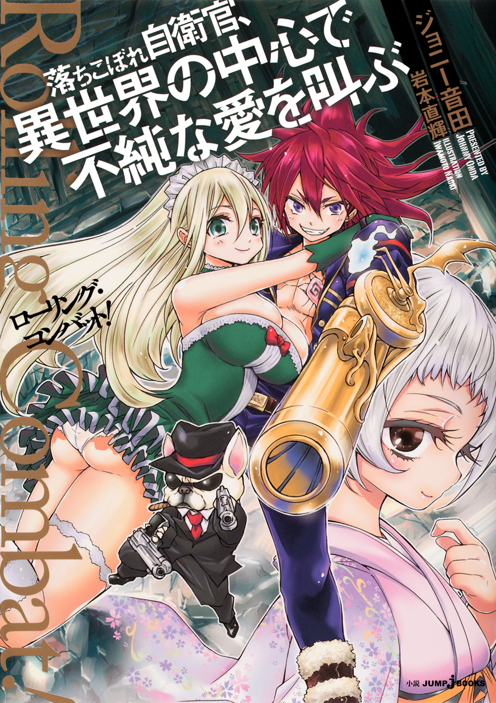
この本は縦書きでレイアウトされています。
また、ご覧になる機種により、表示の差が認められることがあります。
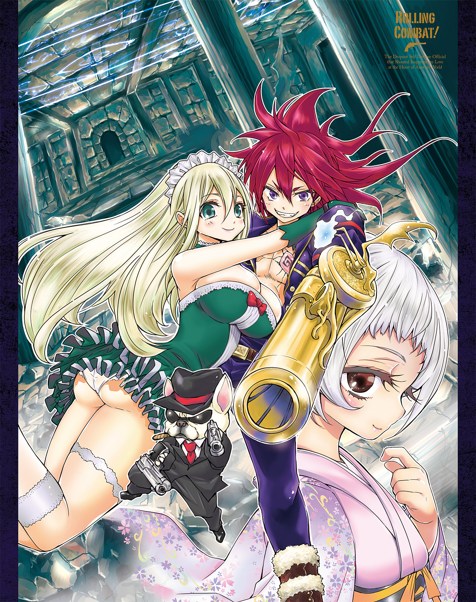
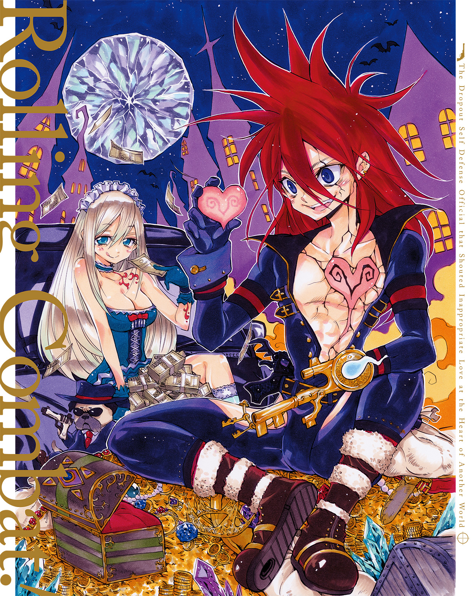
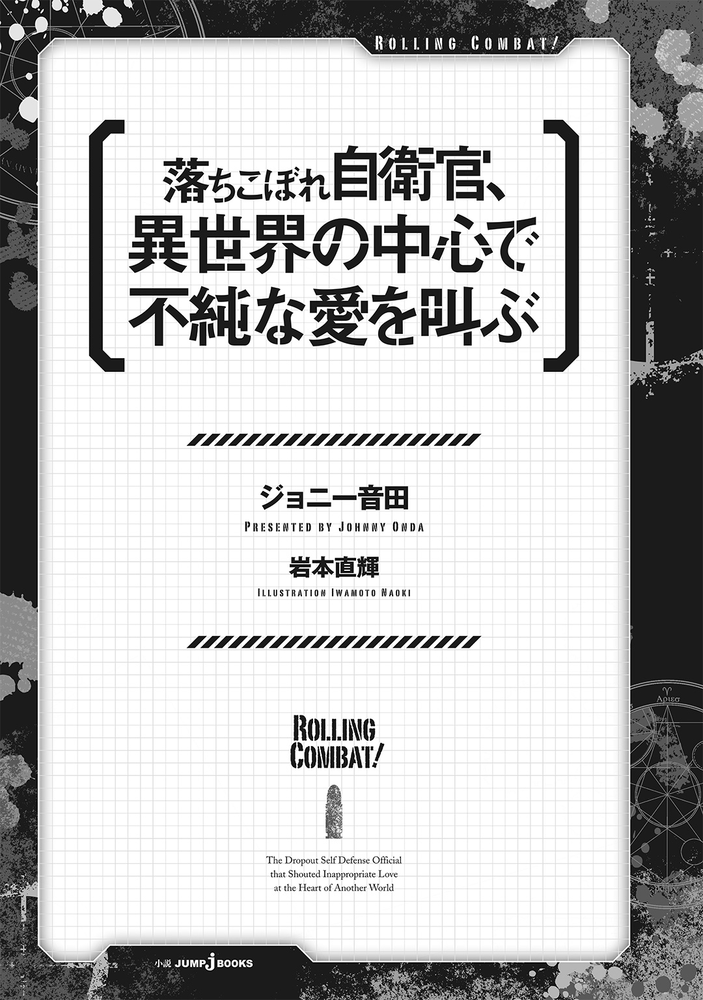
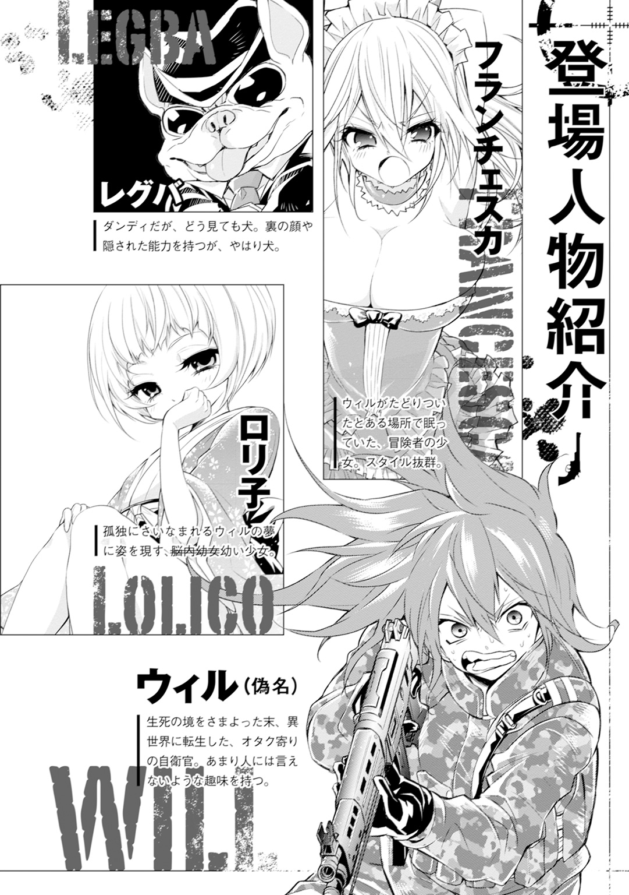
この作品はフィクションです。
実在の人物・団体・事件などには、いっさい関係ありません。
この仕事が終わったら業界から足を洗うんだ。
漠然と抱いていた理想なんかは捨てて、本格的に婚活を始めるんだ。
そんなフラグを立てていた時点で、気づいておくべきだった。
今回の現場で、僕は死ぬ。
「下がれ下がれ下がれ！ 装甲車の陰に敵影っ――」
「前線観測手、状況伝えろ！ 避難誘導に当たった三班は――」
火薬と血の臭いのなかに怒号が飛び交う。その上からかぶさるみたいにして、銃声と悲鳴があちこちであがっていた。
二〇ＸＸ年。某国。某地域。非戦闘区域であるはずの市街地で始まったテロは、たくさんの人を巻きこみながらじわじわと戦火の範囲を広げていった。
自衛隊の海外派遣制度が始まって以来、初めての戦闘行為だ。
争論の的になってはいたものの、基本的に自衛隊が海外の戦闘地域に派遣されることはない。だけど、目の前で戦闘が始まったら動かないわけにはいかない。万が一に備えて武装もしているわけだし。
ただ、発砲許可なんて出てないけどね。
言い忘れていたけれど、僕は人道復興支援活動の一環で市街を警邏中の陸上自衛隊員。これでも普通科。歩兵ってやつだね。だけど家に帰れば他の人と一緒。ｄアニメス○ア見ながらアイス食べるのが生きがいのアニオタです。
突然、目の前を走っていた仲間が首から血を噴き出して倒れた。
姿勢を低くして建物の陰に引きずりこんだ。仲間は何か言いたそうに口を開いたけど、すぐにごぽりと血を吐き出して死んだ。
認識票を回収する。ああ、こういう時って意外と訓練どおりにできるんだなあ、なんて思っていたら、涙がボロボロ出ていることに気づいた。
どうすればいいかわからなかったけど、とりあえず死体の瞼を閉じてから立ちあがった。すでに指揮系統がめちゃくちゃだから、もうマニュアルどおりの動きは期待できない。かといって個人じゃなにもできないから、とにかく本隊と合流して――。
背中を強く押されたみたいにつんのめった。
「......ごぼっ」
ずしゃりと膝から崩れ落ちた。ものすごい嘔気が押し寄せた。吐き出した。血だった。
その色は、黒が混じった赤。
あーあ。
......あーあ。
そりゃあまあ、こんだけ大規模なテロだったら、いるか。
いろんな所から狙いをつけている、スナイパー。
たぶん、肺とかが破裂したんだって思う。防弾チョッキって外傷は防いでくれるけど、衝撃を丸々吸収してくれるわけじゃないからね。近距離でライフル弾なんてぶちこまれれば、まあ、そうなりますよね、って感じ。
即死しなかったのは奇跡だけど、悪いほうの奇跡だ。死ぬまで地獄のやつだよ、これ。一応医療部隊も近くに駐留していたはずだけど、この状況のなかで機能しているとは思えない。
レンジャーの資格なんて取るんじゃなかったなあ。おかげで海外派遣組に抜擢されちゃったじゃないか。誰だよ、歳食ってから志願するとリーダーやらされるとか言ってた人。僕の社内ニート自衛官ライフを返してよ。とっとと即応予備自衛官になっとくんだった。
死にたくないな。
結局この歳までＤＴか。自衛隊はモテるって聞いてたんだけどな。やっぱり恋愛に理想を持ちすぎなのかなあ。そんなに高望みしているつもりはないんだけど。もしも彼女ができていれば、こういう時にその子のことを思えたのにな。
死にたくないな。
お母さんに連絡とったのいつだっけ。最近メールも返してないや。一週間に一回はくれるのにね。最後にもう一回だけお母さんのポテサラ食べたかったな。あのリンゴ入ってるやつ。全然美味しくないんだけど、あれ食べたいなあ。
......死にたくないなあ。
あ、外付けＨＤＤの画像フォルダ、ちゃんと隠したっけ？
.........死ねない――死ぬわけにはいかない。
「どのタイミングで生きる活力湧いてきてんだよ」
だって二次ロリ画像でパンパンなんだもの。『死亡した自衛官（ただしロリコン）』ってなったらどうすんの。
じゃなくて。
僕は声のしたほう、正面に向けて無理やり首を持ちあげた。
知らないおじさんがいた。仕立てのいいスーツに高そうなサングラス。こんな紛争地帯とは無縁そうなイケメンのおじさんだ。ついでに、この国の人の顔立ちでもない。
『なに......してるの、おじさん。早く、避難......』
「おー、こんな時まで人の心配できるのか。さすが、海外派遣されるだけのことはあるな ※ただしロリコン」
......日本語？
いや、でも、さっきも日本語で何か言ってたような......あれ、でも、僕って言葉に出してたっけ？
「そんなことより、人の心配してる場合じゃねーだろお前。このままだとあと五分くらいで死ぬぞ」
......ああ。そうか。
あれだ、このおじさん、死ぬ前の幻影か何かなんだ。じゃなきゃ心の中なんて読まれるはずがない。でも、なんでこんなむさ苦しいおじさんが出てくるんだろう。どうせだったらmagicoのルーたん似の美幼女のほうがいだだだだだだだっ!!
「幻影が傷口踏むか？ ロリコンって罵るか？ ルーたんはやるか？ こういうこと」
わかった！ わからないけどわかったから、足どけてください！ マジで痛い！ マジで痛いこれ！
「わかりゃいいんだよ。ああ、死期が早まっちまった。よし、さっそく説明入るぞ」
え、なにこれ？
知らないおじさんに悪口言われて、心読まれて、踏まれて、死期がどうこう言われて......。
「うるせえな。細けえことはいいんだよ。時間ねえからとっと話させろ」
心を読まれることも死期を早められることも細かいことではないと思うけど、彼は続けた。
「お、意外と冷静だな。じゃあもう、本題だけスパッといくぞ」
おじさんは葉巻を取り出しながら言う。僕も最後に一服できたらなあ。
「好きなだけできる。なぜならお前は、これから俺と契約して、生き延びられるからだ」
魔法少女として？
「もう一回踏むよ？」
ウソです。ごめんなさい、やめてください。
......でも、え、なに？ 僕、死なないですむの？ おじさん、医者？
「いたらいいな。心が読めて、内臓破裂が一瞬で治せる医者がよ。俺はそうじゃない。こういうのを生業にしてる、ただの悪魔だ」
悪魔て。どこのファント○ハイヴ家の執事なの。
「信じないなら信じないでいい。お前がこのまま死ぬだけだ。俺も少し面倒だが、また別のカモを探せばいい。それだけだ」
............。
「続けるぞ」
おじさんは葉巻に火をつけながら言った。いっさい状況は入ってこなかったけれど、それ以外することがなかったので、僕はおじさんの話を聞いた。
「お前はこのままだと死ぬ。だが、俺なら助けることができる。ここまではいいな？」
よくないけど、いいよ。話進まないんでしょ、そう言わなきゃ。
「そのとおり。でだ、助けるっていうことは、命を助けるってことであって、このままこの世界で生きられるってことじゃあない。この世界でのお前は死ぬ」
.........それって、つまり？
「お前は、違う世界で生きることになる」
やっぱり！
「やっぱりってなんだよ」
わかるよさすがに！ それってあれでしょ!? 今流行りのやつだよね！ 転生特典いっぱいつけて、異世界で無双できるあれだよね！
「状況入ってこないんじゃなかったのかよ。めっちゃ入るじゃねえか。説明の手間省けてありがてぇわ」
で、で!? どんな特典もらえるの!? 魔力が太古の魔王くらいあるの!? ボーナスポイントが99くらいあるの!?
「順を追って説明するから、一回落ち着け。興奮で死期が早くなる。あと気持ち悪い」
すいません。
「話を戻すぞ。お前はこの世界で死んだ瞬間から、異世界で生きていくことになる。その世界は、人間と、人間に何かが混じったヤツと、あとよくわかんねえモンスターとかが、なんかわさわさしてる。剣と魔法の世界ってやつだ。一回でもドラ○エやったことがあれば理解できる世界観だ、たぶん」
又聞きか。もっと詳しく説明してよ。
「その最中に誰かさんの寿命が尽きなきゃ、がっつり説明してやってもいいんだけどな。でだ、お前の言う異世界特典ってやつだけど、これは俺にはどうなるかわからない」
っていうと？
「そういうのってな、すっげえざっくり言うとだけど、今からどれくらい生きるかと、何を成し遂げるかによるんだ。これから長生きすれば長生きするだけ、頑張ったら頑張った分だけ、向こうで生きるための力になる。寿命も元気もあり余ってて、将来有望な若いヤツなんかは、ファッキンチートになれる。これからこっちの世界で得られる充実した時間の全部を捨てるってことだからな。それ相応の力も手に入るってことだ」
.........それって、
「ああ。つまりあと五分もしないうちに死ぬお前なんて、お前の大好きな幼女くらいの力しか持たずに向こうに行くことになる。パ○スなしでサンタ○ーズ行くような感じだ」
はあっ!? 嫌だよそんなの！ ビス○港に引きこもるわ！
「だったらどうする、このまま死ぬか？」
.........っ！
ものすごく悪い顔で笑うおじさんを見ながら、僕は考える。
このおじさんの話を全面的に信じてるわけじゃない。なんだったら、まだ僕の幻想だと思ったほうが現実味を感じられる。ネット小説の主人公みたいな体験が、そうそうに降ってくるとは思えない。
だけどおじさんの言うとおり、僕が信じようが信じまいが、僕はこのまま死ぬ。
さっきも言ったけど、この騒ぎで医療部隊が機能しているとは思えない。たとえ今すぐに見つかったとしても、この怪我と出血量じゃ助かる見こみは薄い。
まあ、それを言うんだったら、おじさんの話にだって信憑性なんてないんだけどさ。
いや、もうその段階でグダグダ考えるのはよそう。そこに確証を求めだしたら、たぶん余命（残り時間）が足りなくなる。いいえと言えば死ぬ。うんと言えば生き残れる。そこからで考えないとダメだ。
ただし生き残る場合、幼女レベルな特典しかもらえないで異世界に行くわけだけど......。
でも、それってそんなに悲観することかな？
死ぬか、異世界で生きるか。その二択だけで考えれば、そんなに悪くない気もしてきた。小説の主人公みたいに無双できないのは残念だけど、幸い僕はこのままでもそんなに弱くない。頑張って訓練すれば、モンスター相手に戦えるようになるかもしれない。
「あー無理無理。そんなぬるい世界じゃねえよ」
なんでそうやって水差すようなこと言うかな!?
「あとでクレームつけられねえようにだよ。それと、もうあんまり時間がねえからな」
言われて気づいた。視界が黄色く濁っている。
訓練で何回も味わったことがある感覚だ。気絶する前はだいたいこうなる。そして今気絶したら、たぶんもう目が覚めることはない。
......そっか。死ぬ前に意識がなくなるってこともあるのか。
「どうすんだよ、契約すんのか、しねえのか」
.........する。
考えもまとまらないうちに、踏んぎりもつかないうちに、不安も拭えないうちに、僕はそう言っていた。
死ぬのは嫌だ。死ぬのは怖い。
今死ぬより、あとで死ぬかもしれないという不安に駆られながら生きていたほうが、いい。
「じゃ、契約成立な」
TSUT○YAにＣＤ返してくるわ、くらいの感じで言ってから、しゃがみこんで僕の背中に触れた。そこを起点にして、温かい感覚が広がっていった。
それが終わった瞬間くらいだ。ひときわ大きな嘔気が押し寄せて、血をいっぱい吐いた。さっきまで身体が温かかったけど、急に寒くなった。
......いよいよ。
いよいよ僕は死ぬらしい。
うわあ。ヤバい。超怖い。
転生とか、本当にできるのかな？ このおじさん、本当に人を転生させる能力を持っているんだよね？ 心を読めるだけの、変なおじさんじゃないよね？
「死にながらでいいから聞け。お前のその、異世界特典？ ってやつは少ないが、送り出すヤツに標準装備としてやってる最低限のものはある。全部説明してる時間はねえけど、とりあえず、言葉は通じるようになってる。ちょっとだけ魔力もある。大事に使え。あと、さすがに可哀想だから、今持ってる武器とか持ってっていいよ。装備もそのままにしてやる。いろいろ脅しもしたが、そんだけのもんがありゃあ、まあ向こうで死なねえだろ、たぶん」
おじさんが何か言っている。ちゃんと聞かなきゃなのに、あんまり頭に入らない。ボーっとしてきた。とりとめもなく違うことを考えてしまう。
「それと、向こうで和名は浮くから、俺が使ってた昔の名前をやるよ。ウィル・ブラウンだ。うまくいけば、俺が世話してやった連中に優しくしてもらえるかもしれねえぞ。ま、敵も多いけどな」
ああ、どうしてこんなことになっちゃったんだろうな。工科学校入る前くらいからやり直したいなあ。そうすればつぶしが利く兵科取ってたのに。そんで卒業して違うことしてれば良かった。保育士さんとか、小学校低学年の先生とか......。
......あ、ダメだ。ヤバい、意識なくなる。気絶するちょっと前の感覚だ。
「それと最後に......あ」
そこでおじさんは、僕の後ろに視線をやると、何かに気づいたように口を半開きにした。
「......あれ、寿命が延びて......うそ、えぇ......もしかしてお前......助かっ――」
そこで意識を失った僕は、それ以上聞きとることはできなかったけど。
僕の後ろから、医療部隊の声がしたような気がした。
目を覚ました。
「.........！」
上体を起こして創部をまさぐる。痛くない。血も出てない。
ただ、視点が少し低くなったような気がするし、なんだか手足が短くなったように思う。全体的に縮んでしまったような、奇妙な感覚があった。
周りを見渡してみる。右も木、左も木。前も後ろも。日は高い位置にあったけど、視界は薄暗い。
うっそうと草木の茂った森の中に、僕はいた。
......夢、だったのかな？
なんて思ったけど、草木の臭いも、手をついた芝の質感も、鳥の鳴き声なんかも、すごくリアルだ。夢とは違う気がする。
............マジか。
死ぬ瞬間まで疑っていたけど、僕はどうやらガチで異世界に......。
......ってことは、目の前にいるアレも、ガチなのかな。
僕の前方、十メートルくらいだろうか。そこには、
「............」
ボロい鎧を着て、剣と盾を持った小汚い骸骨が、しっかり両足で地面を踏みしめて、いた。
「............」
こっちを見ている。こっち見んなと言いたい。
......いや、いやいやいいや、いや。
そんなバカな。
......うん。夢だ、これは。ちょっとリアルな夢だ。きっとあのまま気絶しちゃったんだな、うん。医療部隊の声もした気がしたし、たぶん助かったんだ。
僕だけかもしれないけど、夢だって自覚した夢は、頭のほうに力を入れながら覚めろって思うとだいたい覚める。今回もその手順を踏むことにしよう。
『......よう......じ......』
なんてことを思っていたら、骸骨が何か言った気がした。知らない言葉だ。
だけどなぜか、勉強したことのある他国語みたいな感覚で、その意味を理解することができた。
『......よう......じ』
言葉そのものは理解できたけど、くぐもっているし、発音も不安定だ。外国人が片言の日本語で喋ってる感じ。ってか、唇も舌も、声帯もなくてどうやって声出してるんだろう？
『よう......じ......ょ』
え、なに？ ようじ、よ？
......幼女？
『幼女ぉぉおお!!』
「はあっ!?」
骸骨は、そう叫びながら僕に襲いかかってきた。
「いや、いやいやいや!!」
大上段に構えた剣を、突進の勢いのままに振り降ろす。僕はごろごろ転がってそれを躱した。一瞬遅れて、夢ならべつに避ける必要なかったな、なんて思っていたら、
「げふっ！」
大きく振りかぶった盾でぶっ叩かれて、吹っ飛んだ。
超いってえええええ!!
なにこれ、夢の痛みじゃないよ！ 仮に夢だとしても起きるやつだよ、この痛さ。っていうか、幼女って叫びながら暴行を加えてくる骸骨の夢ってなにさ！
『幼女！ 幼女がぁあ！』
目は全然覚めないし、骸骨は僕に向かって追撃してくる。全然思考を整理させてくれない。
「うわ、うわああ！」
僕はまた横に転がってそれを避ける。今度は盾の追撃を避けるために大きく飛んだけど、むこうはすぐに切り返して追撃してくる。なにこの骸骨、超早い！
逃げなきゃ、逃げなきゃ！
そう思って立ちあがろうとしたら、足元に何かがぶつかった。
僕の銃だ。陸上自衛隊員が標準装備として支給される、89式自動小銃。
「............」
僅かな逡巡の後、僕はそれを手に取った。セーフティ（ア）からフルオート（レ）に切り替える。足を肩幅に開いて、こっちに走ってくる骸骨に照準を合わせた。
「うわあああ！」
マズルフラッシュを伴って放たれた５・５６ミリ弾は、ひとつ残らず骸骨の胴体に食らいついて、あっという間に汚い鎧を穴だらけにした。その中にある胴体の骨も粉々に砕いて、腹あたりで上半身と下半身をまっぷたつに割る。
『幼......女......』
こんな辞世の句は嫌だ、みたいなお題の大喜利を言ってから、骸骨は倒れた。
「はあ......はあ」
トリガーに指を掛けながら周囲を見回す。新手がいないか確認しなきゃいけない。落ち着いていたわけじゃなくて、訓練で染みついた癖だ。次に、倒れた骸骨も注意深く観察する。ピクリとも動かない。
「............」
セーフティをかける。銃剣を小銃に取りつけてから、ゆっくり骸骨に近づく。それが届くギリギリの距離から頭蓋骨を小突いてみたけど、やっぱり動かない。
死んでる、よね......？ いや、死ぬって言葉が適用できるかどうかわからないけど。できるとなると、僕は彼を殺してしまったことになるのだろうか。考えてみれば警告も牽制射撃もなしに攻撃してしまった。しかも彼は『幼女』と叫んでいた。つまりそれは、同朋ということだ。最初につっこんできたのは、もしかしたら『よく来たなブラザー、ご機嫌なビートでソウルフルなセッションといこうじゃないか』的なハグだったかもしれない。剣と盾を使って、ちょっとスリリングに出迎えてくれるのが、こっちのナウなトレンドなのかも。だとしたら、『ようブラザー。俺もあんたに会えてご機嫌だ。お近づきの印に、魔改造したねん○ろいどを持ってきた。そいつを肴にパーリーナイトといこう』的な返しをしたほうが......。
落ち着け僕バカ野郎、落ち着け僕バカ野郎。
......マジか。
マジで来ちゃってるのか。
「......異世界」
言ってから、もう一度目を剝いた。
「異世界」と呟いたつもりだけど、日本語じゃない。英語とも違う。僕が死んだあの国の言葉でもない。
喋ったことも聞いたこともない言葉で、僕は喋っていた。
だけど、喋る気になれば元の言葉でも喋れる。同時に、この世界（？）の言葉でも喋ることができる。そういえば、あの骸骨が言っていた言葉だって理解することができた。たぶん、使える言語がひとつ増えたような感じなんだ。
この短期間に。
そういえばあのおじさん、言ってたな。異世界特典がどうのこうのとかで、言葉がわかるようにしてくれるとか、なんとか......。
「いよいよだな」
覚えたての言葉じゃなくて、日本語で言ってからため息をつく。
たぶんだけど......いや。もう断言していいだろう。
これは夢じゃない。反動の感覚も、戦闘装着セットの重さも、硝煙の臭いなんかもひたすらリアルだ。とても夢になんか思えない。
あのおじさんの言ってたことは、全部かどうかはわからないけど、ガチなんだ。
剣と魔法の世界。モンスターとかが、なんかわさわさしてる世界。
そういう世界に、僕は来ちゃったんだ。
信じられない。信じたくない。だけど、さっきと同じだ。僕が信じようが信じまいが関係ない。気を抜いたら痛めつけられるってことは確かなんだから。
......どうしよう。これから。
同朋（骸骨騎士）の身ぐるみを剝いでから、安全そうな場所を見つけて装備の点検。と言っても、予備の弾倉と副兵装の９ミリ拳銃。あとはタバコとかスマホとかのわずかな私物しかないけど、整理しておくことは必要だ。その後は水場と寝床の確保。バックパックに入っているレーションとかで三日くらいは持つ。その間に食料の確保とできる限りの地形の把握。
だけどそういうことじゃない。そのもっと先だ。ここが本当にドラ○エの世界みたいに単純ならいいけど、今までの世界と同じようなルールで動いていた場合、かなりまずい。
例えば人と接触できたとする。戸籍もないし身分証もない、社会常識もない人間に、果たして周りの人はどんな反応をするだろうか？ 身元が割れない人間なんて信用できない。信用できないということは、仕事も任せられない。
実績を積み重ねていけば信用くらいはしてくれるようになるかもしれないけど、実績を積むためには力をつけなくちゃいけない。銃を使い続けていくわけにもいかないし、力をつけている間にも食べ物は必要だ。どれくらいでこの世界で通用する力を身につけられるかなんて知れないけど、一日二日じゃ無理だろう。その間、まさかずっと自給自足するわけにもいかないし、どうやったって働かなくちゃ生活していけない。
働くためには、たぶん身分を証明するものが必要だ。
......ヤバい。泣きそうになってきた。
いや、っていうかそもそも、僕の転生特典は幼女レベルなわけだから、この世界で一人前に通用する力を得られているかってことから怪しい。
「......おぇ......おぅえ......」
吐いた。ある意味さっきのゲリラ戦より絶望的だ。
......よそう、考えるのは。
ひとまず今は、さっき確認した手順を踏んで一息つける場所を確保しよう。まずはこのサバイバルな環境で生き抜かないと。
骸骨騎士の剣を持ってみる。全長は七十センチくらい。幅広の両刃で、柄の部分は象牙か何かでできている。グラディウスってやつだろうか。刃はほとんど潰れているから剣としては役に立たないだろうけど、一応鞘ごともらっておこう。
次に腰から下げていた布袋。これには僅かな銀貨（銀製だから、たぶんそうだ）と、トップに赤い飾り玉のついたネックレスが入っていた。これはラッキーだ。ドロップアイテムはこうじゃなくちゃね。
続いて防具に手を掛けようとしたとき、僕はそれに気づいた。
『......ポニ......テ』
『枯れ専、枯れ専』
長尺で絶望していたり、ドロップアイテムに気をとられていて発見が遅れた。
右と左、十メートルくらい離れた所にそれぞれ一体ずつ、骸骨騎士がいた。
「こ、攻撃しないでくれ！ こちらに戦闘の意思はない！」
言葉を話せるのなら、声をかけるっていうアプローチも有効だと思ったんだけど......反応薄いな。
そりゃそうか。仲間の死体の身ぐるみ剝いでるヤツの言葉なんて信用できないよね。
「彼には不当な攻撃を受けたため、やむを得ず射殺した。正当防衛を主張する。しかし申し訳ないことをしたとも思う。自己弁護はさせてもらうが、あなたたちの規律に身柄を預ける意思もある」
やっぱり反応はない。にじり寄ってくるだけだ。聞く耳を持たないのか、そもそも言葉が理解できないのか、そこまではわからないけど、少なくとも心が動いた様子はなさそうだ。何か彼らの動きを止める言葉は......。
......ある。あるじゃないか。百パーセント彼らに通じる共通言語が！
彼らはずっとヒントを出してくれていた。くそ。どうしてもっと早くそれに気づかなかったんだ。そうすれば、輩を殺さずにすんだかもしれないのに。
僕は両手を挙げながら、極めてフレンドリーな口調で、
「僕はロリコンだ」
彼らは雄たけびを上げながら、挟撃するみたいに僕に攻撃を仕掛けてきた。
「なんでだ!?」
つっこみながら前方に向けてダッシュした。それと一緒に正気に返った。落ち着け僕バカ野郎。性癖の発表で私刑免除ってなんだよ。
とにかく交渉（というか意思の疎通）は決裂だ。僕は適当な木に背を預ける形で振り返る。骸骨たちは、並走するみたいにして僕についてきた。これなら両方とも視界に入る。
まずは左手の骸骨に向かって射撃。胸から腹にいくつかの風穴が空いて吹っ飛んだ。次に右手の骸骨。頭に向けて弾丸を撃ちこむと、呆気ないくらいにあっさり頭蓋骨が弾けて、足でも滑らせたみたいにもんどりうって倒れた。
ゲームの実況だったら、コメント欄がまあまあ盛況するくらいのクイックショットだったと思う。だけどこれはＦＰＳでもサバゲでもないので、死ぬほど後味が悪い。空薬莢が飛ぶたびに始末書がちらつくよ。発砲理由になんて書けばいいんだ。
なんて思っている場合じゃない。さっきと同じように戦局哨戒して、安全を確保......。
『......おっぱい。お、......ぱい』
『絶対......領域』
『......ふたなり、ふた、なり』
............。
『着エロ！ 着エロぉお!!』
『素人、し、素人......』
『ガチムチ！ ガッチムチィ！』
軽く見まわしただけでもわかる。たぶん、十や二十じゃきかない。
口々に性癖を吐露するブラザーたち数十体に、僕は囲まれているみたいだった。
あーあ。
......あーあ。
そりゃまあ、そうだよね。
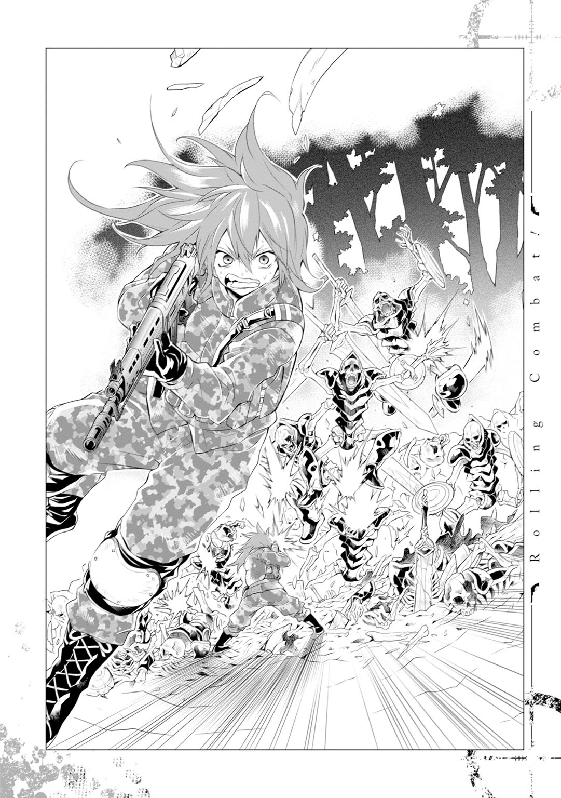
あれだけデカい音たててれば、仲間も来ちゃうよね。つちわ○しとかリ○パットばりに。
視線は彼らに繫ぎとめたまま、僕は胸元の弾倉を確認した。少なくはない。でも多くもない。だって性癖を口にする骸骨たちに囲まれるっていう実戦は想定してないから。
『ＮＴＲ』
一番近くにいた骸骨がグラディウスを振り上げた。反射的に胴を撃ち抜く。それを皮切りに、崩れ落ちた向こう側からたくさんの骸骨が押し寄せてきた。
「うわあ、うわあああ！」
集団に向けて弾丸をばら撒いた。骸骨たちは吹っ飛び、弾け、仰け反り、もんどりうったけど、数の暴力が僕を逃さない。弾倉をつけ替えて迎え撃つ。走って距離を稼いでからまた撃つ。リロードして撃つ。空薬莢の数からは始末書を連想しなくなっていた。リロードする。撃つ。ボロボロ泣いていた。撃つ。何回もお母さんのことを思い出した。撃つ。死にたくないから撃つ。硝煙で咳きこんだ。咳きこんで吐いた。吐きながら撃つ。嫌だ、死にたくない。死にたくない。撃つ。逃げる。撃つ。逃げて撃つ。死ぬのは怖い。
死にたくない、死にたくない、死にたくない。
「はあ......うぇ......はあ」
逃げこんだ洞窟の中で、僕は胎児みたいに丸くなっていた。
ブラザーたちとの戦闘は、なんとか勝利を収めることができた。勝利って言葉が適用されるかはわからないけど、最後の一体までバラバラになったのはブラザーたちで、それを成したのが僕なのだから、とりあえず勝ちってことでいいんだと思う。
ただ、僕もボッコボコだけどね。
骸骨たちを一桁にまで減らせた時点で、弾倉が尽きた。予備兵装の拳銃の弾丸もすぐになくなった。銃剣術に切り替えて応戦を試みたけど、ここからが本当の修羅場だった。
攻撃が当たるには当たる。でもびくともしない。個体によってはある程度通用したけど、それでもせいぜいたたらを踏ませるくらいだった。つまり返す刃の盾や剣などで反撃される。結果ボコられる。防弾チョッキを着ていなければ、残った数体が運よく攻撃の通じる個体でなければ、崖に突き落としたりとかできなければ、何回か死んでいた。
そんなわけで、最後の一体をやっつけるのと同時にその場から離脱して、他の骸骨とエンカウントしないように隠れながら動き、安全かどうかもわからない洞窟の中に逃げこんで、泣く。←今ここ。
ちなみに、小銃も拳銃も叩き折られた。バックパックも切り裂かれて中身を落とし、防弾チョッキもヘルメットもボロボロ。早くも自衛官であるという強みを失ってしまった。
......なんなの今日。ありえないって言われてた自衛隊を巻きこんだテロが起きたり、ありえるって言われてた異世界特典がもらえなかったり、こっちの世界でもあるって思ってた二次ロリってジャンルが全然出てこなかったり......二次ロリがない世界なんてありえない。
ありえないっていえば、もうひとつ。やっぱり僕の身体は、だいぶ縮んでいるみたいだ。
いや、若返ってるって言うべきなのかな。十代の半ばか、下手すれば前半くらい。その当時の身体に僕は戻っているみたいだった。正確にいくつなのかわからないけど、少なくとも工科学校に入る前だってことはわかる。
どうしてわかるかって？
......髪の色が赤いからですよ。
中学校の二年から工科学校に入学するまで、自由な校風なのをいいことに、僕は長髪を赤く染めていた。ペンキでもぶっかけたみたいな真っ赤な色に。
どうして赤かったって？
ヒント...中二だったから。
その時の僕に聞いてみるといいよ。ちょっと視線を外して遠くを見ながら『血の色は赤だから』って答えあああああああああああああああああああああああああっ!!
うう、くそ。ホントになんなんだ今日......いきなり理解できない世界に連れてこられて、変態の骸骨にボコられて、自分の黒歴史にまで向き合わされるなんて......。
......なんて、泣き言も言ってられないよね。
もう一度目を拭って、洞窟の外を見てから、僕はゆっくり立ち上がった。僕が今いるのは、光が届くか届かないかくらいの薄暗い所だ。ちょうどつい立てみたいになっている岩肌があったから、ここに身を隠すことにした。だけどいつまでもここにいるわけにはいかない。中が安全かどうかを確認しなきゃいけない。
武器はナイフとさっきパクったグラディウスだけ。身体中あざだらけだし、しかもなぜか若返っているわけだから、筋力も相当落ちている。状況は依然として幼女だ。
だけど動かなければ死ぬ。死ぬのは嫌だ。死ぬのは怖い。
だから動かなければならない。やることはしないといけない。
......なんでこんな原始的な欲求から動機を引っ張ってこないといけないんだ。
ダメだ、こんなんじゃあ。死ぬのは確かに怖いけど、ＧＤＰ第三位の国生まれの僕は最低限のラインがそこじゃあモチベーションが上がらない。もっとこうなんか、生き延びられたらこんな楽しいことが待っている！ 的なのがないと......。なにか、異世界ならではのお楽しみとかないかな。
・magicoのシオンみたいな超すごい魔法を使える！ →僕の異世界特典は幼女レベル。
・エルフとかセイレーンみたいな超美幼女と出会える！ →幼女は幼女にモテない。
・ダンジョンに入ってお宝を見つければ超大金持ちに！ →だから幼女が（ｒｙ
考えれば考えるほどあのおじさんに84式無反動砲をぶちこみたくなってきた。でも考えろ。考えるんだ。生への活力に繫がりそうな何かを、何かを......！
・異世界に児ポ法はない。
「よし」
もう一度外を確認してから、ライターを取り出して灯りを確保。そこに浮かび上がった僕の顔は、きっと今まで浮かべたどんな顔よりも精悍な面魂を宿したものだったに違いない。
決意を新たに歩きだそうとすると、僕の赤い髪（染髪剤をドロップする骸骨はいないかな）に何かが触れるのを感じた。岩肌から出ている何かにあたったみたいだ。灯りを近づけて観察してみると、輪っか状になっている細身のチェーンのようなものが、岩肌から生えるみたいにして垂れ下がっていた。
手に取ってみる。軽く引っ張った。するとチェーンはなんの抵抗もなく抜け、ドロップアイテムと同じような飾り玉が岩から出てきた。ただしその色は青。岩肌のほうには、玉と同じ大きさの窪みが残っていたのだけど、
「うお！」
その窪みが、がちょ、っと閉まった。暗いから見間違えたわけじゃない。確かに閉まった。
もう一度玉を近づけてみる。また窪みが現れた。玉を離す。窪みが閉じた。
「............」
......剣と魔法の世界、か。
いやでもこれは、そんな理解できないものじゃない気がする。
例えばそう、鍵。
僕は学校のロッカーを思い出した。疲れていたりすると、ついつい鍵を鍵穴に差しっぱなしで帰っちゃったりするんだよね。
試しにライターを近づけてみた。窪みは現れない。手やグラディウスでも一緒だった。
やっぱりこの飾り玉は鍵で、窪みのほうは鍵穴なんだ。
......どうしよう。罠的なものなのかな。宝箱かと思ったらミ○ックでしたのやつ。いやでも、これはそんなわかりやすいものじゃない。普通に歩いていたらスルーしてた。いやいや、でもそう思わせといて罠でしたなんてよくある話じゃないか。いやでも......。
......堂々巡りだね。
念のためにグラディウスを振りかぶってから、僕は飾り玉を窪みに近づけた。まだ洞窟に入ってすぐの場所だ。罠だったら逃げればいい。
飾り玉を窪みに差しこんで、回したり押しこんでみたりする。そうやってガチャガチャ（って音は出てないけど）やっているうちに、
ズゴゴゴゴ。
自動ドアみたいに岩肌が横に開いていった。
「............」
いや、まあ、嬉しくないわけじゃないし、罠じゃなくて安心もしたけど、これはなんていうか、あまりにあからさまなような......。
ともかく、中をライターで照らしてみる。そんなに大きくはないスペースみたいだ。生き物の気配はない。玉を窪みから抜いて、中に入ってみた。すると、しばらくして岩肌が閉じる。入った時と同じ手順で開閉できることを確認してから、改めて中を観察した。
六畳あるかないかくらいの、何も置いていない縦長のスペースだ。一酸化炭素中毒にさえ気をつければ、居住スペースに使えるかもしれない。
なんて思いながら、部屋の奥に進んでいくと、
「!!」
いきなり足下が発光しはじめた。その光は複雑な紋様を刻みながら、あっという間に直径一メートルくらいの環状に広がっていく。
魔法陣。
そんな言葉が頭の中で躍る。暗くてわからなかったけど、きっと地面にそういうのがあって、僕はその上に乗っちゃったんだ。
慌てて飛びのこうとするけど、遅かった。足元から引っ張られるような感覚に襲われて、視界がぼやける。
そして、
「............」
再び視界が戻ったとき、まず目についたのは、高い天井から吊り下がる大きなシャンデリア。ガラス製であろうそれは、豪奢な室内を照らし出している。
その真下あたりにあるのは、マホガニー製と思しき立派なテーブル。それをコの字型に囲うソファも、黒い革張りの豪華そうな逸品だ。さらにその下に敷かれている淡いグレーの絨毯も上物。
右手に見えるのは、対面式のダイニングキッチン。三十センチくらい掘り下げた土間があり、大きな壺や樽が並んでいる。食べ物とか調味料の保管用だろう。
部屋の左手には薪ストーブがあった。その奥にはたくさんの本が入った背の高い本棚。ストーブの前のソファに座って、お酒でも飲みながら本を読んだら、きっと気持ちいいだろう。
......部屋。
そう、部屋だ。
六本木あたりで借りたらひと月五十万からしそうな平米の部屋に、僕はいた。
「............」
足下を見てみる。一部だけ岩肌になっている地面には、魔法陣らしき円があった。
そこから出て、また乗ってみる。するとまた光って、暗い岩肌の小部屋へと戻った。もう一度同じことをしてみると、家賃五十万の部屋へと来た。
どうやらこの魔法陣（仮）を通して、あの部屋とこの家賃五十万は繫がっているらしい。
......剣と魔法の世界、すげえ。魔法陣の上に乗るだけでワープできちゃうとか、どんな住居オプションだよ。
横を見ると、他にも同じような魔法陣がいくつかある。全部どこかに繫がっているのだとしたらすごい。
いや、そんなこと（？）より、僕がしていることはただの住居不法侵入だ。異世界とはいえ鍵がつけっぱなしだからって入っていい道理にはならない。これだけ住環境が整っているのに『ですからあぁ！ ただの洞窟だと思ったんですぅ！ うわああ！』じゃ通らない。
とはいえ、幸か不幸か人の気配はない。一応、ごめんください的なことを大声で言ってみたけれど、そのレスポンスもない。
......けど、なんだろう、この感じ。部屋の中にいるのは僕ひとりのはずなのに、ときどき何かの視線を感じるというか、誰かの気配を感じるというか......。行動を監視されているみたいな、気持ち悪い感覚がするんだよね。
っていっても、他に身を隠せそうな所もないし、またあのブラザーたちのハグに飛びこんでいく勇気もないし......うーん。どうしよう。とりあえず入っていいかな。
......いいよね、緊急事態だし。
何かメモ帳でもあれば書置きできるのに、なんて思っていたら、都合のいいことにテーブルに紙とペンが置いてあった。紙は茶色くて脆そうだし、ペンも箒ペンってやつで書きづらそうだけど、ちょっと書置きする分には問題ないだろう。
僕はそろりとそれらに手を伸ばし、緊急やむを得ずお宅をお借りしているというような旨の手紙を書いて（この世界の文字が書けることに驚いたりしない）、入り口の魔法陣の前に置いておいた。これで家主が帰ってきた時の心象の悪さが、百から九十九くらいには下がるだろう。少なくともいきなり攻撃されないことを祈る。
「......よし」
そんなこんなで準備をすませて、僕は部屋の探索を始めた。
部屋の魔法陣は、全部で十個あった。
それぞれ繫がっているのは、誰かの私室一、私室二、私室三、浴室、訓練室（サンドバック的な物とかあったから、たぶんそうだ）、書斎、家庭菜園のある屋上、医療道具の揃った医務室、何に使うのかよくわからない、だだっ広い部屋。そしてあの岩肌の小部屋だ。ご丁寧にも、それぞれの足下にどこに繫がっているか書いてあったからすぐにわかった。ちなみにリビングから繫がっているのがこの十部屋なだけで、各々の部屋にも魔法陣がいくつかあったから、きっともっとある。なんというドアトゥドアの生活。
調べている最中いくつか気づいたことがあった。
まず、ここはたぶん、長い間放置されている。全部の部屋にはうっすらとほこりがたまっていた。三、四か月くらいは放置しないとこうはならない。キッチンの食べ物も、干し肉とか魚の干物は無事だったけれど、野菜なんかは全滅だ。干からびたり腐ったりしていた。
次に、骸骨騎士からパクった赤いネックレス。これ、魔法陣を渡る瞬間に、魔法陣と同じ色に光ってるみたいなんだよね。隠し扉を開けるための鍵があの青いネックレスなら、魔法陣を飛ぶために必要な鍵は、この赤いネックレス......なのか？ なんて思って、試しにグラディウスだけを魔法陣の上に置いてみたら、転移しなかった。たぶんそうなんだと思う。
でも、だったら、どうして骸骨騎士なんかが持っていたんだろう？ っていう疑問は、予想以上のことはできなさそうなので、ひとまず保留にしておく。
そして最後に、部屋の至る所で、血痕を見つけてしまった。
血痕は出入り口とリビングを繫ぐ魔法陣を起点にして、医務室へ行く魔法陣に続き、医務室の最奥にある扉へと繫がっている。その扉は青い飾り玉でも赤い飾り玉でも開かなかった。岩づくりの頑丈な扉だ。大事な薬とか貴重なものを保管している部屋なのかもしれない。
......アニメや小説のテンプレに当てはめて、考えてしまう。
家にあるものからして、家主たちは冒険者か何かだ。そういう職業があるかどうか知らないけど、少なくとも戦闘に携わる仕事なのは間違いない。
そんな彼らは何かで怪我を負った。それもけっこう大きな怪我だ。それでもなんとかこのアジト付近へと帰ってはこられたけど、ひとり、またひとりと、骸骨騎士の餌食になり、身ぐるみを剝がされてしまう。最後に残ったひとりは、なんとかアジトに戻って医務室までたどり着き、件の部屋の回復アイテムに手を伸ばしたけど、そこが限界だった。彼は傷が治る前に絶命し、今もなお、その開かずの間の中で覚めない眠りについている......。
なんてね。
まあ、実際は普通にあの部屋の中から、血の色に似た何かの液体を持ち出して、こぼしたのに気づかないままで長期遠征に行っちゃったとか、そういうやつだろう。骸骨が鍵を持っていたのも、持ち主が落としたのを骸骨騎士が拾ったって考えるほうが納得できる。
もちろん中二仮説の可能性も捨てきれないけど、ぶっちゃけそこはあんまり重要じゃない。この家が賃貸じゃなくて分譲になるならそりゃ嬉しい。でも住まぬ豪邸の建坪算用よりも先にやることがある。
この世界で生きるための力の取得。弱っちい異世界特典を少しでも有益に運用する方法を考えなくちゃいけない。
ここには衣食住が整っている。たくさんの本もある。訓練室まである。家主が帰ってくるまでの期間限定ということを差し引いても、だいぶ恵まれた環境だ。
そして僕には銃以外にも戦闘の知識と技術がある。身体はまた鍛えればいい。
できる限り短期間で、この世界で通用する人材になる。
難しいことだとは思う。ネット小説の主人公たちみたいにうまいことできるかどうかわからない。きっとできないだろう。幼女レベルな特典だし。
だけど反面で、どこか興奮している自分もいた。悪い興奮じゃない。高揚感とかの類だ。
元の世界の僕は、たいして考えもせずに早く独立したいってだけで自衛隊に入って、いろいろ資格とか取ったりもしたけど、結果的に辞めたくなって、うじうじ悩んでいるうちに、死んだ。間違っていたとは思わない。けど、もう少しうまくやれたとは思う。後になって思えばね。
それを失意とか後悔とかで片づけるんじゃなくて、経験として活かすことができる。
いろいろ度外視する必要はあるけれど、これはどえらいチャンスなんじゃなかろうか。
特典はないに等しい。だけど特典なんてなくて当たり前だ。生まれた時にそんなものはなかった。安全な環境はないかもしれないけど、代わりに健康な身体と経験がある。
それを、この剣と魔法の世界で活かせる。
男の子なら誰しも一度は憧れたことのある世界で、予期せぬワンチャンスを拾えたんだ。
興奮しないわけがない。
「......やってやる」
決意を固め、ひとりごちた僕は、
「......こっちにもサテン地っぽいのがあるのか」
意を決して私室のタンスを開け、パンツを物色していた。
部屋に入った瞬間からわかっていたのだけど、置いてあるものからして、ここの家主たちはたぶん、全員女子だ。
つまり僕は、かっこいい顔で女子の部屋のパンツを漁っているということになる。
勘違いしないでほしい。これはあくまで情報収集の一環だ。幼女レベルで渡世していくためには、たくさんの情報を集めなくてはいけない。なかには下着をかき分けた末にしか手に入らない情報だってあるだろう。
これから始まるサバイバルに備えて女子分を補給しておきたいとか、この際ロリじゃなくても少しくらい興奮できるとか、そんなやましい気持ちではなく、あくまで真摯な気持ちで。
「ブ、ブルマ！ ブルマだ！ ブルマもあるんだ！ ひゃっはあ！ ロリ神様ぁ！」
この世界のブルマもかぶることが可能かどうか検証する必要があったため、やむなくかぶった。洗濯ずみなのが残念だ。使用ずみのかぶり心地も検証したかったのに。
「......ん？」
更なる研究材料を探して引き出しの中を見ていると、視界の端に光るモノがあった。
確かに神々しいものだけど、なんて思いながら手を伸ばすと、ネックレスだった。
鍵になったそれらと同じデザインのものだ。飾り玉の色は緑。
......これって、もしかして。
私室の復旧をした後、僕は医務室に行ってみた。例の開かずの間の前だ。
緑色の飾り玉を扉にかざしてみる。
案の定、中央に鍵穴となる窪みが現れた。
......やっぱりこのネックレス、この部屋の鍵のスペアキーなんだ。大事なものが保管してある所なら、もっと他に隠し場所あるだろって思うけど......いや、下着が仕舞ってあるタンスなんて、当人以外開けないか。
ごくりと生唾を飲みこむ。
いやまあ、ないとは思うよ？ ないとは思うけど、僕が立てた中二仮説が正しかった場合、ここには女子の死体が眠っているということになる。
開かずの間は特に溶接なんかはされていない。だけど、これだけしっかりした岩の扉があれば、中の腐臭とかがこっちに出てくることもないとも思う。ここの臭いじゃ判断できない。
......ええい、ままよ！
大きな深呼吸ひとつ、窪みに飾り玉を差しこんだ。扉は重厚な音を立てて左右に開いて、
「............」
扉が開ききったその先は、白い部屋だった。
大きさは医務室と同じ、二十畳くらい。だけどものはほとんど置いてない。いろんなものが入っていそうな大きい革袋と棚が片隅に置いてあるくらいだ。
部屋の大半を占めているのは魔法陣だ。ひたすらデカくて、他の部屋で見たやつより複雑だ。十重二十重に張り巡らされたそれの真ん中には、人ひとりが入れるくらいの楕円形の容器があった。材質はわからないけど、透明な何かでできていて、中は透明な液体で満たされている。酸素カプセルとかをガラス張りにして水を張ったらこんな感じかもしれない。
こっちの世界にもこんなのあるんだ、っていう驚きよりも先に、びっくりした。
そのカプセルの中には、一糸纏わぬ姿の女の子が入っていた。
今の僕と同い年か少し上くらいかな。きれいな金髪の可愛い女の子だ。おっぱいの大きさに比べてくびれたウエストに、形のいい腰回り。そこから延びる脚はすらりとしているけど、女性的で柔らかな線を描いている。とんでもないプロポーションの美少女だ。
ただ右腕と、左の足首がない。ところどころに痛々しい傷もあった。口には酸素マスクみたいなものが被せられていて、意識のない重病人みたいな様相だった。
......いや、意識がないっていうか、死んでるのかな？
近づいてみる。大きな胸は小さく上下しているし、顔色もいい。なんだったらすぐにでも起きだしてきそうだ。
カプセルの周囲には血のついた服が散乱している。緑色のネックレスもその上にあった。
「............」
つまり、僕が立てた中二仮説は、途中まで合っていたんじゃなかろうか。
大怪我を負って帰ってきた彼......もとい彼女は、命からがらこのＩＣＵ（仮）に辿り着き、この生命維持装置（仮）の中に入って、回復を試みている......と。
（仮）の多い話だ。前提からしてそうだし、このカプセルが生命維持装置かっていうのも怪しい。逆に少女の命をゆっくり吸いとるようなものだってことも考えられる。もしそうだったら、今すぐにでも彼女を中から引きずり出したほうがいいかもしれない。
さすがにそれはないにしても、本当に生命維持に必要な道具だったら、彼女の身体がどうなるかわからない。
......うーん。これも保留にしよう。魔法素人の僕が手を出すのはいろいろ危ない気がする。
ヤバそうだって判断したらすぐに引き上げればいいだけの話だ。ちょくちょく様子を見にきてあげることにしよう。
眼福にもあずかれるし。
ホントはロリがよかったけど。
そんですそんです、私が変態のおじさんです。
充分とは言えないながらも女子分の補給を終えた僕は、書斎に向かった。真剣な話、本当に情報を集めないと何もできないからね。
特に魔法に関しては早急に知っておく必要があると思う。さっきの光景ひとつとったって、魔法がどれくらいこの世界で重要なのかを物語っているみたいだったし。
そんなこんなで書架を漁る。十数冊目に開いた本の中で、ようやく基礎的な知識に触れている部分があった。他は全部論文とかレポートみたいなのばっかりで、何が書いてあるかさっぱりだったんだよね。
......まあ、当たり前か。本の持ち主はこれだけの豪邸を建てられる人なんだから、基礎レベルの本なんて持ってたってしょうがないよね。
ともかく、やっと見つけた入門知識を読んでみる。魔法は全部で、
・身体作用系→身体能力の底上げ、傷の治癒など、身体に影響を及ぼす魔法。
・空間作用系→火や水など、魔力を他のエネルギーに変換。また、無生物の操作など。
・亜空間作用系→召喚魔法、結界魔法の発現。
の、三つ。概ね元の世界からの知識で理解できる概念だ。身体系→回復、バッドステータス付与。空間系→五元素等の攻撃。亜空間系→召喚獣の使役、ダメージ遮断ってとこだろう。
予想と違ったのは、基本的にひとりに使えるのはひとジャンルだけってこと。
多くてもふたジャンル。全部のジャンルを使える人なんかは滅多にいないそうだ。
とにかく魔法はこの三つ。古い言い方で身体系、空間系、亜空間系って名前がついているらしい。かっこい......いや、中二っぽい名前だ。僕はそんなふうには呼ばないぞ。
僕がまず着目したのはウルズだった。スクルドで召喚したサーヴァント的な何かを前衛に据えつつ、後方から中長距離のヴェルザンディにて撃破が望ましい形だけれど、そんなに都合よくはいかない。だったらまずウルズで立ち回りと防御を固めたほうがいい。
ま、使えればなんだけどね。
そういえば、魔法の発動ってどうやるんだろう。ここに書いてある項目は『こんな基本は知ってるだろうけど、この部分を説明するのに必要だから、一応サラッと載っけておくね』的な扱いでとりあげられているだけだから、詳しくは書いてないんだよね。
というわけで、さらに書架を漁る。お腹も減ったし疲れてるけど探す。ちょっとくらいお腹が空いてたほうが頭は良く働くからね。できることはできるうちにやっとくべきだ。
漁り続けること小一時間。結果、発動に関する記述は見つからなかった。ただ、身体能力の増強と防御力アップができる魔法は見つかった。『イコライザー』というらしい。これもかっこい......中二っぽい名前だ。そんなふうには呼ばないぞ、絶対。
「イコライザー」
呟いてみる。当たり前だけど、何も起きない。
ただ......気のせいかな。
あの戦場で死ぬ直前、おじさんに触られた胸のあたりに、温かい何かが動いた気がした。触られた瞬間にも感じた、あの感覚だ。
これゎもしかして......恋？ ぅち、もしかして、ぁのぉじさんに......恋、しちゃってる......？ ぅぅん！ ぅちが好きなのは、幼女だけ......！
気持ち悪い思考を切りあげてもう一度呟く。やっぱり同じ感じがした。気のせいじゃない。今度はその感覚に集中して呟いてみる。少しだけ感覚が大きくなった。
そういえばあのおじさん言ってたな。最低限の魔力はくれるって......。もしかして、この感覚がそうだったりするのかな？ だとしても魔力って、魔法の名前を言っただけでそんな都合よく起動するものなのかな？
なんて思いつつも、集中すればするほどその感覚が大きくなっていくものだから、呟いて集中してを繰り返してみる。端から見たらまあまあ仕上がってるやつになってるだろうけど、続ける。中二病上等だよ。こちとら血の流れより赤き色に髪を染めてるんだ。恥ずかしさなんてドラグス○イブで吹っ飛ばしてやんよ。
なんて雑念を交えながら、さらに小一時間続ける。ひょっとしてこれ、呪文の詠唱的な何かが必要なんじゃあ......？ なんて思い始めたころ、
「......できちゃっ......た？」
全身を覆う温かな感覚に、僕はそんなことを呟いていた。
腰に差していたグラディウスを抜く。軽く前腕を小突いてみる。痛くない。
「............」
刃身を直角に起こし、けっこうな勢いをつけて腕に振り下ろしてみる。痛く......ない！
「うおっ！」
どころかインパクトの瞬間、強く握りこんだ柄の部分を握りつぶしてしまった。確かに老朽化はしていたけど、生身の力でこんなことするのは無理だ。
うわ、すげえ！ できた、できちゃったよ魔法！ たった一時間の訓練で！ レベル上げもなしに！ ビス○港から出てもいないのにできちゃったよ！ ○パスもビックリでしょこれは！ 『まじで おまえ ちょうすげえじゃん』って言うよ！
なんてテンションを上げていたら、温かい感覚が霧散してしまった。もう一度同じ手順で発動してみる。またできたけど、すぐに消えてしまった。
......まあ、発動するのと使いこなすのは違うよね。持続時間を伸ばすには訓練が必要か。
でも、小一時間練習しただけで発動できちゃったのはすごい。案外コツさえつかめればすぐにできちゃうものなのかもしれないな、魔法って。
もしくは幼女レベルな異世界特典の数少ない美点って可能性もあるけど、どの道油断は禁物だ。地道にできることを探して、増やしていこう。
テンションメーターをフラットに戻してから、僕は書架の探索に戻った。
探すことさらにさらに小一時間。魔法の概念に関する興味深い記述が見つかった。
魔法とは魔力という犠牲を払って、その対価に見合った現象を引き起こすことである。現象に対して犠牲となる魔力が足りなければ、呪文の詠唱や贄を捧げることで補う。
つまり、魔力＋呪文詠唱とかの何かを払うことによって発動できるものであると。
うん、まあ、そうだよね、そういうことでしょ？ ってなるところだけど、僕はそうは思わなかった。この概念は弱っちぃ魔力の僕にとって、希望の光を孕んでいる。そういうことなら、僕の考えていることも実現できるはずだ。
なんとなくそっち方面に絞って書架を探す。あるはずだ。たぶんある。あると思うんだけどな、あるといいなあ。あってくださいお願いだから。
確信が疑問形になって、懇願に変わり始めてしばし、
「あった......！」
僕の思うその魔法は見つかった。ご丁寧にもイラストつきで。
何かを代償にして現象を起こすのが魔法。きっとこんなことも可能だろうと思ってた。
「『コンバート』。身体の一部を武器にするのか......」
身体の一部を犠牲にして、強力な魔法を使うこと。
もちろん、それ一発だけで腕とか足とか『持っていかれた！』ってなるんだったら嫌だ。継続的かつ手回しのきく強力なやつがあれば、最悪真理の扉的な何かを開く覚悟はあった。
だけどありがたいことに、身体の一部が変質するのは発動中だけみたいだ。
で、何に変質できるかっていうと、これまたありがたいことに、武器にできるみたいだ。でもそんだけ。特殊な魔法が使えたりとかは特にないらしい。ただ、腕とか足とかを犠牲（発動中だけ）にするだけあって、その性能は非常に高いものになる......って、魔法の発明者は言っているけど、この本の著者はディスっていた。じゃあ同じくらいの性能の剣とか買うよバカ、って。実在する物との互換性の高い魔法は作らないようにしましょうね、っていう教訓として、さらし者みたいな扱いをされちゃっているみたいだった。ぶっちゃけそのとおりだ。探しといてなんだけど、なんでこんな魔法を発明しちゃったんだと思っちゃう。
ただ、僕からしたらこの迷走はむしろありがたい。
つまり僕が何をしたいかっていうと、銃に似たものを作りたいんだ。
理想は普通に入手することだったけど、剣と魔法の世界で89式小銃は売ってないだろう。
だったら、なんとかして魔法で同じようなものを作れないかと思っていた。もちろん、そんな都合のいい魔法があるかはわからないし、あったとしても僕みたいな幼女レベルに使えるかはわからない。だけど、仮にそういうのがあって、代償に腕とか肝臓とかを真理の扉に捧げる必要があるのなら、最っっっっ悪それでもかまわないと思ったんだ。
そんな等価交換の覚悟を決めていた矢先、僕が意図したものに近い魔法に出会えた。まあ、まだできるって決まったわけじゃないけどさ。
例になっている武器のイラストを見てみる。剣、斧、槍、弓。弓とかってなんとかして銃の形に持っていけないかな。クロスボウとかでもありっちゃありだけど......なんて思っていたら、あった。あったよ銃！ この世界にも銃あるんだ！
......ただ、やっぱりっていうかなんていうか、マッチロック式の銃に似た形状だった。要するに火縄銃ですね。もっとも、発射に必要な火薬も弾丸も、全部魔力で代用してくれるみたいだ。便利だけど逆に怖い。だから撃ってみるまでなんともいえないけど、少なくとも有効射程や命中精度は現代のものとは比べものにならないくらい落ちるだろう。
基本になる形を作ってから細部のディテールを設定するみたいだけど、どの程度いじれるかは不明だ。弾丸とかもいじりたいとこだけど、それもどこまでやれるか不明。
......うーん。保留だね。不確定要素が多すぎる。
......身体の銃を？ いじる？ 構造を？ 見直す？ 幼女？
性癖に思考を持っていかれそうになったので、本棚探索に再没入した。
それから本を見たり魔法が使えるかどうか試してみること数時間。異常な事実が判明した。
結果的に僕は、すべてのジャンルの魔法を使うことができたのだ。
「......やっぱおかしいよね」
さすがにお腹が空いたので、軽くあぶった干し肉を食みながらひとりごちる。
イコライザー（結局そう呼ぶことにした）が身体系の魔法だから、じゃあ僕は身体系魔法使いって名乗れるかなあ、なんて思いながら、一応空間系と亜空間系の魔法もイコライザーの要領でやってみたところ、全部それっぽいことができたのだ。みんなしょぼい規模だったけど、練習すればもう少しマシになると思う。
異世界特典の恩恵か？ と思ったけど、それじゃあいくらなんでも都合がよすぎる。だったら全然幼女レベルな特典じゃないからね。魔法の発現率なんて知らないけど、少なくとも唱えるだけで発動できるほどイージーな設定じゃないだろうからさ。
とはいえ、異世界特典とか関係なく、僕が全ジャンル使える才能を持っていた、なんて考えるのはもっと都合がよすぎるし、単純に本の記述が間違っているって考えるのも見当違いというか、じゃあ何を情報源にしていけばいいの？ ってなるわけで......。
......うーん。全部ピンとこない。でも全部正解の気もする。っていうか、判断の材料が少なすぎるんだよね。この世界の本の信憑性とかわからないし。
でもどれが正解にしろ、使えるんだから使っちゃおう、ってスタンスでいいとは思う。これもクロスチェックがすんでいることなんだけど、魔法はべつに使いすぎても身体に害はないみたいだ。むしろ使えば使うほど魔力の絶対値が少しずつ上がるから、積極的に使うべし、って推奨してる本まであった。魔力が残っている限り使い続けて問題ないだろう。
今どれくらい残っているかはわからないけど、まだいけそうな気はする。
だけど今日することは、しっかり食べてしっかり寝るだけにしようと思っている。
衣食住の確保（仮）、魔法が使えることの確認、その一部を取得、攻撃手段と防御の目処を立てる。初日の成果にしては上出来すぎて怖いくらいだ。あとは順調に魔法の練度が上がってくれればいいけど、今日の手応えからして、思っていたより早く形になるんじゃないかって思ってる。ここに厄介になるのもそんなに長い期間じゃなくてすむかもね。
そして、全国津々浦々の幼女とお友だちになって、健全なおつき合いをする日もそう遠くはないはず......。
デュフフフフフフフフフフフフフフフフフフフフフフフフフフフフフフフ。
そんな微笑ましくもひたむきな思いが、ロリ神様の慈心をくすぐったのかもしれない。
その日の夜、とてもいい夢を見ることができた。
「やあ、初めまして」
一面のお花畑の中で、桜紋様の入った振袖みたいな服を着た美幼女と向かい合って座る夢だ。夢にしては意識や視界がクリアな気がするけど、明晰夢とかならこんな感じだろう。
続いて幼女を観察してみる。歳は十歳になるかならないかくらいだけど、どこか大人びた印象を受ける彫りの深い顔。きれいな丸形の顔を縁どるショートの銀髪は、同じく透明感のある真っ白な柔肌にマッチしている。それらとは不釣り合いにも思えるとび色の瞳は、けれど差し色みたいなアクセントになっていた。
「初めまして」
そんな彼女に笑顔を向けてから、僕はすっくと立ち上がって、ズボンを脱いだ。夢の中でソロプレイしたことはないけど、ロリ神様の使徒たる今の僕だったら、きっとできる。あとはティッシュ的なものを探して......。
「......何をしているんだ？」
幼女が顔をドン曇りにさせながら言う。対する僕はニコニコ笑いながら、
「いや、せっかくだからと思って」
「何をする気か知れんが、あまり恥ずかしいことはしないほうがいいぞ。これは確かに君の夢だが、わたしは現実に存在する者だ。人の夢に入りこむ能力を持っている」
僕も中二っぽい夢を見るなあ、なんて思いながら、その言葉を少し真剣に考えてみた。
確かに前の世界だったら、これを天○天下に感化された中二夢で片づけられたかもしれないけど、ここは異世界だ。何が起こったっておかしくはない、というよりかは、僕の持っている知識が絶望的に乏しい。本当にそういう魔法があるのかもしれない。
だとしたら、まずい。幼女の前にパンイチで佇立するなんて、これじゃあまるで、僕がロリコンの変態みたいじゃないか。
「ごめんごめん。ちょっと寝ぼけてたみたいでさ」
「目が爛々としていたように見受けたが......まあ、いい」
ジト、っとした目で僕を見た幼女は、そのままの勢いで言う。
「先にも言ったが、わたしは波長のあった人の夢に入りこむことができる能力を持った者だ。名前はまあ、ロンリーガールとでも呼んでくれ。君は久々に波長が合った人間でな、茶の湯にでもつき合ってもらおうと思い、今日一日、君の目を介して断片的に行動を観察させてもらったのだが」
怖いな。そんなこともできちゃうのか。なんて瞠目する僕に、幼女は地獄みたいな無表情のまま、
「なぜ、パンツをかぶっていた？」
............。
「クリケット用のパンツをかぶりながらなにやら叫んでいたな。あれはなんだ？」
..................。
「少女の裸体を見つけた時、小一時間ほど見ていたが、どういう意図があってのことだ？」
........................。
「......なるほど。一応聞いてみたが、情状酌量に繫がるような深い事情があってのこと、ではなさそうだな」
何も答えられない僕に、幼女はにっこりと笑った。
「失礼。わたしの見こみ違いのようだ。以後は語りかける人間を十分に斟酌するとしよう」
「ちょい！ ちょいちょいちょい、ちょい!!」
踵を返して去ろうする幼女の足に、僕はヘッドスライディング気味にしがみついた。
「離せ変態！ 貴様のような慮外者と交わす言葉など持ち合わせていない！」
「た、助けてほしいんだ！ 詳しいことは言えないんだけど、何もわからないままここに連れてこられて、何回も死にそうになった！ 状況が把握できなくて怖いんだ！」
「まず今の状況を考えてみろ！ パンツをかぶって大喜びしていたような男に抱きつかれているんだぞ！ 怖いのも助けてほしいのも、こっちなんだけど！」
「あれは事故なんだ！ 僕だってあんなことしたかったわけじゃないんだよ！ 緊急やむを得ずなんだ！」
「やむを得ずパンツをかぶる状況ってなんだ!? 君にどんな緊急性があった!?」
テンパって変なことを言い出す僕に、幼女もテンパったみたいに足蹴りを繰り出す。でもこっちだって必死だ。彼女が明晰夢じゃなかった場合、非常に大きな情報源になる。いまいち正体が知れないってことを差し引いたって、手放すわけにはいかない。
「本当なんだ！ 緊急でもない限り、あんな大きいパンツかぶるわけないじゃないかっ！」
「うわ、うわあああああああああああああああああああああああっ!?」
幼女の姿が搔き消えたと思ったら、頭頂部を鈍痛がぶん殴って、僕は意識を手放した。
「............」
リビングのソファの上で起きた。右を見る。左を見る。お花畑なんてないし幼女もいない。
......なんだったんだ、今の？
やっぱりただの夢かな。けどそれにしては鮮明だったし、痛みも残っている気がする。
もしかして彼女は、本当に......。
って、そんなわけないか。
よくよく考えてみれば、どのジャンルの魔法でも人の夢に干渉する方法の記述なんて見当たらなかったし、あったとしても、パンツをかぶって喜んでいるような危険人物の夢枕に立とうだなんて思わないだろう。やっぱり都合のいい妄想が明晰夢として顕現しただけって考えるほうが無難だ。
......ヤバいな。妄想の幼女にすがりついて助けを乞う夢を見るおっさん。自覚している以上に精神的に追い詰められているのかもしれない。
ロンリーガール、とか言ってたっけ。なんか長くて呼びづらいな。
「......ロンリーガール......ロンリー......女子......ロリ子でいいか」
ロリ子たんを夢の中に再誕させないためにも、頑張って早く魔法を覚えよう。
大きく伸びをしてからソファを降りる。気合いも入ったことだし、今日中に二個か三個くらい魔法が使えちゃうようになるかもね。
そんなふうに思っていた時期が、僕にもありました。
一週間が過ぎたころ。僕は自分の思い上がりに赤面していた。
耳まであっちっちだ。
この一週間、僕がしてきたことといえば、ほぼ筋トレと魔トレだけといっていい。筋トレのほうはともかく、魔トレのほうは効率のいいやり方がわからなかったけど、それでも試行錯誤を重ねて愚直に頑張ってきた。
にもかかわらず、空間系と亜空間系の魔法が初日からほぼ進歩しないってなにさ。
火や水はこぶし大のものを作り出すのがやっと。風は微風。土に至っては小指サイズの土塊を作り出すのにも一苦労だ。
たかが一週間だ。されど一週間。いきなり魔法が発動できたことを考えれば、もうちょっとこう、イロついてくれてもいいんじゃないかって思う。
......いや、じゃなくてさ、こんなもんなんだよ、僕なんて。幼女レベルなんだよ所詮。
調子に乗っちゃいけない。地道な努力を怠っちゃいけない。堅実に積み上げていこう。
事実、身体系の魔法のほうは順調にレベルアップしている。つってもイコライザーだけだけどね。そっちは着実に継続時間が伸びたり、攻撃力が上がったりしてるんだ。まあ、それが他のジャンルの伸び悩みを物語ってるんだけどね。
ちなみにこの頃になると、魔力が枯渇した感覚がわかるようになってきた。胸の奥に温かみが感じられないんだよね。ただそれだけで、特に倦怠感とかはないからありがたい。
だから筋トレも限界まですることができた。筋肉痛と成長痛で身体がバキバキだ。今は各種エネルギーが効率的に摂取できてないから加減はしているけど、できるとこまで身体を痛めつける日々が続いていた。適度に休憩は挟んでいるけどね。
銃のほうはまだ考え中。もう少し魔力の操縦が上手になってから発動してみようと思う。
他の攻撃手段についても検索中だ。ただ、空間系と亜空間系が伸び悩んでいる現状、やっぱり攻撃手段候補の暫定一位はコンバートってやつになるのかなあ。そのへん、ロリ子たんと話して決めるのでもいいかもしれないな。
ふへへ、そんですそんです、しれっと言ったけど、彼女――ロンリーガールことロリ子たん、また夢枕に立ったんです。
初ランデブーの翌夕、彼女は僕に踵落としをくらわせたことに対する謝罪をしてから、本当に困っているのなら、たまに茶飲み話くらいならしてもいい、みたいな提案をしにやってきてくれたのだ。
いよいよ都合のいい話だと思った。こんな危ないおっさんの所に二度も来たばかりか、情けまでかけてくれる幼女なんて、やっぱり僕の妄想としか考えられない。過度のストレスで何かが発症しちゃったのだろうか。怖いよ僕。逞しいよ想像力。
とはいえ、彼女の提案には素直に乗っておいた。妄想とはいえ、可愛い幼女を無下にするような真似は僕のロリ道に反するし、なんだかんだで話すことで情報が整理できるのはありがたいしね。これ以上症状が悪化するようなら、その時にまた考えよう。
まだまだ一週間だ。引き続き頑張ってみよう。
そんなこんなで一か月。だいぶイコライザーが上手に使えるようになってきた。
逆に空間系と亜空間系がダメダメだったから、身体系に絞って魔トレをしたからってのもあるんだけどね。あとは、順調に筋肉がついているからっていうのも関係してると思う。
空間系での攻撃を諦めたから、コンバートのほうも少しずつ進めている。
コンバートする武器を銃にする場合の項目をよくよく読みこんでみると、やっぱり単発で撃つことを前提にしているみたい。銃身に魔力を溜めてから撃つ。溜める魔力が大きければ威力も上がるし、少なければ下がる。どの道、その都度ある程度の魔力を溜めなくちゃダメみたいだ。つまり、弾の装塡→発射→再装塡を全部手動でやっている。まさに火縄銃だ。しかも威力の設定までその場で決めなくちゃいけない。コ○ラってかロック○ンだね。
......ここなんとかなんないかな。例えば、銃弾はその都度作るんじゃなくて、弾倉的な何かに入れてストックしたいし、発射から再装塡の流れも自動でやってほしい。威力はまあしょうがないにしても、撃つたびにいちいち決めるんじゃなくて、あらかじめ設定したい。
つまり、オートマチック銃の機構を丸々再現したい。
そんなわけでやってみることにした。
左手を銃にするのは半日くらいであっさりできた。やっぱり身体系が得意分野なのかな。
ちなみに、僕の小銃やその他強力な銃を思い浮かべてやってみてもダメだった。基本はこの形にしないとダメよ、ってことらしい。いよいよ変な魔法だ。
さて、たいした紆余曲折もなくできあがったこの金色の銃。とりあえず屋上に出て撃ってみたんだけど、
「......飛距離五十、ってとこか。電動ガンだな」
コツをつかむのに小一時間くらい要したものの、装塡→発射の流れはつかんだ。けど飛距離はその程度。弾道もだいぶ左にそれた。まあ、マッチロック式は熟練者でも百メートルくらいが限界飛距離だったっていうしね。ライフリングもなしじゃあこんなもんだろう。
魔法の発明者は『研鑽を積んで練度を上げるべし』って書いてたけど、僕はそれ＋改造っていう手段もとらせてもらう。カスタマイズ前提みたいだしね。とりあえずライフリングを刻んでみようと思ったんだけど、
すっげええええええええええ大変だった。
始めたのは昼過ぎ。だけどライフリングを彫り終わったのは、けっこうなド深夜。時計がないからわからないけど、たぶん十二時間以上は作業に没頭していたと思う。
しかも刻めたライフリングは二本。六本彫ろうと思ってたうちの二本だけだ。あれだけ時間をかけたのに！ 魔力もカラッカラなのに！
やり方が間違ってるのかなあ。したいことを思い浮かべて、任意の箇所に魔力を送り続け、徐々に形状を変化させていく。本にあったとおりにやってはいるんだけど......。
......武器選び、やっちまったかなあ。
「そんなこと、ないと思うぞ」
その日のロリ子との夢会話にて、会話の流れでそんなことを言ってみたら、彼女はどんぐり眼を大きく見開きながらそう言った。
「......コンバートで作った武器の形状を変化させる。この工程の開始から完成までに必要な魔力を、仮に十としよう」
呻吟から脱してしばし、妄想幼女は小ぶりな唇を割った。
「銃器などの複雑な構造の武器を作る場合、一度の改造で到達できるのは、自分の持っているすべての魔力を注ぎこんでも、だいたい一から二と言われている。それから魔力が回復するのを待って、徐々に変形させていくものだ。しかも、変化させた部分は時間の経過とともに元に戻る。つまり、一か所を変化させるだけでも、恐ろしく日数と魔力を消費するものなのだ」
ほう。
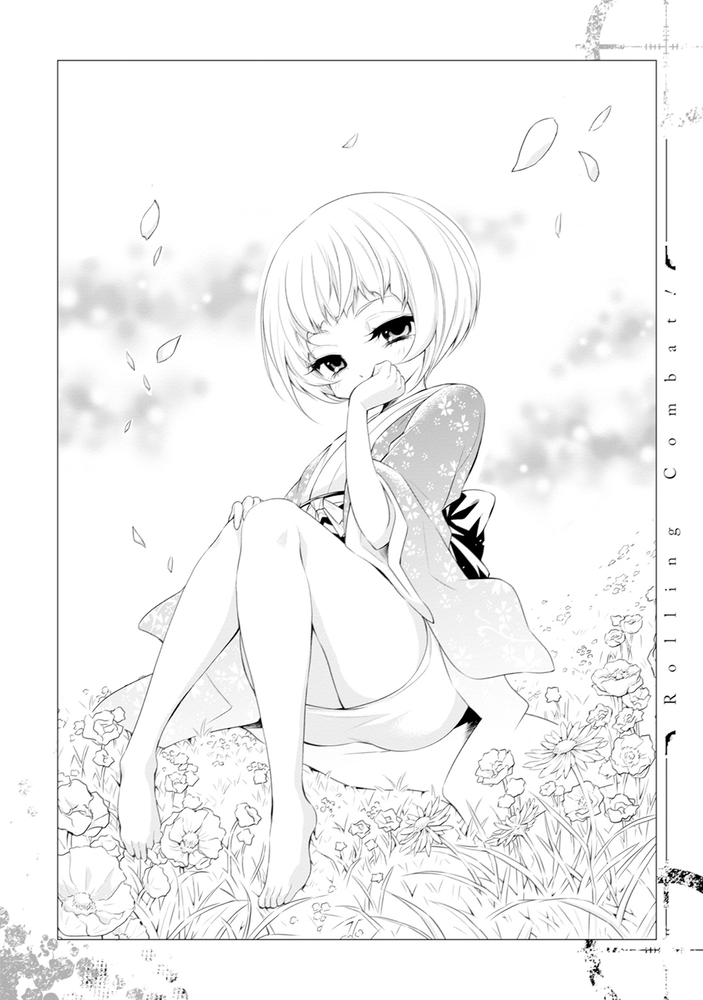
「つまり、君は並の魔法使いの、数十倍の魔力を保持している、ということになるのだが......」
なるほど。つまりわたしの戦闘能力は五十三万だ、と。
「おい、なぜ泣いている」
「......いや、妄想の幼女に都合のいい設定を言わせて、励まされてる自分ってどうなんだろうって思ったら、なんか急に目頭が」
「............まあ、そう思ってくれたほうが、わたしとしては都合のいい部分もあるのだが、わたしは君の妄想などではないと何度も言っているだろう」
うずくまる僕の背中をさすりながらげんなりとして言う。この構図もどうなんだ。
「じゃあ、何か証拠を見せてよ」
「ちょくちょく魔法に関するアドバイスをしているだろう」
睡眠中っていうのは情報を整理する時間だ。そして彼女が口にするアドバイスは、僕のわからないことの少しだけ先をいったような内容のものが多い。つまり整理された情報が、彼女のアドバイスという形で代弁されているだけだろう。
そんなことをロリ子に言うと、彼女は小さく舌打ちして、
「君、面倒くさいな。あんまり女の子にモテないだろう......おい、泣くなよ。悪かったよ、ごめんな、ごめん」
妄想の幼女に罵られるおっさんの背中を、再び幼女は優しくさすった。
「確かに、小さなアドバイスしかできないのは心苦しい限りだが、それはとある事情があってのことで、君の妄想だからというわけではない」
「その事情ってなんなのさ」
「それも言えない」
そこでロリ子は、どこか悲しげな表情を浮かべて、
「......わたしは他人の人生に、あまり深く干渉してはいけないんだ」
......うん。まあ、妄想ですからね。これ以上干渉されて、現実でも見え始めたら困るよ。
なんていうつっこみはもちろん表面に出さず、いつもどおりお茶を飲みながら雑談して、その日はお開きになった。
――彼女の発言の真意なんて、深く考えもせずに。
二か月が経って、最初から比べれば銃のカスタマイズが進むようになってきた。
コツがつかめてきたのか、魔力の操縦が上手になっているのか、たぶん両方だろう。相変わらずどえらい魔力は食うものの、ライフリングの施工を終え、発射と装弾をひとセットにする措置を施し、現在、弾倉に似たものを作ろうとしている。いや、役割としては同じかもしれないけど、内部構造は全然違うか。
弾丸のストックを考えて、最初はマガジンを作ろうと思ったんだけど、どうやっても無理だった。この体積の中でやりくりしろってことらしい。
だったら内部構造として同じようなものを作ろうとしたんだけど、これも無理だった。やっぱり薬室的な部分に入れる一個だけしか弾丸はとり置きできないみたい。
そこで考えたのが、魔力を自動的に弾丸に変えて、発射の直後に次々と薬室に送りこむシステムだ。いちいち意識しなくてすむよう、オートマチック化しちまおうというわけだ。
ちょっと都合がいいかな、なんて思ったけど、発射と装弾を連動させたら、うまい具合に機能してくれそうだった。もともと、魔力を溜める→装弾。発射→トリガーを引く。って具合に自動で変換されていたわけだから、その応用って考えれば納得がいく。
弾丸の形状も設定できた。基本的にはこの銃に適した形にしてあるけど、ホローポイント弾みたいにするのもいいかもしれない。魔力の銃弾化は、一部マニュアル設定にしておこう。
それが終わったら射撃形式の設定だな。単発、フルオート、三点バーストくらいあればいいかな。って、まんま僕の持っていた小銃だけど、主兵装は使い慣れたものに限る。それ以外にもやれるならやってみたいけどさ。
そんなこんなで、攻撃手段の確立は順調といっていいだろう。イコライザーの訓練時間は少し減っちゃったけど、そこは時間調整をしてうまいことやっている。
そして、例のＩＣＵにいる女の子のおっぱいはというと、今日も健康的にたゆんたゆんと水の中を漂って、僕のモチベの向上へと繫がっている。
すごいことに彼女の欠けた手足は、少しずつ生えてきているようだった。毎日舐めるように観察している僕が言うんだから間違いない。
やっぱりあのカプセルは、生命維持装置的な何かなんだと思う。傷が完全に回復したら、『アイルビーバック』とか言いながらサムズアップして出てくるに違いない。
彼女の名前はフランチェスカというらしい。手帳なんかを見ていたらわかった。
フランたんかあ。どんな子なんだろうなあ。早くお話ししたいなあ～。
まあ、彼女が目を覚ます前にトンズラこく予定なんですけどね。賃貸料とか払えないし。
そんですそんです、私がゲス野郎のおじさんです。
いやでもさあ、どーする？ 警察的なところに引き渡されちゃったら。身分を証明するものなにもないんだよ？ 髪が真っ赤で中二病の変なおじさんなんですよこっちは。ミランダ警告なしで即射殺でしょ、そんなヤツ。
......でも、確かに何かお礼はしたいな。この家に入れて、結果的に命拾いできたわけだし。
それもおいおい考えるとして、今はとにかく訓練だよね。
防御と立ち回りの足固め。攻撃方法の確立。
ここにいられる期間をフルに使って、なんとかその三つを形にしていこう。
朝、リビングのソファで目を覚ます。同時にシャンデリアの灯りがともる。この家では、人の気配を察知すると自動的に灯りを点灯する魔法でもかかっているのかもしれない。最初からそうだったから気づかなかったけど、だとしたらめちゃくちゃすごいことだ。
洗面所で顔を洗って口をゆすいでから、何もなくてだだっ広い部屋へと向かった。
円周に沿ってランニングをする。それが終わったら、端から端までのダッシュを何本か。最後に匍匐前進を第一～第五までやって、訓練室に向かう。
腕立て伏せ、腹筋、背筋を、自衛隊式のやりかたで各部三セットずつくらいやる。あと懸垂と、バーベル代わりの石を上げ下げして簡単なウェイトトレーニング。それが終わって、イコライザーを使いつつサンドバッグを叩いてるくらいで、いつもだいたい日が昇ってくる。そしたら浴室に向かう。
言う機会がなかったけど、ここのお風呂は温泉だ。源泉かけ流しの自噴温泉。岩の湯船は加工なんかはされてないけど、入るのに不自由はないし、むしろ自然な感じが大変よろしい。娯楽の少ない生活で、非常に大きなモチベの向上をもたらしてくれた。少し粉っぽいけど石鹼もあるので、身体も比較的きれいに保てていると思う。赤い髪は少しバサバサになっちゃったけどね。
......ええ、そんです。赤い髪です。理由は全然わからなかったけど、生え変わってくる髪も赤かったんです。このために貴重な異世界特典が使われているんだったら、笑えない。
それはともかく、お風呂に入ってさっぱりしたら朝食を作る。今日は野菜と干し肉を煮こんだスープだ。野菜のうまみと干し肉のダシがいい感じに絡まったそれに、保存のきく固いパンを浸して食べる。
★三つです！ とは言えないけど、この味になるまで苦労した。素朴な味が非常にいい。
だけど、そろそろ食材も心もとなくなってきた。ぼちぼち狩りに出ることも考えなきゃね。
なんてことを思いながら洗い物をして、一息つきがてら書斎の本を漁る。この世界の情勢とか地理なんかの本もあるからね。できる限り頭に入れておかないと。
それが終わった後にすることは特に決めてない。掃除をしたり、布団を干したり、洗濯をしたり、日があるうちにできることをする。この日は家庭菜園の手入れをすることにした。
家庭菜園は家庭って言葉の規模をはみ出すくらいデカい。もう菜園だ。なっている野菜や果物も多種多様。中でも芋や豆などが多い。筋トレ中なのでありがたい限りだ。身体も成長期だからね。心は成長期の女の子が好きなおじさんだけど。
ひととおり水を撒いたり雑草を抜いたりしてから訓練室に行く。それから昼過ぎまでは魔トレだ。イコライザーはけっこうものになってきた。任意の時間で出したり消したりできるようになった。部位によって出力を調節したりできるようにもなった。そろそろ実戦訓練も交えていきたい。
昼過ぎまでサンドバッグをぶっ叩いてから昼食を食べて、また書斎で一息ついてからは、魔力が切れるまでずーっと銃のカスタマイズ。これは日によってイコライザーの訓練と入れ替える。でも最近は銃のカスタマイズが多い。そろそろ完成しそうだからね。
単発、フルオートの設定はできた。バースト機能の設定を残すだけだ。あとは動作確認と微調整を繰り返せば、とりあえず実装できるレベルになると思う。
それで問題がなかったら、今度は上下二連式にしてみようと思うんだ。ショットガンとかであるやつ。小銃なら特にそうする必要はないんだけど、けっこう好き勝手カスタマイズできるってわかったから、ちょっと試してみたいことがあるんだ。
なんて思ってるうちに魔力が尽きた。ちょっと休憩を挟んで、訓練室とだだっ広い部屋でまた筋トレだ。そうしているうちに日が暮れてくる。
晩御飯を食べてお風呂に入ったら自由時間。だいたいはフランチェスカかその他ふたりの部屋で本を読んだりしてる。私室だけあって娯楽要素が強い本があったりするんだよね。あとはそれぞれのパンツがちゃんとかぶれるかどうか検証とかしてる。
眠くなってきたら念入りにストレッチをして、フランチェスカのおっぱいに祈りを捧げにいく。明日もまた無事このおっぱいを拝めますように、と。
ちなみに、彼女の傷の治りは順調だ。目処はさっぱりわからないけど、この分だったら完全に回復すると思う。早く良くなるといいね、フランたん。
ひととおり彼女を愛でて満足したらリビングに帰って寝て、たまに出てくるロリ子と話す。
精神状態は安定してきていると思うんだけど、どういうわけか彼女は一向に消える気配がないから、やっぱりどこかでストレスを感じているのかもしれない。とはいえ、なんだかんだ情報がまとめられるのはありがたいから、放置しちゃってるんだけどね。
そんな毎日の繰り返しだ。
毎日の訓練はけっこうしんどい。身体も常時どこか痛い。魔力は枯渇しても倦怠感はないけど、カスタマイズに神経を使うのでひたすら疲れる。その割に娯楽は少ない。二次ロリ画像もない。
だけど、嫌じゃない。むしろ毎日が楽しい。
やったらやった分だけ結果っていうレスポンスがついてきて、それを着実に積み上げていけているのが、目に見えてわかるからだと思う。ちゃんと毎日に連続性が見いだせる。社会人になってから少なくなった感覚だ。
娯楽も少ない分、少ない何かを全力で楽しむことができる。
僕は生粋のロリコンだ。十五歳以上に興味はない。だけどフランチェスカだけは別だ。あの子は神だ。女子分が足りないこの生活に、光明を差し入れてくれた現人神様だ。いやらしい眼で見ないわけにはいかない。
最後に変なのが混じった気がしたけど、充実した生活。何かに没頭して生きるっていうのは、こういうことを言うんだろうな。こんな生活も悪くない。前にいた世界で、どれだけいろんなものに目が移ってたかわかった気がしたよ。
なんて思いながら、中身の詰まった毎日を積みあげていく。
そんな生活がさらに半年くらい続いた、ある日。
事態が動いた。
『パンティライン！ パンティィィィライン!!』
『淫語責めぇえ!!』
『上は着ぅぅぅぅ衣！ 下は全裸ぁぁあ!!』
前方にいる骸骨騎士の数は三体。左手側からも元気のいい性癖の発表が聞こえる。たぶんすぐに前方と合流するだろう。
「イコライザー」
詠唱して軸足に力をこめる。先頭でグラディウスを振り上げる骸骨との距離は五メートル前後。踏み出した一歩で、いっきにそれを消失させる。
『パンティ......』
言わせない。その前に掌底で下顎を突き上げる。首から上はあっさり胴体から離れて、昼下がりの森に打ちあげられた。胴体のほうには前蹴りを食らわせて、後ろにいた淫語責め骸骨にぶつけた。大きく体勢を崩した彼の顔面に、突進の勢いが乗った拳打をぶつける。拳はこれもまたあっさり頭蓋骨を突き抜け、倒れかけていた身体を完全に崩した。
唯一攻撃のモーションに入ったのは上は着衣下は全裸骸骨。彼は大きくグラディウスを振り上げていたけれど、ちょっと遅いし、盾で身体がガードしきれていない。剣が振り下ろされる前に懐に飛びこむ。振り上げていた手を左手で、胸倉を右手でつかんだ。それと一緒に足を蹴りだす。胸倉を強く押しながら、蹴り返すみたいにふくらはぎを刈った。骸骨は勢いよく背中から転倒。変則大外刈りで一本だ。動き出す前に頭を踏みつぶして、左を見た。
すると案の定、十体くらいの新手がやってくるところだった。その距離十メートル前後。さっき頭を潰した骸骨の剣を拾い、おもくそ力を込めて団体さんに投擲した。
先頭にいたヤツは直撃を食らって頭が砕けた。その後ろのヤツも転倒。もう一体の剣に向かって手を伸ばそうとしたとき、骸骨も何かを投げてくるのが見えた気がした。
「......あ」
気がついたら、ほぼ目の前に投擲されたグラディウスが追っていた。
あーあ。とうとうマネされたか。なんかを投げつける攻撃ってよくやってたからなあ。
なんて思いながら、頭にグラディウスの直撃を食らう。えらいもんで、切っ先はちゃんと僕のほうを向いていた。投げた骸骨が勝鬨っぽい声をあげたけど、すぐに凍りついた。
たぶん、僕が無傷で、何事もなかったみたいにグラディウスを投げ返したからだと思う。
真っ直ぐに飛んでいったグラディウスは骸骨の顔面を砕いた。残り八体。
まあ、今日は体術の実戦訓練で出てきたわけじゃないし、いいか。
「コンバート」
呟くのと一緒に左腕がぐにゃりと歪んで、すっかり見慣れた金色の銃に姿を変えた。頭の中で威力を設定してから足を肩幅に開き、銃口を骸骨の一団に向ける。
「フルオート」
矢継ぎ早に放たれる弾丸は、魔力の燐光をまき散らしながら骸骨たちを丸吞みにする。彼らは吹き飛び、もんどりうち、回転し、あるいは変なダンスを踊って、次々に砕け散っていった。周囲の木々とドロップアイテムは破損しないように気をつける。
そんですそんです、私がエコとエロに重きを置くおじさんです。
なんて思っているうちに、骸骨たちの殲滅がすんだ。すぐに戦局哨戒。新手はなさそうだ。
この日の戦利品は、銀貨や銅貨の入った革袋×人数分。剣はかさばるから状態のいいものだけもらう。獣の肉を捌くのに重宝なんだよね。
それから、
「やった。魔力結晶だ」
骸骨の胸あたりから飛び出てきた、葉っぱみたいな形のそれを拾う。
モンスターがたまにドロップするアイテム、魔力結晶。最初見た時は何かと思ったけど、本で見てわかった。なんでも、ジャンルごとの魔力を一定量蓄えておけたり、摂取することで自分の魔力の絶対値を上げたりできるんだとか。魔力版の電池、ないしは外付けバッテリーみたいなものだって勝手に解釈している。
ジャンルごとに形も違う。今日拾ったのは亜空間系の魔力結晶だ。身体系は牛の角みたいな形で、空間系は針葉っぽい形をしている。今のところ魔力の総量には不便してないし、売ればけっこうなお金になるみたいだから、拾ったやつは全部ストックしている。
たいした量じゃないけれど、明日からの生活に役立つだろうって思う。
「ごっつぁんでした」
たくさんのドロップアイテムと、エンカウントの前に狩っておいた鳥を手に、僕はフランチェスカの待つ家へと帰っていった。
「ただいま、フランたん！ 今日もおじさんいっぱい頑張ってきたよ！」
妄想幼女としか会話できない日々。そんな数か月ですっかり追いつめられた僕は、物言わぬ少女と会話をする妄想にも浸るようになっていた......わけではなく、食後とかの習慣として彼女に話しかけるようになっていた。娯楽の延長みたいなものだ。大目に見てほしい。
実際にしんどい時期もあった。半年以上も話すことがない生活なんて、当たり前だけど初めての経験だ。妄想会話でなんとか騙せていたものの、誰も話し相手がいないのはやっぱりしんどい。生涯で一番孤独な時期に直面して、何回も心が折れそうになった。
そんな時に僕を救ってくれたのは、やっぱりフランチェスカだった。今日あった出来事を、誰かに話す。一方通行でも、レスポンスがなくても、それだけで人の精神はある程度健常に保たれていくものなんだって知った。
彼女には本当に助けられてばっかりだ。命の恩人だ。現人神様だ。彼女自身は何もしてないかもしれないけど、神様っていうのはそういうものだ。何かをしてもらうんじゃなくて、何かをする気になるのかが大事なんだ。みんな集え、フランチェスカ教の加護の元へ！
......なんて、彼女を前にしてバカな妄想をできるのも、今日が最後なんだよなあ。
改めて彼女を観察する。腕も足ももうすっかり元どおりになっていた。爪がまだちゃんと生え揃っていないくらいだから、たぶん近日中には完治すると思う。完治したらすぐに起きるのかどうかわからないけど、いつかはきっと起きる。どの道このへんが潮時なのだ。
やっぱりというかなんというか、この世界にはダンジョンとかフィールドというものがあって、そこに潜ることで生計を立てるという稼業が存在した。そんです、冒険者です。
本で読んだところによると、冒険者になるには冒険者ギルドに登録する必要があるけど、その時には必要最低限の経歴しか問われないらしい。命を商売道具にする仕事だからね、やっぱりヤクザな経歴の人も多いみたい。本当に犯罪者はダメみたいだけど。
冒険者ギルドのある街で一番近いのは、ここから西に一週間くらい歩いたところにあるサックっていう街らしい。イコライザーを使えばもうちょっと早くつけるだろう。
とりあえずはそこを目指して、明朝にここを発とうと思う。
やっぱりフランチェスカが目覚めるまで待ってようかな、なんてチラチラ思っていたのだけど、やめた。あの子は神なので性格もウルトラスーパーいいに決まっているけど、やっぱり半年以上も家を無断で使っていたヤツにいい顔なんてできないだろうからね。犯罪者って経歴がつけば冒険者もできなくなっちゃうし。
ただ、さすがに何も残さずに出ていくわけにはいかないので、例のパピルス紙で手紙をしたためた。やむを得ず滞在させてもらったこと、食べた分くらいの保存食は補塡してあること、いつか必ず恩を返しに来ること。いろいろ書いた、おっぱいを見ながらひとりでできることは全部やっちゃったことは書かなかったけれど、最後に僕の名前を書いた。
ウィル・ブラウン。この世界での僕の名前だ。半年以上もロリ子にそう呼ばれていたので、さすがに自分で違和感を覚えることもなくなった。
泥棒が名前を残す。もうコントだ。そんな後顧の憂いは残したくないし、そもそも偽名だって思われるだろうけど、現段階で僕が示せる誠意はそう多くない。名前を出すことで少しでもそれが伝われば幸いだ。
「指名手配とかしないでね？ しないよね。フランたんはそんな子じゃないもんねー」
仮にされても証拠とか残してないし、同姓同名って言い張れば......なんて利己的な考えが混入したところで首を振る。やめよう。今日はフランチェスカとの最後の夜なんだ。雑念は捨てて、いつもどおりに彼女と過ごそう。
無念無想で、いつもどおりに彼女の裸を見ながらひとりでできることをしよう。
ひとりでできるもん、なんて思いながらズボンをごそごそして、気がついた。
彼女は笑っていた。
意識が戻っているわけじゃない。きっと楽しい夢でも見ているんだ。今までも何度かあった。小さな口の端を可愛らしくつり上げて、長いまつげが印象的な目元を緩めつつ、まるで小さい子供みたいに、彼女は幸せそうに笑っていた。
「............」
僕は軽く自分の頰を叩いてからズボンを穿き直して、膝をついた。そのまま頭を地面にこすりつける。
「お世話になりました」
エロい意味でじゃないよ。
その日は屋上に登って、月を肴にお酒を吞んだ。こっそり作っておいた蜂蜜酒だ。タバコもちょっと吸った。両方ともこっちの世界に来てからやめていたけど、次にいつありつけるかわからないからね。
この世界の月はすごい。星っていうよりは、無色透明な石英でできた球体って感じ。荒削りなまん丸のクリスタルが、そのまま空の上で光ってる。最初見た時はそんなふうに思った。
その名もずばり『水晶の月』。本によると、世界最難関のダンジョンでもあるんだって。踏破した人は誰もいなくて、判明している階層の数だけでも五百を超えるらしい。上級者向けのダンジョンでも多くて七十階層くらいだってことを考えると、相当のムリゲー仕様だってことがわかる。もう大人しくお月見しとけよって思う。
月の中のダンジョンかあ......酸素とか圧力とかどうなってんの？ とか聞くのは、やっぱり野暮なんだろうな。うさぎさんたちが頑張ってなんとかしてるんだろう、きっと。
ちなみに『クリスタ』っていうのは『クラスター』がなまってそうなったらしい。良かった。クリスタル・クラスターじゃあ言葉の響きがシャープすぎる。
と、月だの掃除機だののことより、現実的なことを考えないと。
防御と立ち回り、攻撃手段の確立。当初の目的は概ね達成できたと思う。どころか、防御を固めるための手段として考えていたイコライザーだけでも、骸骨たちとなら対等に渡り合えるようにまでなった。骸骨のレベルがどれくらいかなんて知らないけど、嬉しい誤算だ。
......というか、こうなってくるともう、僕の異世界特典は幼女レベルじゃ収まりきらないような気がするんだけど、やっぱり油断は禁物だ。手ごたえを感じていないわけではないけど、経験っていう物差しがない状態で自信を持つのは危険すぎる。
とは思うんだけど、どういうわけかロリ子はダンジョンに潜ったほうがいいとか言ってくるんだよね。『君のレベルだと血祭りか綺麗好きというダンジョンマスターが支配しているダンジョンがお勧めだ、特別に攻略のコツを教えてやる』なんて。もちろん断ったけど、深層心理たる彼女がそう言っているってことは、どこか調子に乗っているのかもしれない。そんなつもりはないんだけどな。戦い方が画一的だって自覚はあるし、ＤＴだし。
それにイコライザーを使った状態では、剣とかの武器を使った戦闘がしにくいんだ。
イコライザーは持っているものの強度を上げることができる。だけど、剣なんかの切れ味を上げることはできないし、摩耗の度合いも半端ない。
魔力を切れ味の向上にもちゃんと反映させてくれるものもあるみたいだけど、それは聖剣とか魔剣って呼ばれている類のやつで、特別な打ち方とか加工をしているらしい。
だから僕はコンバートの訓練を一層入念に始める、のと一緒に、徒手空拳をメインにした格闘術にも重きを置いた。
この世界の銃はマッチロック式が主流だ。乱暴に言えば、発射する直前に火縄に火をつけて、引き金を引くことでバネ仕掛けを作動させるっていうタイプのやつ。それによって発射薬に火が点いて、弾を撃ち出すっていう仕組みだ。つまり、発射の前に火薬を火皿に盛りつけたり、火縄に火を点けたりとかの準備をしなくちゃいけないし、引き金を引いてから弾が出るまで時間差がある。もっと言えば、一発撃つごとに弾と火薬を銃口から入れ直さなくちゃいけない。
だけど我が左手に宿りし銃は、それから五百年くらい先のトレンドを先どりした機構を備えているナウでヤングなやつだ。人間を撃ったことはないから威力にいまいち自信が持てないけど、それを差っ引いたって十分にオーバーテクノロジーな産物だろう。
そんなものが有名になったら、きっと僕は、ＤＴを卒業できるだろう。
じゃなくて、引くほど危険人物に思われちゃうだろう。
どこかに技術を提供して保護してもらうのもいいかもしれないけど、そういう取引はこの世界での生活基盤がしっかりしてからだ。それまでの間、コンバートはあくまで虎の子としてとっておいて、サブ的な攻撃手段である程度はやりくりする必要がある。
そんなわけで最初はグラディウスを振り回してみたんだけど、イコライザーを使った状態だと、これがもう壊れやすいこと。下手すれば一撃で大破。出力を調節して使うこともできたけど、それだと自分の攻撃力や防御力も下がる。さっきみたいに、投げつけるくらいの用途に落ち着いてしまった。
だからしかたなく、前の世界で得た格闘術を基本にして戦うことにしたんだけど、これは意外と調子が良かった。当たり前だけど、骸骨たちは剣での格闘を前提にしているからね。素手で殴られたり蹴られたり、投げられたり極められたりの攻撃は苦手みたい。たぶんだけどそれは、この世界の武器使いに共通する弱点だと思う。
ま、だからなんだって話なんですけどね。
武器を持っている人と、武器を持っていない人では、前者のほうが単純に強い。実力が拮抗していれば、って前提はつくけれど、剣道三倍段なんて言葉もあるくらいだ。相当に実力が上でなければ、武器を持つ人に持たない人が勝つのは難しい。
僕はイコライザーで地力を底上げして、ハンデを無理やり穴埋めしているだけだ。同じくらいの力を持った武器の使い手と戦ったら、きっとすぐにぺしゃんこにされるだろう。
とはいえ、コンバート以外で有効な攻撃手段はない。だから対人用の格闘技術を対モンスター用にコツコツと作り替えて使っているうちに、いつの間にか主力になってしまった。
苦肉の策とはいえ、小隊規模くらいの骸骨なら苦もなく制圧できるようになったから、これはこれでありだと思っている。そのレベル帯のモンスターならなんとかなるってことだからね。
「......ただなあ」
スライムみたいにうじゃうじゃいて、ドロップアイテムを持っていない個体がちょいちょいいる。それが骸骨。そんなレベル帯のモンスターをイジメることができるからって、本当に食いつなぐことが......。
いや、いやいや。くじけるな僕バカ野郎！ この半年間僕がやってきたことはなんだ。少ない力で大きな利益を生むための訓練じゃないのか。それが順調にうまくいっているって考えるんだ。本来なら幼女レベルとして終わっていた僕の魔力が、創意と工夫によって女子高生レベルくらいのものにはなれた。そう考え......。
......レベルが下がった......だと？
冗談はともかく、とりあえず僕の戦闘能力は、骸骨より少し上、ってくらいに認識しといたほうがいいかな。依然として空間系と亜空間系は上手に使えないし、身体系でも回復に関する魔法は使い方がいまいちわからないしね。
本当はそのあたり、特に回復魔法は使えるようになってから発ちたかったんだけど、そうも言っていられない。生活が安定したらお師匠さんを見つけて習ってみるのもいいかもしれないな。
なんて考えているうちに眠くなってきた。明日も早いからそろそろ寝よう。
考えるべき不安要素はまだまだたくさんあるけど、考えすぎて身動きがとれなくなるんじゃ意味がない。とにかく明日から本格的な「異世界の旅～冒険者編～」がスタートすることを念頭に置いて、今日はもう寝る。明日から兜の緒を締め直して頑張ろう。
ひとりでできることをしてから。
翌朝。麻でできたシャツとズボンの上に、骸骨からパクった鎧をつけただけ。そんな簡素な服装の僕は、洞窟の外にまろび出た。洞窟に向けて一礼。縫い直したバックパックを背負い直して、あらかじめ下見をしておいた道を歩きだす。
ちなみにこの服は、フランチェスカのクローゼットから拝借したものだ。迷彩服じゃさすがに浮くだろうし、着る物だけは自力で作れなかったから、しかたなくパクってしまった。御神体だと思って大事にしよう。じゃなくて、いずれ新しいのを買って返しにこよう。
森は徒歩で二日くらい、イコライザーを使えば半日くらいで抜けられることは検証ずみだ。その後に平原や林がしばらく続いて、そこを抜ければ整備された広い道があることもわかっている。とりあえず今日は、無理をせずに森を抜ける所くらいまで行こうと思う。イコライザーを使うのも、もう少し身体が温まってきてからでいいだろう。
草木や湿った土の臭い、木洩れ日が地面に作るコントラストを楽しみながら歩く。適度に湿気を孕んだ風も気持ちいい。
半年前は薄暗くて不気味な所でしかなかったんだけどなあ。ハイキング感覚で風情を楽しめるようになるなんて、僕も成長したもんだ。幼女をエスコートだってできちゃうよ。
なんて益体のないことを考えながら歩いているうちに、
「......ホンットにスパルトイとエンカウントしねえのな」
遠くから、馬の歩くみたいな音といっしょに、そんな声が聞こえてきた。
「だから言ったでしょ。どんだけ下見したと思ってんすか」
......人。
人だ！ 間違いない、人の声がする！
木に彫っておいた目印の方角とは違ったけれど、半分くらい反射的に声のしたほうに向けて走りだしていた。人だ、人と話ができる！ 一方通行じゃない、妄想でもない会話が！
高揚感に背中を押されるみたいに走った。程なくして人影が見える。大声で手を振りたくなる衝動を必死で抑えた。まずはどんな人たちかを確認して、それから......。
「あのフランチェスカ＝バートリのアジトかあ。どんだけのもん溜めこんでんすかね？」
ワクワク感がいっきに凍りついて、とっさに木陰に身を隠し、彼らを観察する。
数は全部で二十人くらい。全員が何かしらの武器を持っていて、皆一様に下卑た笑いを浮かべている。山賊とか盗賊って言葉がしっくりくる出で立ちの男たちが、馬に乗って森の中を闊歩していた。
「さあなあ。装備品のマジックアイテム売っぱらうだけでも相当いくんじゃねえの？ アジトの鍵代わりのこの宝玉だって、鑑定でけっこういったんだろ？」
「それよか、フランチェスカだけは瀕死の重傷で生き残ってるっていうあの噂、あれマジっすかね!? マジだったら、殺る前にヤっちゃってもいいっすよね!?」
そこのゲス野郎......気が合いそうじゃないか。
なんてつっこんでいる余裕が僕にはない。心臓が早鐘みたいにバクバクいっていた。
フランチェスカの冒険者ユニットが全滅。アジトは空。どこかからその情報を得た盗賊か何かの一味が、その機を狙って空き巣に入ろうとしている。わかりやすい。実にテンプレ的な悪党の発想と行動だ。
しかも会話の内容から察するに、彼らは鍵になっているネックレスを持っている。どこで手に入れたのかは知らないけど、そうなっちゃえばあの家のセキュリティはザルだ。すぐにフランチェスカが寝ている部屋まで辿り着くだろう。
そこまでわかったうえで、僕のとるべき行動はなんだ？
決まっている。このままここで盗賊の一味をやり過ごして、逃げるんだ。交戦なんて無理だ。武装した二十人になんて勝てっこない。コンバートを最大出力で撃てばあるいは、なんて思わない。僕程度の使い手でも、イコライザーを使えばあんなにカッチカチになれるんだ。他の人はもっと上手に使えるって思ったほうがいい。仮に勝てたとしても、悪いことをする連中はこいつらだけじゃないんだ。継続的に守り続けるなんて無理だ。
......なんて思えたら、どんだけ楽なんだろうなあ。
本人に自覚がないとはいえ、フランチェスカは命の恩人だ。神だ。見捨てることなんてできない。なんとかして助けてあげたい。助けなくちゃいけない。
だけど現実問題、勝算は薄い。というか、ない。やってみなきゃわからない、なんて生ぬるいこと思わないほうがいい。失敗したら死んじゃうんだ。それじゃあ意味がない。
どうする、どうする、どうする。
恩義を感じているとか、命を助けてもらったとか、そんなのは結局感情論だ。命を賭けるほどのものなんだろうか？
賭けるほどのものだ。損得勘定も大事だけど、人はそれ以外のことで動かなくちゃいけない時がある。今がそうだ。誠意を示す絶好のチャンスじゃないか。
だから、それで死んだら意味がないんだって。せっかく助けてもらった命を無駄死にで失うのは、それこそ彼女に対する裏切りになるんじゃないだろうか。無謀と勇気は違う。だったら僕だけでも生き残って、ことの顚末を然るべき機関に通報したほうがいい。
提案と棄却の応酬がすごい速さで頭の中を巡る。ねっとりした汗がいっぱい出た。その間にも、盗賊たちはアジトに向かって馬を進めている。
「.........！」
深く、大きく、息を吸う。たっぷり時間をかけて吐き出してから、
僕はその場から逃げ出した。
盗賊視点。
無味乾燥な森の中を騎馬にて進んでいく。地図の縮尺を信じるのであれば、目的地まで残り数分で到着するだろう。
フランチェスカ＝バートリ率いる『キャラメルストローク』。業界内では相当の知名度を誇る冒険者ユニットだ。
故に、彼女らがダンジョン攻略中に全滅したという話も、各都市の冒険者ギルドや専門誌などの情報媒体を介して瞬く間に伝播されていった。
そのアジトで鍵として使用されているというマジックアイテムが手に入ったのが、最初の幸運だった。とある冒険者がどこかのダンジョンで拾得したらしいのだが、詳しいことは知らない。その冒険者は殺してしまったから。
次の幸運は、アジトの深山を守るようにして分布しているスパルトイの個体数が激減したこと。何度か斥候を出したのだが、原因は杳として知れず。急所である頭部を破壊された死骸が大量に発見されたことから、人為的なものであるという傍証にしか至れなかった。もう少し時間をかけて観察すれば、あるいはそれをなした集団との邂逅が叶ったかもしれないが、他のスパルトイに襲撃を受けることも考えられたため、森に長居はできなかった。
また、フランチェスカのみは重傷ながらも生き残っているという噂もある。他の盗賊団に先を越されないという保証もない。決起までの時間は有限だった。
幾度目かの斥候が無事帰還したその日、一同はサックの街を発った。それから馬上で揺られること四日ほど。たいしたイレギュラーもなく現在地まで到達することができた。
順風がかえってそら恐ろしい、とは思わない。こういった職業だ。万全を期しても不備が発生することもあるし、その逆もまた然り。今回は後者の恩恵にあずかれたと考えるべきだろう。
とはいえ、危険要素が払拭できていないことも確かだ。これだけ大量のスパルトイを撃退できる危険集団。そういうやつらがこの森の中をうろついているという可能性は未だ残留している。サックの街にある根城に戻るまで気を抜くことはできない。
そう、だから、決して、油断などしていなかったのだ。
――パキョ。
小気味の良い破裂音が一同の耳朶を揺らし、先行していた三騎の合図で進軍が停止する。
「......なに、今の音？」
「誰かなんか踏んだか？」
「かも知んねえけど、斥候、ちょっと前の様子見てきて。前衛ちょい広がって」
動揺しながらも事態を把握すべく指示が飛ぶなか、三騎いる斥候のうち一騎は、確かに見ていた。
斜め前方より飛来した光の玉のようなものが、一団の上方にそびえる木の枝に当たり、それをへし折る様子を。
その事実をどのような言葉で一同に伝えるか考えているうちに、再び同じ画が繰り返される。今度は先ほどよりさらに下。それから二秒とおかず、さらに下の枝も爆ぜる。
「敵、襲？」
そう判断してそう呟くが。が、その頃にはすでに、
ガガガガガガガガ！
木が、地面が、茂みが。高速で飛来する光の粒に貫かれて、穿たれ、爆ぜ、抉れ、すさまじい速さで質量を削り取られていった。
「うおおお!?」
「下がれバカ！ 当たったらヤベエぞ、これ！」
「バカはテメエだろっ！ 陣形崩してんじゃねえよ！」
一団は大混乱の様相を呈し、危険を察知した馬の嘶きがそれを塗擦する。そんなことにかまうべくもなく、光の来襲はその後も数秒にわたって続くが、突如としてピタリとやんだ。
さらにそれから数秒。馬が大人しくなるのを見計らうように飛んできたのは、
「今のは警告さげきっ」
それからさらに数秒置いて、
「今のは警告射撃だ。ただちに武装を解除し、速やかにこの場から立ち去れ。君たちは完全に包囲されている。それ以上こちらの領域に踏み入ってくるのであれば、戦闘の意思があるものとみなし、制圧射撃を開始する」
ウィル視点。
......やっちまった。やっちまったよぅ。
じわじわと押し寄せてくる苦い感覚を押さえつけて、僕は狙撃ポイントにしていた木から飛び降りた。次に当たりをつけていた木まで匍匐で移動し、最小限の動きでよじ登る。うん、大丈夫、この木からでも盗賊団の様子が見える。
彼らは一様に動揺しながらも、罵倒とも威嚇ともつかないようながなり声を上げて、僕の居場所を探していた。うん、超怖い。
......やっぱり逃げとけばよかったなあ。途中から気づいてたけど、銃みたいなのを持ってる人もふたりくらいいるじゃん。性能はわからないけど、未知数の武器を相手にするの超怖えよ。これで魔法とか使われちゃった日には......。
......やめよう。そこから後悔するのは。もう決めたことなんだ。
やれそうならやれるとこまでやるし、やれそうになかったら途中で逃げる。かっこいいこともかっこわるいこともさんざん考えたけど、結局どちらともつかないところに落ち着いて、僕はここに残ることにした。それ以上のことは考えるのをやめた。考えすぎて動けなくなるんじゃ意味がない。だったらその分を成功率が上がるための思考に回して、フランチェスカを守るんだって気持ちを強く持ったほうがいい。
なんてちょっとかっこいいふうに締めたけど、依然として足はガクガクしている。一応、対人戦に備えて考えておいた戦法のとおりにはできているけど、どこまで通用しているかはわからない。ビビってくれてはいるみたいだけど......このまま帰ってくんないかな。
「待ってくれ。誰かは知らねえが、こっちだってあんたらとケンカしたいわけじゃない。取引できる材料がある。とりあえず話を聞いてくれないか？」
なんて都合よくいくわけないよね。頭目っぽい隻眼のおじさんが何か言っている。答えられるわけないじゃん。居場所がばれちゃうよ。ああ、それも狙いか。
「俺たちはフランチェスカのアジトを漁るために来た。アジトの鍵になってる宝玉も持ってる。条件次第じゃ、あんたらと手を組んでもいい」
簡潔でわかりやすいもの言いだけど、開けっぴろげというか浅はかというか......僕がフランチェスカ側の人間だって可能性は考えないのかな？
あ、考えないか。だとしたら警告する必要なんてないもんね。こんないいポジションどりができたら、問答無用で掃討攻撃を始めるか。
自分たちと同じく空き巣に来たけど、アジトへの入り方がわからなくてくすぶってる盗賊か何か。そんなふうに思われているんだろうな。
さてどうしよう。本当に戦闘が始まったら困るのは僕だ。この大人数に勝てるわけがない。なんとか交渉だけでこの場を収めて、帰ってくれるように説得しないと。
当たり前だけど、交渉材料になりそうなものなんて僕は持っていない。あるのは射撃っていう武力交渉の手段だけ。他の人にだったら知らないけど、幸い彼らにはけっこう効くみたいだから、それをチラつかせて手を引くように促すしかない。
......改めてだけど、よくもそんなしょうもない役でアガる気になったな、僕。
なんて頭の正常な部分が言ってくるけど、かぶりを振って異常な状態に戻した。大丈夫だ、しょうもなくなんてない。半年以上も頑張ってきたじゃないか。こんなテンプレ的な野盗みたいなヤツらになんて引けをとらないくらいの力はついているはずだ。
「......人んちの庭で、バカみたいにでかい声出してくれちゃってさぁ」
凜としたきれいな女子の声が言う。そうだ。こんなバカみたいな野盗になんて負けな......。
......って、あれ。今の声、誰が出した？
少し顔を出して盗賊を見る。中に女子は見当たらない。彼らは本当にバカみたいな顔になって、ある一点を凝然と見ていた。僕もそっちを見てみると、彼らと同じ顔になった。
そこにいたのは、この半年間で舐めるように観察した神々しいおっぱい。
じゃなくて、胸元のざっくり開いたドレスをばっちり着こなした超絶美少女、フランチェスカ。
僕の心の支え、僕の神が、そこには降臨なされていた。
あなたが神か！ なんて言いながら彼女に飛びつこうと思ったけど、その前に彼女は可憐なるお御足を肩幅に開き、紅玉なる御手を盗賊たちに向けて差し伸べると、
「近所迷惑なのよ、このファック野郎どもがっ!!」
.........あれ？
決して神が口にすることのない罵詈が聞こえた気がしたけれど、それはさておき。
「うお、うおおおお!!」
「ぐぅああああ!!」
とんでもない颶風にでも晒されたみたいに、盗賊たちが次々に吹き飛んでいった。馬ごと。漏れなく。それはもう、すさまじい勢いで。
「親玉は誰？ このフランチェスカ様のアジトに押し入ろうなんて考えたおバカは!?」
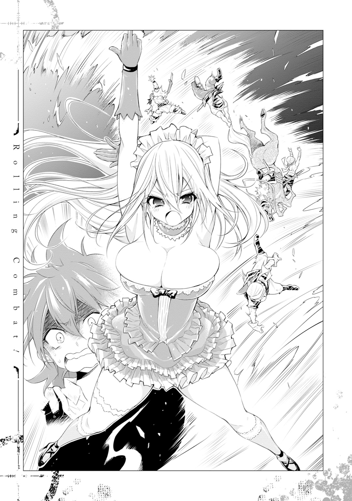
あるいは木にぶつかり、地面を転げ、馬の下敷きになる盗賊たちの間を縫って、フランチェスカはヤンキーみたいな首の角度で闊歩していった。やがてさっきの隻眼のおじさんの前まで（馬の下敷きになるの刑）来ると、中指をビッと立てた。
するとおじさんの身体は馬ごと持ちあがって、逆さ吊りにされる。すごい。これも魔法なんだろうけど、こんなこともできるんだ。
「あんた頭目ね、さっきなんかデカい声で言ってたもんね」
「すいません、すいません！ 命だけは勘弁してください！」
「うるっせえわね。デカい声出すなっつってんでしょ。このまま脳天かち割られたくなけりゃ、とっとと出すもん出しなさい。ホラ、他の連中も!!」
............。
「そこの禿げ散らかしてるあんた、武器だけじゃなくて鞘ごと置くのよ。中にお金仕込んでるの知ってんだからね。靴の中のも全部出すのよ。はい、終わったらジャンプ」
............。
「って、それ、フランちゃんちの鍵じゃない!? どこで手に入れたのよ!?」
「く、詳しいことはわからないんです！ 何人もの冒険者とかゴロツキの手を渡ってたみたいで、それで、最終的に俺たちのところに流れてきただけでっ。ほ、本当です！」
「............とっとと返しなさい。さもないと、残りの毛穴を宝玉のサイズまで広げるわよ」
............。
「帰ったら、フランちゃんが復活したって噂を広めておきなさい。広まってなかったらどうなるかわかってんでしょうね。絶対探し出して、今度はケツの毛までむしるから」
なんだ、夢か。
なんて思いたいのはやまやまだったけれど、すごい速さで逃げ帰っていく盗賊たちの哀愁漂う後ろ姿が、そうであるという可能性を粉々に踏みにじっていた。
「で、そこのあんたはなんなのよ？」
僕の登っている木の下までやってきた彼女は、そんなことを言ってきた。
「黙れ邪神が！」
「はあァ!?」
まずい。心の声が出てしまった。
「僕は盗賊ではありません」
「別の盗賊の一味とかでしょ、どーせ」
「違います」
「だったら、そんなとこで何してんのよ？」
動くたびに揺れるおっぱいを見て興奮しています、とは言えず口ごもった。確かに用もなしにいる所じゃない。
だけど、僕が盗賊なんかじゃないって、一発で信じてもらう手段はある。
「......ひょっとしてあんた、ウィル・ブラウン？」
「............」
びくりとしてしまう。自分で言うより先に言われるとは思ってなかった。置き手紙を読んでくれたんだろう。
確かにこの質問にうんと言ってしまえば、少なくとも盗賊疑惑は晴れるわけだけど、それはつまり半年以上も貴女の全裸でソロプレイをしていたものですって、認めてしまうことにもなる。強盗未遂と、住居不法侵入及び窃盗及び視姦......どっちで裁かれるか選べるんだったら、前者のほうがいいんじゃなかろうか。
「......それ」
本気でそんなことを考えているうちに、フランチェスカの細い指が僕を指差した。
「フランちゃんの服よね？」
「............」
僕は無言で木から降りると、フランチェスカに向けて頭を下げた。
「ウィル・ブラウンです。ごめんなさい」
それから小一時間くらいしたころには、
「............」
「............」
僕はすっかり使い慣れた竈のキッチンで料理を作り、その様子をフランチェスカが無言で凝視するという構図ができあがっていた。
......どうしてこうなった。
あの後、フランチェスカは特に何も言わずに僕をウィル・ブラウンとして受け入れると、盗賊たちの残していったお金や武器の回収を手伝わせ、なんと家の中まで引っ張ってきたのだ。そして当たり前みたいにご飯を作るように命じて、リビングのテーブルから僕のことをジーッと眺めていた。
なにこれ、どういう状況？ 何を見られてるの僕は？ これからお前を料理するぞって暗に言われてるの？
しかし......こんな状況でなんだけど、本当に可愛いな、この子。
濃緑の大きな瞳。透きとおるような白い肌。艶のある小さな唇。そのうちどれかひとつでもあれば、その人にとって自慢の部位になるパーツが、卵形の輪郭の中に丸々入っている。金糸みたいに色艶豊かな金髪も、白皙を際立たせるのに一役買っていた。わかるかな、テレビで見る美人のモデルさんなんかが、目の前にいるみたいなこの感じ。オーラが超すごいよ。
ま、彼女の神性はなくなっちゃったから、僕からしたらもはやＢＢＡなんだけどね。
「ねえ」
いきなり声をかけられた。肩がビクりと跳ねあがる。
「ウソです！」
「ウソですってなによ」
危ない危ない。心を読まれたわけじゃなさそうだ。
「どこの部屋もピカピカだったけど、掃除したのって、あんたなのよね？」
「はい、勝手にしちゃってすいません」
「菜園の手入れもしてくれてたのよね？」
「......はい」
「フランちゃんの服を洗って、縫い直してくれたのも？」
「はい、僕です」
「ふうん」
なんだよそのリアクション。怖いよ。
「あんた、歳いくつ？」
「十三歳です」
外見はそれくらいだ。中身は十三歳くらいの女子が好きな二十代半ばのおっさんだけど。
「......ふうん」
また出た。だけど今度はちょっと喜んでいるような気がする。ツボがよくわからない。
「それと、敬語は使わなくていいわ。そんなのは時間の無駄よ。あとフランちゃんのこともフランって呼びなさい」
「わ、わかったよ、フラン」
「誰が呼び捨てでいいっていったのよ」
「フラン、さん」
「もっとフランクでいいわ」
「......フランちゃん」
面倒くせえ。この子、面倒くせえよぅ。
なんてやりとりをしているうちに料理ができた。季節の野菜をもっさり入れたサラダに、トマトに似た野菜とチーズをたくさん使ったピザもどき。あとはいつも食べていた干し肉と野菜のスープを作った。なんでも使っていいと言われたので豪華にした。例の蜂蜜酒も出しちゃう。
「なにこれ!? ファッキンおいしいじゃない!?」
最初は警戒するみたいに鼻をスンスンさせていたフランだったけれど、ピザをひとくち食べるとそんなことを言ってくれた。ファッキンなによりだ。
僕はその様子を眺めていたけど、許可が出たので一緒に食べることにした。半年以上身動きひとつしなかった少女とテーブルを挟んでご飯を食べる。なんか感慨深い。
「で、結局あんたはなんなのよ？」
ひととおりご飯を食べ終わった彼女は、そんなことを聞いてきた。本当なら一番最初に聞くべき質問だと思うんだけど、彼女なりに僕という人間を見極めようとしていたのかもしれない。
「難民だよ。リストアで農民をやってたんだけど、亡命してきたんだ」
質問からひと呼吸おいて、僕はあらかじめ用意していた設定を話した。
リストアっていうのはこの近くにある社会主義共和国、とは名ばかりの専制君主制国家の名前だ。こっちの世界ではそんな言葉ないけれど、やっていることは一緒だ。一番偉い人が国の全部を私物化して、やりたい放題やっている。
そんな国だから、逃げ出してくる人たちもいる。国民の管理は厳重にしているみたいだけど、それでも年間で一定数は逃げ出してくる。
なんでそんなことを知っているかっていうと、実際に亡命してきた人の書いた日記が手に入ったからなんだよね。骸骨のドロップアイテムにあったんだ。
その骸骨が亡命した本人かどうかわからないけど、その人は集団での亡命に成功したらしい。日記にはそれからの日々がしばらく綴られていたけど、途中から何も書かれなくなっていた。日記を落としたか死んじゃったんだと思う。
ご冥福を祈りつつ、この経歴を丸々使わせてもらうことを思いついた。
閉鎖的な国らしいから、この世界の常識を知らないって理由にもなるし、逆に日記の内容から、ある程度細部まではリアリティのあるお国事情を話せる。ついでに同情も引ける。罰が当たりそうだけど、異世界から来たものです、なんて言えるわけないし、他に使えそうな設定も思いつかない。しばらくの間は身元を借りることにしてしまった。
僕はリストアから集団亡命してきた中のひとり。だけど追手から逃げているうちにモンスターに仲間と家族を殺されて、ひとりぼっちになってしまった。途方にくれながらこのあたりをさまよい歩いているうちにフランのアジトにたどり着き、そのまま居つくことにしてしまった。そういう筋書きだ。
「......そう」
矛盾してないかビクビクしながら話していたのだけど、話を聞き終わったあとのフランは憐れむみたいな目になっていた。罪悪感が半端ない。
「可哀想な生い立ちだってことはわかったわ」
......大丈夫かなこの子。知らないうちに変なツボとかタペストリーで部屋がいっぱいになったりしないかしら。まあ、半年磨いた僕の演技が上手だったってのもあるだろうけど。
「だけど、人の家に勝手に住み着いていいって理由にはならないわね」
大丈夫だね。そのへんの線引きはしっかりできているみたいだ。
「うん。然るべき処分を受ける覚悟はできています」
ああ、嫌だなあ。やっぱり公的機関的なところとかに引き渡されちゃうのかな。『お仕置きよ』とか言いながらエロ可愛くニーハイを脱いでくれないかなあ。
「フランちゃんの言うことを三つ聞きなさい。そしたら許してあげる」
エロ展開来い。エロ展開来いっ!!
「ひとつ。しばらくこの家に住んで、フランちゃんのお世話をしなさい」
「......え？」
うつむけていた顔が上がってしまう。フランと目が合った。
「......それでいいの？」
「まだ言い終ってないわ」
これは、もしかして......。
「ひとつ。お給料は働きで決めるわ。食費はとらないけど、毎回美味しく作りなさい」
ツンデレ展開キター!!
「最後のひとつ。亡くなったご家族の代わりにはなれないけど、フランちゃんのことはお姉ちゃんだって思いなさい」
男前だあああああ！ 超男前だよこの子！ やっぱり神だったんだ。口は汚いけど、フランチェスカ教の教祖様だったんだよこのスリーピングビューティーは!!
「ちょ、え、な、なに泣いてるのよ」
一瞬フランが何を言っているのかわからなかった。視界が波打っていることで気づいた。
僕は泣いていた。
無意識に嬉し泣きしたのかと思ったけど、ちょっと違う気がする。
思えば、こっちの世界に来てからずっと怖かった。右も左もわからない。誰にも頼れない。気を抜いたら死ぬ。くだらない冗談で無理やり誤魔化してはいたけれど、そんな環境がずっとずっと怖かった。追いつめられて脳内幼女まで作った。
初めて拠りどころができて、初めて誰かに優しくされて、何かが決壊したんだと思う。
「男の子でしょ。しゃんとしなさいよ、ほら」
フランに渡されたハンカチに顔をうずめて、しばらく僕は泣いた。
おろおろする彼女の姿に、性的な興奮を覚えながら。
「ウィルのほうからは、何かフランちゃんに聞きたいことはないの？」
僕が泣きやんでしばし。紅茶みたいなものを飲みながら、フランはそんなことを言った。
時間はまだまだ早いけど、今日はお互いの情報を交換する日にしようと言ってくれたので、お言葉に甘えてまったりとさせてもらう。
「うーん。聞きたいことだらけではあるんだけど」
スリーサイズとか、スリーサイズとか、あとスリーサイズとか。
「なんでフランちゃんは、あんな大怪我してたの？」
「ダンジョン攻略に失敗したのよ。魔力の絶対値もごっそり持っていかれたわ」
そんなことだろうとは思ったけど、案の定だ。
ちなみに、ダンジョンの中で死んだり大きなダメージを負ったりすると、魔力の絶対値を持っていかれるらしい。魔力そのものじゃなくて、魔力を入れておく器のほうをとられるのだ。それを養分にして、ダンジョンはより大きく深く成長していくみたい。
「ひとりで行ったんじゃないんだよね？」
「うん、仲間のふたりと一緒に」
「......そのふたりは？」
「ダンジョンの中ではぐれたからわからない。だけど、ここに帰ってきてないし、鍵があんな小悪党の手に渡ってたことを考えると、たぶん......」
......それも予想どおり。あんまり当たって欲しくなかったけど。
「フランちゃん、大丈夫？」
「大丈夫じゃないけど、大丈夫。こういう仕事だから、こういう日が来ることも考えてた」
気丈なことを彼女は言う。だけど拳は固く握られている。一緒に戦ってきた仲間が死んだんだ。大丈夫なわけない。
「そんな顔しないの。言ったでしょ。こういう仕事だから、怪我しようが死のうが自己責任なの。あの子たちだって覚悟はできてたはずよ。でも、心配してくれてありがとう」
そんなふうに割り切れるものじゃないと思うけど、これ以上この会話は引っ張らないほうがいいな。掘り下げても僕ができることはなさそうだ。
「あのカプセルって、中に入ると怪我が治るの？」
「そうよ。こういう時に備えてフランちゃんが作ったの」
ドヤ、とばかりに張った胸がフルンと揺れる。そのサイズのほうがドヤれると思います。
「普通の回復魔法じゃあ、そんなにちゃんと治らないの？」
「できるけど、身体への負担が半端ないわ。寿命もけっこう縮むと思う」
そう。回復魔法の何が怖いって、間違った使い方をしたり、ある程度大きな怪我を治したりすると、寿命に影響が出ちゃうらしいってことだ。だから習得に及び腰になってたんだ。あのカプセルがそういう問題を克服しているのであれば、本当にすごいものなんだろう。
「このアジトを作ったのもフランちゃん？」
「フランちゃん。元は欲ばりっていうダンジョンマスターが支配してたダンジョンだったけど、気に入ったから改装したの」
再びおっぱいが揺れたので大げさに褒めたら、さらに大きく胸を張った。僕は身体の一部が大きくなりそうになった。
ダンジョンを改造してアジトにしたんだ。道理で広いわけだ。っていうか、家主を倒して住処をぶんどるとか、どっちが欲ばりだよ。
「家に入った時から思ってたけど、やっぱりフランちゃんってすごい冒険者なんだね」
「すごくはないわ。でもフランちゃんはノルニルなの。魔法もいっぱい発明してるの」
ノルニルっていうのは、全ジャンルの魔法を使えて、かつ一定のレベルまで極めた者に与えられる称号みたいなものだ。それを本で知った時から、彼女か、もしくは他のユニットメンバーの誰かがそうじゃないかって思っていた。じゃなきゃこんな便利生活は無理だ。
それにしても、フランは褒めると可愛くなるな。こっちのほうが地なのかな。
と、ついでにこれも聞いとくか。
「全然話変わるんだけどさ、人の夢に入る魔法、とかって聞いたことある？」
「......ちょっと知らないわね。フランちゃんが寝てる間に作られたのかもしれないけど、そんな大規模な魔法の発明なんて、一年二年じゃ無理だと思うし」
なるほど。やっぱりロリ子は妄想幼女だったわけですね、本当にありがとうございました。
......あっぶねえええええ。このまま孤独な生活が続いていたら、マジで起きてるときにも見え始めていたんじゃなかろうか。もう大丈夫だ。僕はもうたくさん泣いたから、安心して成仏してね、め○ま。じゃなくてロリ子。
「そういえば手紙にあったけど、ウィルってこの家で魔法を覚えたんでしょ？ 何が使えるようになったの？」
「イコライザーと......コンバートを少しだけ」
コンバートのほうは言うべきかどうか迷ったけど、一緒に生活していればいつかはバレる。さっきの射撃も見られていたかもしれない。技術だけパクられて殺されるかな、なんて考えも一瞬よぎったけど、あれだけすごい魔法を使える人がそんなことをする必要はないし、神がそんなことをするとも思えない。打算と信頼が半々のカミングアウトだ。それにあの程度の殺傷性の魔法、この世界の人からしたらたいしたことじゃないかもしれない。
「へえ。すごいじゃない......ふわあ」
口に手を当てて大きな欠伸を漏らす。可愛っ。
「ごめんなさい。久々に動いたら疲れちゃったみたい。ちょっと寝るわ」
そんなことを言いながらもう一度可愛い欠伸を漏らす。半年以上も眠っていたのだ。本調子じゃないのも無理はない。起きて早々大規模な魔法も使っていたしね。
「そうだ。ちょっとだけだけど、魔力結晶があるんだ。回復に役立ったりするかな？」
「魔力結晶？ なんでそんなの持ってるのよ？」
「骸骨......スパルトイがドロップしたんだ」
「ドロッ......え、スパルトイを倒したってこと？」
眠気が醒めたみたいに大きく目が開く。そのテンションに少し引きながら首を傾げた。
「うん」
「どうやって!?」
......やっぱりまずいこと言ったかな。
「......イコライザーで殴ったり、コンバートで作った武器を使ったりして」
「............」
疑うのと怒るのを一緒にしているみたいな顔になってから、フランは言った。
「ちょっとやってみせて」
そんなわけでフラン監視のもと、外へ出て骸骨を六体ほど倒してみた。半分はイコライザーで、もう半分はコンバートで。
フランは何も言わずに見ていたけど、イコライザーの時点で仏頂面から驚きの顔になって、コンバートを使ったら愕然といった感じで、引きながらちょっと笑っていた。
「なに、それ？」
「コンバートで作った銃。ちょっとずつカスタマイズしてたら、こうなった」
「ちょっとって......!!」
レベルの魔改造じゃないでしょ！ そんなことを言おうとしたけど、できちゃってるんだからしょうがない。そんな顔をしていったん口を閉じた。
......やっぱり、けっこうヤバい威力のやつなのかな。
「これって、そんな変なことなのかな？」
「そうよ。しばらくは絶対に他の人の前で使っちゃダメ。攫われるか殺されるかするわ」
気を遣った言い回しでなく端的に要点を伝える。軍人に向いている人の物言いだ。
「モンスターのレベルが七段階に区切られていることは知ってるわよね？」
「うん、なんとなくだけど」
というか、冒険者ユニットのレベル、依頼の難易度、ダンジョンの難易度、魔法のレベルに至るまで、七段階になっているみたいだ。駆け出しの冒険者はレベル１。だからレベル１の依頼しか受けられないし、ダンジョンも然りって感じ。もっとも、ダンジョンで出没するモンスターのレベルはまちまちだから、自分たちの冒険者レベルのひとつかふたつ下のところに入るのが妥当って言われているようだけど。
「スパルトイはレベル４ってことは知ってるわよね？」
「......え」
「......なんで知らないのよ」
あなたの家の本に偏りがあったからですよ。
それにしても、そうか、この骸骨たちけっこうレベル高いんだ。自分のやってきたことが無駄になっていなかったみたいで、素直に嬉しい。
「そんなヤツらを圧倒できるレベルの魔法を使える子が農民だったなんて、とても信じられないけど......」
頭のてっぺんからつま先までをじっくり見られた。いつも僕がやってたやつや。
「......ウソをつくような子にも思えないし」
本当に大丈夫かなこの子。知らないうちにＡＶとか出ちゃいそうだ。
「僕、この家にいちゃいけない？ フランちゃんに迷惑かけちゃう？」
状況はよくわからないけど、なんかヤバいことができてビビっている無垢な少年、の演技で上目遣いにフランを見る。半分は問題のすり替えとポーズだけど、もう半分は本音だ。恩人の迷惑になるようなことはしたくないし、この世界でもまあまあやっていけるくらいの力があることもわかった。放り出されても文句はない。不法侵入もうやむやにできそうだし。
「そんなことないけど......うーん、どうしよう」
今までのやりとりだけでわかる。彼女は人情派で、だから少し短絡的だ。魔法を扱う脳と損得を考える脳は違う。ユニット内でも頭脳労働担当だったわけじゃないのかもしれない。本当なら他のメンバーと相談して決めるような案件に、困っているみたいだった。
「いいわ、ウィル。ここにいなさい」
呻吟からしばらくあって、フランは首を縦に振った。僕は心の中で握り拳を引く。
「だけど、条件をひとつ追加させて」
ん？
「フランちゃんの身体が本調子に戻ったら、一緒にダンジョンに潜りなさい」
......ん？
「はい、難しいお話はおしまい。お家に帰るわよ」
話は終わったけど状況は難しくなってます、なんて思いながらずんずん歩く背を追う。
ダンジョンに潜る。いつかはって考えていたことだけど、少なくともあなたのわがままボディの治り具合に合わせられるほどには仕上がっていない。いきなりは無理だ。なんて思ったけど、それをどういう言葉にしていいか考えあぐねているうちに、彼女は上機嫌そうに、
「そうだ、ウィル。帰ったらすぐに服を脱ぎなさい」
はい。たった今、あなたのわがままボディに合わせられる状態になりました。
なんていう展開にはもちろんならず、連れて行かれたのは例のＩＣＵだった。
「服をあげるわ、男の子でも着られるような服が、何着か余っていたはずだから」
なんてことを言うと、彼女は部屋の隅にある棚に手をかざした。
「パペット」
と唱えると観音扉が開き、中から何着かの服がするすると飛び出してくる。本当にすげえな、魔法。極めればマジでmagicoみたいな便利生活ができちゃうんじゃなかろうか。
「パペットっていう魔法よ。物を触らずに動かせるの。見るのは初めて？」
驚きが表情に出ていたのだろう、そう説明してくれたので、また大袈裟に褒めちぎったら、例のまんざらでもないような表情になった。
「そんな大したことじゃないわよ。もう、ウィルったら本当に何も知らないのね」
言葉の内容とは裏腹に、抑揚にドヤ感が溢れ出ている。よし、この方向性でいこう。
「でも、本当にいいの？ この中にあるってことは、高価なやつなんじゃない？」
「何言ってるのよ、ウィル。さっきも言ったでしょ？」
服のひとつを手にとりながら、フランはおっぱいをフルンと張った。
「あなたは今日からフランちゃんの家族みたいなものなんだから、そんなの気にしなくていいの」
「電気だけは消してください」
「なんの話をしているの？」
危ない危ない。余りの男前さ加減に、思わず本音が出てしまった。
「なんでもないよ。ありがとう、フランちゃん！」
できうる限り明るく笑うと、少しドヤ感の入った可愛らしい笑顔がレスポンスされた。
紆余曲折はあったけど、とにかく、こうして。
僕と彼女の同棲生活が始まった。
「では、次に攻略を考えているダンジョンは、どのあたりでしょう？」
「まだ決めてないわ」
フランがそう答えると、『ルノール出版』っていう腕章をつけた記者のお姉さんは、羊皮紙に羽ペンを走らせていった。
「以前は、血祭りや綺麗好きのダンジョンに挑まれていたそうですが」
「そうね」
「......やはり、そのレベル帯のダンジョンということになるのでしょうか」
「そうね」
淡白な回答に、お姉さんは少しだけひきつった笑みを浮かべながらも、手元のメモにそれを写し、僕はなぜか申し訳ない気持ちになりながら、給仕係よろしくフランの座るソファの横に突っ立っていた。
アジトのリビングにて。この構図ができあがってから、かれこれ三十分くらいは経つだろうか。その最序盤からこの空気なのだ。いい加減なんとかしてほしい。
ちなみに、フランは意図的に愛想悪く受け答えしているわけではない。
ガッチガチに緊張しているのだ。
『ウィル。今度ね、有名な雑誌の記者さんが取材に来るの。復活したフランちゃんの話をいろいろ聞きたいらしいの』
同棲生活がスタートして一か月ほど経ったある日の夕飯時。フランはニコニコしながらそんなことを言ってきた。ある程度著名なユニットにもなれば、雑誌の取材なんてべつに珍しいことでもないらしく、実際に前のユニットだったキャラメルストロークも何回か受けたことがあるみたいなんだけど、なぜかフランのテンションはゲレンデで自撮り棒を構える女子くらい高かった。雑誌の取材そのものじゃなくて、僕の前でそういう仕事っぽいことができるのが嬉しかったのかもしれない。
だからいつにも増して大袈裟に褒めちぎった。すごい、すごすぎるよフランちゃん、カッコいいよ。これでフランちゃんが復活したことが有名になれば、この前みたいに野盗が空き巣にくることもなくなるね。え、もしかしてそれも見越してオファーを受けたの？ うわ、うわあ、すごい、マジですごいよフランちゃん、やっぱり魔法が上手な人って頭もすごくいいんだね。的な。
最終的にフランは、パンパンにおっぱいを張りながらフルスロットルのドヤ顔で、
『そんなたいしたことじゃないわよ。そんなことより、フランちゃんの受け答えをよく見ておきなさい。あなたもいつかそういう機会があると思うから、お姉ちゃんをお手本にするといいわ』
その後も、ドヤ感たっぷりにインタビューのなんたるかを語った彼女の数日後が、
「......えーっと。では、バートリさんがダンジョン攻略で心がけていることなどはありますか？」
「......頑張ること」
↑この顔である。
......もともとお喋りが上手な子ってわけでもないから、今まで取材を受けていたのも他のユニットメンバーだったらしい（さっきそういう受け答えがあった）。もっと言えば、けっこう人見知りする子でもあるみたいなんだ。それに緊張っていう一枚が乗っかれば、まあこうなるよ。
しかも散々ドヤったのにこんなことになっちゃってるものだから、フランがさっきから顔を真っ赤っかにしながら僕をチラチラ見てくるんだよね。それも受け答えを地獄にする要因のひとつになっていて、なんだか申し訳ない。
「それでは、最近で何か楽しいことはありましたか？」
さすがにこの空気感に耐えられなくなったのだろう。お姉さんは質問の趣向を変えてきた。
「......楽しいこと」
ざっくりと渡された質問に、だけどフランは初めて考える様な素振りを見せた。このラインの質問がちょうどいいやつだったのか。
「......ウィルと一緒にいるのは、楽しいわ」
なんて台詞をこぼした口元は、幸せそうな弧を描いていて、僕は少し前かがみになった。
「ウィル、さん、といいますと、そこの給仕の？」
「給仕じゃないわ。フランちゃんの弟よ」
フランは少しだけ眼光を鋭くしてお姉さんを見た。びくりと肩を跳ね上げるお姉さんには申し訳なかったけど、僕は少しだけ嬉しかった。
「も、申し訳ございません......その、弟さんといる時間が、やはり楽しいと？」
「そうよ。ウィルは優しいのよ。フランちゃんが寂しい時、一緒にいてくれるの」
とっておきのおもちゃを自慢するみたいに、フランは活き活きと話し始めた。話題が自分のことじゃなくて、自分が大切に思っているものに変わった途端に、だ。
「フランちゃんの仲間がいなくなった時も、すごく心配してくれたわ」
「優しい弟さんですね」
「でも優しいだけじゃないわ。すごく強いのよ」
「それは、レベル７の冒険者が認めるレベルで、ということでよろしいですか？」
「ファッキン強いわ。これは記事にしないでほしいんだけど、このへんのスパルトイがいっぱいいなくなったでしょ？ それをやったのって、この子なのよ」
「ええ!?」
「すごくない？ 復活も間に合わないくらいの速さでやったの」
「......それ、なんとか記事にさせてもらえませんかね？」
「まだ駄目よ。でも、いつかこの子と一緒にダンジョン攻略会見をした時にしていいわ」
「ありがとうございます！」
「いいわ。あと、こんなこともあったわ。フランちゃんが目覚めた時、ウィルがね、」
それからフランは、前半の沈黙を埋め合わせるみたいに滔々と弟自慢を続けた。少し趣旨は変わっちゃったけど、それはそれで面白いとばかりに、お姉さんも筆を走らせている。なんだかんだで、さっき言っていたダンジョンを例に挙げて、僕を交えたフォーメーションの構想なんかを引き出していたしね。ちゃっかりしている。
僕だけは耳まであっちっちになったけど、同時にこんなことを思う。
やっぱりこの女の子は、孤独な異世界の中で、唯一僕の居場所でいてくれる子なんだって。
前かがみになりながら、そんなことを思っていたんだ。
フランチェスカ視点。
「あー、ファッキン緊張したわ」
記者さんをアジトの外まで送った後、ソファに倒れこみながら、フランちゃんはほとんど無意識にそんなことを言った。
言って、その直後に、しまったって思った。
こっちを見ながら、キッチンでお茶を淹れるウィルに気づいたからだ。
「......ファッキン緊張したわ......って、感じだったわよね、あの、記者のお姉さん」
「でもフランちゃんがいろいろ話してあげたあたりから、緊張がほぐれたみたいだったけど」
「そ、そう。そうなのよ。ウィルもそう思った？ フランちゃんもそう思ってたの」
そっか。ウィルにはそう見えていたのね。良かった、良かった。
いつもの記者さんかと思ってたら、今日に限って知らない人が来たものだから、焦った。それに、取材ってこんなに緊張するものだなんて知らなかったから、すごくみっともない姿を見せちゃったって思ったんだけど、なんとかお姉ちゃんとしての威厳は保てたみたいね。
「今日はありがとうね、フランちゃん。僕なんかのこといっぱい褒めてくれて」
そんなことを言いながら運んできてくれたお茶に、お礼を言ってから口をつける。うんと甘味の利いたハーブの風味が口の中に広がって、取材で疲れた身体に染みてくれた。いつもはストレートか微糖で飲むから、フランちゃんが疲れているってことを見越して、こういう味にしてくれたんだと思う。
ウィルは本当に気が利くいい子だ。
「弟だって紹介してくれた時は、死んじゃうくらい嬉しかったよ。やっぱり僕、フランちゃんちの子になって良かったって思った」
そんなことを言って可愛く笑うウィルを撫でていると、とろけそうなくらいの幸せがお腹の中に広がっていくのを感じた。
ウィルには本当に助けられてばっかりだって、いつもそう思う。
身体の治癒が終わって目覚めたあの日。カプセルから出て、まず吐いた。
自分の今の状況を理解して。理解したそれが身体に吸収されるのを拒むみたいにして、吐いた。胃の中には食べ物なんて入っていなかったけど、それでも何かを吐き続けた。
全部吐きだした後、お腹の中に残っていたのは、絶望っていう気持ちだった。
調子に乗って挑んだ高難度のダンジョン攻略に失敗して、魔力の絶対値も致命的に削られて、家族みたいに思っていた仲間もいなくなって。
今まで当たり前に思っていたものが、生活の全部だと思っていたものが、なくなった。
そうだってわかった瞬間、すごく怖くなった。傷は治っているのに、胸の奥がすごく痛くなった。何もしていないのに辛い気持ちがずっと続いて、また吐いた。
あのままひとりでいたら、きっとそういう嫌な気持ちに押し潰されていたって思う。だって、今まで支えにしていたもの全部がなくなっちゃったんだから。
だけどフランちゃんの傍には、ウィルがいてくれた。
頼りになる存在、ってわけじゃない。確かにウィルに任せっきりな部分もあるけど、そういう部分を支えにしているわけじゃない。
ウィルは強いしいい子だけど、まだまだ泣き虫で弱虫だ。頭はいいけど知っていることは少ないし、怖くて眠れないから一緒に寝ようなんて言ってくることもあるから、甘えん坊なところもあるのかもしれない（そういう時はなぜかすごい笑い方をしている）。
それでもすごい才能を持っているから、このままひとりでも生きていけるだろうけど、それだときっとどこかで限界がくる。フランちゃんたちみたいに調子に乗っちゃうかもしれない。フランちゃんたち以上にとり返しのつかないことになっちゃうかもしれない。
誰かが見守ってあげなくちゃ、いろいろ教えてあげなくちゃ、ダメな時期なんだって思う。
そうやって守ってあげなくちゃいけない子が近くにいたから、立ち上がれた。
お姉ちゃんだって認めてもらわなくちゃいけないから、歩いていられる。
もしそういう使命感がなかったら、きっと今もアジトの奥に引っこんで、何もやる気が起きないような生活を送っていたって思う。立ち直れたとしても、今までと同じように人見知りしたり、得意なこと以外を切り捨てたりして、社会復帰に苦労していたとも思う。
ウィルを守りたいって思えたから、今のフランちゃんがあるんだって、そう思う。
「ウィル、こっちおいで。ここに頭のせるの」
太ももをぺしぺし叩きながらウィルに笑いかける。ウィルはすぐに顔を赤くして（一瞬すごい笑い方をしたような気もしたけど）、ブルブルと首を振った。
「え、い、いきなりなにさっ。いいよ、恥ずかしいよっ」
「いいから」
少し強引にウィルの手を引いて、押しつけるみたいにして膝の上にのせる。最初はジタバタしていたウィルだったけど、やがて諦めたように大人しくなった。なんだかわざとらしかったような気もするけど、きっと緊張で動きがぎこちなくなっているのだ。可愛いヤツ。
「ウィルがフランちゃんちの子になってくれて嬉しいのは、フランちゃんも同じよ。ありがとうね、ウィル」
「......うん」
ふわふわの赤い髪を撫でていると、幸せな気持ちがお腹いっぱいに膨らんでいくのがわかる。髪に隠れて表情は見えないけど、ウィルもそんなふうに思ってくれていたら、嬉しい。
こんな優しい時間がずっと続いてくれたらいいのにって、そんなことを思ってしまう。
――けど。
そんなふうに思う反面で、不安な気持ちが膨らんでいくのも、自覚している。
これからこの子を巻きこむことになってしまうだろう、大きな選択に対する、不安を。
できることなら選びたくない。でもこの幸せな日々を続けていくためには避けて通れない、痛くて怖くて辛い、選択肢。
それを突きつけられたとき――。
この子はまだ、フランちゃんのことをお姉ちゃんだって呼んでくれるかな？
「ところでウィル、どうしてそんなに前かがみになってるの？」
「......なんとなく」
ウィル視点。
記者さんが取材に来るっていうようなイレギュラーもたまにあったけど、フランとの同棲生活は、基本的に今までとそんなに変わりはない。フランの世話をするといっても、彼女は本を見ながらゴロゴロしたり、ときどき訓練室で運動をしたりと、静養とリハビリの中間みたいな生活を送っているので、あまり手はかからない。作るごはんがふたり分になって、家事の時間が少し増えたくらいだ。ユニット要員に考えられているくらいだから、訓練もほぼ今までどおりのペースでいいと言ってくれた。
どころか、
「魔法を教えてあげるわ」
なんて言われて手ほどきを受けている。どういうふうに切り出そうか悩んでいたんだけれど、向こうから言い出してくれたからありがたい。
やっぱりというかなんというか、空間系の魔法には呪文があった。初歩的なもの以外はそれを詠唱して発動するものらしくて、その感覚を何年もかけてだんだん身体に慣れさせていくことで、詠唱省略や無詠唱にしていくらしい。そりゃ僕みたいな幼女レベルな特典の持ち主にできっこないよね。
亜空間系は単純に魔法陣の書き方がわからなかったからできなかったけど、いろいろ教えてもらっている。だけど、複雑なことをするには複雑な魔法陣を書く必要があって、さらにいくつも重ねたり繫げたりしなくちゃいけないから、ちゃんとひとつひとつの構成を理解しとかないといけない。ちなみに、これも習熟すれば魔法陣なしで発動できる類のやつもあるみたいだけど、どの道使えるようになるまでには時間がかかりそうだ。
じゃあ、魔法陣も詠唱も必要がないものが多い身体系が順調かといえば、実はこれがそうでもない。一番覚えたかった回復魔法がなかなか使えないんだよね。前にも言ったみたいに、間違った使い方をすると寿命とかに影響があるみたいだから、仕組みをしっかり理解しておかないといけないらしい。そこはそれこそ呪文とか作って自動でなんとかしてよって思うけど、そのときどきで怪我の度合いとか症状が違ってくるからそうもいかないんだとか。
そんなわけで、回復魔法の習得にも時間がかかりそうだ。イコライザーとコンバートの完成度は他の人と比べても高いほうだって褒めてもらえた。嬉しかったけど、伸びしろがそんなにないってことにもなるから、ちょっと複雑。
そんな感じで、魔法の練習は少しずつ進んでいる。全体的に遅々としてはいるものの、確実に身についてきている実感が持てて楽しい。
講師がフランチェスカ先生じゃなければ、こうはいかなかったと思う。
最初に思ったとおり、フランは天然というかなんというか、得意分野以外のことを考えたりしたりするのが苦手な子だった。する気になればいくらでもできるんだろうけど、そういうのを担当するメンバーがいたみたい。家事はいっさいできない。信じられない速度で部屋を汚す。口下手で話題の引き出しも少ない。そんな十六歳児に仕上がっていた。
性格もいわゆる直情型で、しかも感覚派なものだから、魔法の教え方も上手とはいえない。
例えば、実演を交えた訓練でも、
「すごい、すごいよフランちゃん！ こんな大きな岩を浮かせられるなんてすごいっ!!」
「『グラムゼロ』っていう魔法よ。任意の場所の重力を好きに操作することができるの」
「で、で!? 詠唱は!?」
「......えーっと『大地の頸木より解き放たれし......フフフーフフ』」
ちょいちょい謎のハミングが混じったり。
「フランちゃん、水系魔法の水温調節ってどうやるの？」
「まずはレベル１～３までを使えるようになりましょう。水温の調節は、レベル４のアイススタンプっていうのを使う時に必要になってくる技術だから」
「そっか」
「そうよ。段階的に覚えていくことが大事なの。まだ、水の温度を操作する必要ないでしょ？」
「いや、それができれば、デザートとかの幅が広がるかなって思ってさ」
「明日から水温の調節を教えていくわ」
講師の個人的な理由で授業内容が急ハンドルを切ったりとか。それ以外でもいろいろ抜けがあったりとか、言葉が足りなかったりとかする。
だけど一生懸命だ。
本と自分がやっていることを比べたりして、なんとかそれを言葉に変えようとしてくれる。夜遅くまで進捗状況に合わせたテキストみたいなものを作ってくれている。あの美少女が、僕のことだけを思いながら汗をかき、艶めかしく指先を動かし、僕を大きくする方法を模索してくれているのだ。奮い勃たないわけがない。間違えた。奮い立たないわけがない。
もちろんそういう劣情......感情論を差っ引いても、彼女はよくやってくれている。僕みたいな魔法初心者でも着実に力をつけているのがいい証拠だ。合理的だからって全部うまくいくわけじゃない。過程を経て伸びるってことだってあるんだ。
って、結局は感情論な気がしないでもないけど、そんな一生懸命な彼女に、僕の一生懸命で答えた結果が現状だ。不平不満なんて言えるわけがない。
それに、彼女は魔トレ以外の時でも僕に良くしてくれている。感づいてはいたんだけど、だいぶブラコンの気があるみたいなんだよね。
「お仕事終わったの？ 遊んであげようか？」
「いいの!?」
「いいわよ。何して遊ぶ？」
「えーっと、何がいいかな！ ちょっと待って、えーっとね......」
「焦らなくて大丈夫よ。なんでもしてあげるから」
「......ふへっ」
「なにその笑い方」
自由時間でも何かと僕の世話を焼きたがるし、
「この服あげるわ」
「本当に!? うわ、うわあ！ 嬉しいっ！ めっちゃ嬉しいよ！」
「うふふ。いいのよ、そんな、気を遣って喜んでくれなくったって」
「気を遣ってなんかないよ！ フランちゃんが、わざわざ時間とお金を使って僕のために選んでくれたんでしょ？ そんなことしてくれたんだって思うだけで、本当に......」
「......ウィル」
「エグいくらい興奮......すごく感激だよ！」
「ウィル？」
外出から戻ってくると必ずドヤ顔でお土産をくれる。何かにつけてお姉ちゃんぶってくるんだよね。
そんな彼女に気持ちよくお姉ちゃんをさせてあげるために、僕も初心なネンネを演じきれるように腐心している。例えば、外出の際には必ず誰に会いにいくのかと聞く。女子だと言うと安心したように胸を撫で下ろし、男子だと言うと少し拗ねたようにむくれてみせる。そのたびに『なにこの可愛い生き物』って目で見られる。チョロ......もとい、素直な子だ。
我ながらコスいことしてるとは思うけれど、彼女はいつだって僕を捨てることも殺すこともできるんだ。常に自分の有用性と付加価値を示し続けなければいけない。
っていうのは、もちろん考えすぎだって自覚はある。フランはそんな子じゃない。だけど、そうできるだけの力を持っているのは本当だ。僕の株を上げておくに越したことはない。
......とはいえなあ。やっぱり本当の自分を隠したままの生活っていうのはシンドい。演技がキツイわけじゃなくて、騙してるっていう罪悪感が半端ないんだ。以前に比べれば頻度は減ったものの、今もまだロリ子が夢枕に立つことがあるんだけど、それはたぶん、そのあたりのストレスが鬱積しているからだと思う。
いつかはどこかで、僕の正体もカミングアウトしたいな。『実は僕、フランたんのパンツでソロプレイしたことあるんだよね。本当は幼女のクエストのが良かったんだけどさ、はは』なんて言える日が......。
やっぱりしばらくはこのままで様子を見よう。優しいウソをついていよう。
なんていう僕だけの悩み事がある以外、フランとの生活は概ね順調だ。仕事である家事をこなす傍らで魔法を習い、筋トレを続け、お姉ちゃんが大好きな弟として過ごす。
楽しい生活だった。
ひとりで練習している頃とは違って、頑張ったら頑張った分だけレスポンスをくれる受け皿がある。褒めて貰える。舐めてもらえる。間違えた。撫でてもらえる。それだけでモチベーションの向上が違う。生きるためっていうよりは、自分を認めてもらうために頑張っている気になれるんだ。ようやく人間らしい欲求を得られたみたいで嬉しい。
私生活にしたって、お互いの何かを必要とし合っているっていう自覚は心地いいものだ。ま、罪悪感を押しこめれば、っていう枕詞はついちゃうけど、安心ができるというか、穏やかな気持ちを保っていられる時間が増えたみたいに思う。交際や同棲の経験がない僕だけど、リア充どもがそこに何を求めていたのか、少しだけわかった気がする。
聞いてください、ウィル・ブラウンで『幼女よりも大切なコト』。
「知り合いを連れてくるわ。いい子にしてなさい」
キャッチーなロックポップが始まりそうな生活が二か月ほど続いたある日、フランはそんなことを言って出かけていった。僕はキョトンとしながらそれを見送る。
彼女自身がどこかにでかけることは珍しくなかったけど、記者さん以外の誰かをこの家に連れてくるのは、この二か月で初めてのことだった。それに彼女はたいてい、晩御飯を食べながら、翌日の予定を話してくれていた。それがないのも妙だ。確かにそわそわしていたけども。
たぶんだけど、劣情がピークに達した彼女は、外部から他の女子を呼んできて、僕と複数同時プレイ的なことをやろうと思っているんだろう。
じゃなくてたぶん、僕が本当に信用に足る人間なのかどうかを、他の人に見てもらおうとでも思っているんだろう。
二か月間一緒に過ごして、僕がそれなりに使えることも信用できることもわかった。だけど、まだ足りない。最後の一押しが欲しい。だから信頼を寄せている第三者を呼んで、本当にダンジョンなんかで背中を預けるに足るかどうかの判断を任せた。そんなとこだと思う。
べつに悲しいとは思わない。僕が逆の立場でもそうする。命のやりとりをする場所に連れていくには、個人的に気に入っているっていう理由だけじゃ足りない。そこを穴埋めするもので大きいのは身元や経歴だけど、それがいくつか欠落している僕は、誰かの天秤にかけられたってしかたがないんだ。
っていうのをしっかり理解している僕は、当然そういう時の対応策も講じてある。リストア難民の某さんの日記はがっつり読みこんであるし、くい違いが起こりそうな部分もしっかり作りこんである。どんな質問がきたって矛盾なく受け答えする自信があった。
なんて肩肘張っているけれど、もちろん普通に誰か友達を連れてくるってだけかもしれない。この前の記者さんが、僕の単独取材に来るとかね。ま、あの挙動不審な態度からして、どっちの可能性も低いと思うけど。
......ん？ でも待てよ。あの罪悪感に満ちた態度......これから僕をエロ展開に巻きこむことへの背徳感ってことも考えられるのか。だとしたら、ヤバい。一回ソロプレイしとかないと。じゃないと二秒くらいで死ぬ。複数同時プレイに備えてソロで一回死んどかないと、
「ただいま。いい子にしてた？」
フランが帰ってきた。半日も経っていない。思ったとおり、けっこう近い所に待機させていたか。
そんな彼女に連れられてきたのは、犬だった。
犬だ。
表現不足とか比喩とかじゃない。本当に犬だ。上品なスーツに身を包んでサングラスをかけたフレンチブルドックが、ちこちこと二足歩行で部屋の中へと足を踏み入れてきた。
......亜人種ってやつかな。本でそんなのがいるって見たような気もするけど、ここまで犬だとは思わなかった。
「よう、お前がフランに拾われたチビか。はは、思ったよりデケェな。貞操はまだ無事か？」
出会い頭のジョークを嚙ませつつ、彼（？）は当たり前みたいにソファに腰かけ、葉巻に火をつけた。ハリウッド感がすごい。犬なのに。
「ちょ、レグバ！ 何言って......！」
「テーソーって、なんですか？ よくわからないですけど、フランちゃんには良くしてもらってますよ」
心の中でびっくりしながらも、それをおくびにも出さず、僕はニコニコと言ってのけた。レグバっていうらしいその犬は爆笑、フランは耳まで真っ赤っかにする。ナイス鈍感系。
「じゃ、じゃあ、ウィル。フランちゃんは、他にもいくとこあるから、しばらくの間、レグバの相手を、しててくれる？」
不自然に目を泳がせながらフランは言う。だけどレグバと目配せしているのを僕は見逃さなかった。
「......うん。行ってらっしゃい」
鈍感系のウィル・ブラウンは、もちろんそんなことには気づかない。一瞬不安そうな感じを出したのは、知らない犬とふたりきりにされる、という未来予想に対しての演技だ。
「......うん、いい子にしてて」
少しだけ悪びれた顔になってから、フランはリビングを後にしていった。
......やっぱり僕は審査されるのか。
「そんな顔すんなって。べつにお前さんのケツに興味はねえよ」
このハリウッド犬に。
「自己紹介が遅くなってすいません。ウィル・ブラウンです。レグバさんっていうんですか？ 飲み物、何にします？」
「レグバでいい。それと敬語もいい。そんなのは時間の無駄だ。飲み物もいい。こいつがあるからな」
犬犬しい肉球を上に向ける。その上に一瞬光の粒が明滅したかと思うと、琥珀色の液体が入ったスキットルが生まれ出た。亜空間系の魔法だ。詠唱も魔法陣もなしで発動しているのは初めて見た。
「まあ座れよ、ウィル。いい子でおじさんとお話してようぜ」
もう一度同じ画を繰り返すと、今度は僕の前に橙色の液体が入ったコップが生まれた。僕は素直に腰かけて、お礼を言ってからそれに口をつけた。オレンジジュースだ。
「さて、ウィル。なんで俺がここに呼ばれたか、わかるか？ なんとなくでもいい」
話が早くて助かる。後は言い回しに気をつければ大丈夫だろう。
「......僕が、これからもフランちゃんと一緒にいていいか、見るため？」
「おお、聞いてたとおり、賢いな」
彼は感心したみたいにサングラスを押し上げた。
「まあ、そのとおりだ。お前が本当にいい子かどうかを確認するために、俺は今からお前を尋問しなくちゃいけない。気づかれないようにしろってフランから言われてるけど、そりゃあ無理だ。それじゃ腹割って話ができねえ」
召喚した灰皿に葉巻をバウンドさせながら応じる。なんでもありだな、召喚魔法。
「ってわけで、これからいくつか質問させてもらう。胸糞悪くなるようなやつもな。先に言っとくが、気ぃ悪くしねえで正直に答えろ。その意味はわかるな？」
さっき思ったようなことを口にすると、彼は満足そうにハットの位置を直した。
「本当に賢いな。じゃあさっそく、パンツの色を教えてもらおう」
大きな声で白だと言うと笑ってくれた。無事に話が終わったら仲良くなれそうなタイプ。
「よし、ひとつ目の質問だ。フランは可愛いか？」
「可愛い」
「好きか？」
「好き」
「フランのためならなんでもできるか？」
「なんでもはできない。死ぬちょっと前くらいまで」
「はは。超好きだな」
「超好き」
「ロリコンなのにか？」
........................................................................。
「なんのこと？」
ニコニコしながら小首を傾げる。レグバは小刻みに震えながらくつくつ笑っていた。
「悪い悪い。ちょっと楽しくなって、遊んじまった」
考えられるのはなんだ。心を読まれた？ そんな魔法あるの？ いや、あるとしても、だったら尋問なんてする必要がない。
...............あるいは、このおっさん犬、もしかして。
「いやあ、こっちに送りこんだ時には、絶対ぇすぐ死ぬだろって思ったけど、意外としぶとく生き残ってんのな」
「............」
............マジか。
マジでそうなのか？
「で、異世界ライフはどうよ、ロリコン自衛官。ひとりくらい小さい子と仲良くなれたか？」
紫煙を吐き出すその顔に見覚えはなかったけど、笑い方には覚えがあった。
前の世界で死ぬ直前に見たあのおじさんの、ものすごく悪そうな笑い方だ。
.........ウソでしょ。
どの面下げてきやがった!? とか、元の世界に返せ！ とか、いろいろ言いたいことはあったけれど、
「なんで、いるの？」
固まることしばし。ようやく絞り出した質問は幼稚で、だけど、現状の諸々を凝集したものだったと思う。
僕をこの世界に送りこんだおじさんが、なんか知らないけど犬犬しい姿になって、僕の目の前で謎のハリウッド感を展開しているんだ。理由を聞きたくもなるよ、それは。
「なんでってなあ。俺、故郷こっちの世界だし。里帰りのついでに顔見にきただけだよ。定期的にフランのおっぱい見ねえと、俺の息子がホームシックになるしな」
だからその無駄なハリウッド感なんなんだよ！
「おい、なんか言えよ。おじさんボケましたけど。つっこみ待ちの顔してますけど」
......あれ？
「心、読めないの？」
「ん？ ああ、あれな。あれは向こうの世界だけで使える特典みたいなもんだ。仮契約中のヤツにしか使えねーし」
「......仮契約？」
「ああ、俺が契約しようと決めて、話しかけた瞬間、そいつとの仮契約が始まる。仮契約中には、そいつの心が読めたり、大まかな寿命が見えたりする。で、そいつがこっちの条件を飲んだ瞬間、本契約が成立する。そいつが履行されると、もう心も寿命も見えなくなる。必要がなくなるからな。つまり、俺とおまえは本契約してるってことになるな」
「.........なにその入ってこない話？ つまり、どういうこと？」
「俺とお前の心が通じ合っていた淡い仮契約期間は終了したってことさ」
「.........あ、そ」
バカ！ アホ！ エセハリウッド！ 違法契約者！ 労働基準監督署に言ってやる！
「で、マジで何しに来たの？ 本当に里帰りなわけないんでしょ？」
無意識に懐のタバコに手が伸びていた。ニコチンに頼らないと平静を保てない。
「おお、意外と冷静だな。もっと喚かれるなりキレられるなりすると思ったぜ」
「そしたら元の世界に返してくれんの？」
「無理だな」
思ってるけどね！ 言わないだけで、心の中で思ってはいるけどね、罵詈を！
「俺が来た理由？ いやでも、ホントに里帰りのついでだよ。そんでフランの顔見にきたら、ちょうど俺に見てほしい相手がいるって言うからさ、来ちゃった♡」
９ミリ拳銃が手元になくて良かった。たぶん殺していた。
「フランとはどういう関係なの？」
「普通に昔馴染みのガキだよ。抱いてねえから安心しろ」
「昔馴染みに頼まれたからって理由だけで、わざわざ来たの？」
「そうだよ。知り合いはけっこういるけど、フランは特に可愛がってるほうだしな。あのおっぱいに言われたらそうは簡単に断れねえ」
「じゃあ、わざとフランの近くに僕を送りこんだの？」
「いいや。それはたぶん、ただの偶然だ。べつに俺は意図してねえ。どうしても理由が知りたかったら、神様にでも聞いてこい。ドーナツバケットでも持ってけば、たぶん教えてくれる」
ハリウッド感超うぜぇ。
じゃなくて......信じていい話なのかな？
フランとレグバが知り合い。百歩譲ってここまではいい。異世界に人を送りこむ力を持っているおっさんと知り合いの女の子。字面だけみると違和感がエグいけど、この世界の交友事情なんて知らないから、ここまではそういうものとして納得するしかない。レグバはフランに正体を隠しているかもしれないしね。
ただ、その少女が拾った少年が、たまたま僕――レグバが異世界に送りこんだ人間だった。そんな偶然があるんだろうか？
わからない。だけどそこでウソをつくメリットがあるかって考えると、とくに思い当たらない。共謀して僕に何かをさせようとしている？ いや、だったらわざわざ尋問まがいのことをする必要はないし、そもそもレグバがあのおじさんだってカミングアウトする意味もない。黙ってことを進めちゃえばいいだけなんだから。
「っていうか、なんでおじさん犬なの？」
「そもそもおじさんは犬だ。向こうの世界に行くときは人間の姿におめかししてるんだよ。向こうだと二足歩行で喋る犬は、ちょっとだけ浮くみたいだからな」
「............」
ダメだ。ハリウッド感がウザくて入ってこないし、その発言も含めてウソか本当かわからない。判断する材料が少なすぎる。
そもそも僕は、この世界でこの人たち以外と会話をしていないんだ。彼らが本当に僕を騙す気なら、自分たちが不利になるような情報を与えるわけないじゃないか。手持ちの情報から疑わなくちゃならないなら、僕の視野は相当制限されることになる。
もしかしてそういう意図があって、フランは僕を外の世界から隔離していたんじゃ......。
.........なんて、疑いだしたらキリがないか。
「で、僕は何をしたらいいの？」
「お、整理し終わったか」
「終わってないけど、そうしないと次に進めないんでしょ？」
いつかの台詞を使い回して、僕は背もたれに背中をくっつけた。
レグバやフランに何かしらの思惑があったとしても、情報が少なすぎる現段階では憶測以上のことはわからない。
でも逆にいえば、想像することならできる。それらひとつひとつの対応策を考えておくことと、情報を収集すること。そしてその都度しっかりと判断していくこと。日和見な気がしないでもないけど、今の僕にできるのはそれくらいしかないだろう。やっぱり自分の頭でなんとかしていくしかないんだ。
「って、えれえ顔してっけど、べつにそんな構えなくて大丈夫だよ。言っとくけど、フランはその気になればお前さんに企画モノのＡＶみたいなことをさせるくらいの力はあるんだぜ？ やる気がありゃあ、とっくにやってるっての」
だからそれも含めて計画の可能性も、って、それこそ疑いだしたらきりないけどさ。
「もっとも、できる限りそういう展開にはしたくない。お前さんとは仲良くしたいからな」
「僕がフランのお気に入りだから？」
「それもあるが、それだけじゃない。お前の異世界特典の関係で、だ」
「......そう、それ！ それ聞きたかったんだ！」
僕の異世界特典、本当に幼女レベルなの？ って言おうとした瞬間、レグバが手を僕にかざした。それと一緒に急に胸の奥が熱くなって、内側から何かが隆起してくるような感覚が続いた。
「ちょ、え、何これ!? 何してんのあんた!?」
「騒ぐな。べつに危害を加えてるわけじゃねえ。上着を脱いでみろ」
アーッ！ と思いながらコンバートしようと思ったけれど、ひとまず言われるままに上着を脱いでみる。するとそこには、
「......何、これ」
僕の左胸。ちょうど心臓の真上のあたりには、ハートの形をした何かが浮き出ていた。周囲の皮膚には亀裂が生じ、ハートの脈動に合わせ微動している。何これキモイ、超キモイ！
「それがお前の魔力結晶だ。具現化するとそういう形になる」
「わかったから、早くしまってよこれ！ なんで本人の許可なく内臓出してんだよ！」
「うるせえよ。べつに命に支障ねえから、ちゃんと見ろ。形状が他のジャンルと違うだろ？」
理不尽に怒られながらも、恐る恐る胸に目を向けてみる。形は確かに、少し歪なハート形。その中にＶの両端を二重に巻いたみたいな紋様が刻まれている。僕が今まで見てきたどの魔力結晶にも該当しないタイプだ。
「そいつは『ユグドラシル』ってジャンルの魔力だ。現存する三つのジャンルは、そっから派生したって言われてる。最も原初の魔力だな。それぞれのジャンルと微妙に質が違うから、習得までには時間がかかるが、そいつですべてのジャンルの魔法が発動できる。つまりお前はフランと同じ、全ジャンルの魔法を使うことができるチート野郎の、ノルニルになれるだけの素質を持ってるってわけだ」
説明の合間に軽く指を振る。すると、ハートはするすると胸の内側に引っこんで、ひび割れていた皮膚も元に戻った。ああ、超怖かった。
「しかも、ただ持ってるだけじゃねえ。器が規格外にデケえ。そんだけのもん持ってりゃあ、相当な量の魔力を溜めこんでおくことができる。出し入れのノウハウさえつかめば、この世界でもトップクラスの使い手になれるぞ」
............。
嬉しい、という感覚より先に、お腹の中でどろりとした感覚が動くのを感じる。
異世界特典っていうのは、どれだけ長く生きたかと、何を成し遂げたかに依存する。おじさんがあの時に言った言葉を反芻しながら、僕は聞いた。
「僕って、おじさんと契約しなかったら、死んでたんだよね？」
「いや、違った」
紫煙を吐き出すついでとばかりに、おじさんはしれっと言った。
「たぶんだけどお前さん、あの後助かったんだ。しかも、けっこうな大業を成す人物になったっぽい。じゃねえと、そんな物騒な量の魔力を持ってることに説明がつかねえ」
うぉおおおおおおおおおおおおぃぃ!! なんて叫びながらコンバートを発動。何してくれてんだコラ、的なことを言いながらレグバの矮軀に向けてフルオート射撃。
......っていうところまで幻視して、僕は虚脱感にぶん殴られるみたいに下を向いた。
......助かってた。はは。助かってたんだ。あんなに必死こいて骸骨から逃げ回る必要もなかったし、血反吐を吐く思いをして魔法の練習に暮れる必要もなかった。
こんな世界に来る必要なんて、なかった。
さすがにへこむ。ああ、ｄアニメス○ア見たい。コミケ行きたい。ゲームしたい。天○一品のラーメン食べたい。命の危険がない場所でゆっくりしたい。
............けど。
だけど。
こっちの世界に来なければ、フランに会うことはなかった。
魔法を使えてテンションが上がることもなかったし、初めての同棲生活に胸を躍らせることもなかった。あんなに楽しい毎日を、送ることはなかった。
どっちが良かったかなんてわからない。たぶん、どっちもそれなりに楽しかったろうし、それなりに後悔することにもなっただろう。
どうやっても片方を取り戻せないんだったら、失くしたほうを悔やむんじゃなくて、残されたほうを良くしていく方法を考えたほうがいい。
......なんて、簡単に割り切れるものでもないんだけどね。
とはいえ、いつまでもへこんでたってしかたがない。とりあえずは割り切っていこう。
「大丈夫か？ 二、三発くらいなら殴ってもいいぞ」
「......そうしたいけど、おじさんが僕に話を持ちかけた時点では、僕が助かるってことはわからなかったんでしょ？」
「ああ。あの時点では、お前は間違いなくあと数分で死ぬ運命だった。契約が完了して、履行される直前くらいで運命が変わるのを感じた。たぶんだが、奇跡的に助かったんだろ」
「.........じゃあ、いいよ」
とは決してなるところじゃないけれど、意図してそうなったんじゃないなら、涙を吞んで良しとしよう。いや、たとえ害意があったとしても、いまさらもうどうしようもできないけどさ。
「それに、僕があんたに悪いことしたら、フランに変な報告されそうで嫌だし」
「......ああ、確かにな。そりゃあそうだ。悪い。最初からフェアな立場じゃなかったな」
変なところで天然か、このおっさん。計算だったらそれはそれで腹立つけど。
「そこは切り離して考えていい。そもそも、フランは俺が異世界から人を攫ってくるおじさんだって知らないしな」
やっぱりか。
「だとしても、いいよ。そうしたってどうしようもないんだから」
「いやでも......。うーん、そうか。お前がそう言うならあれだけど......」
レグバは少し考えこむようにしてから、
「っていうのもな、俺も長いこと契約者してるが、こんなことは初めてなんだよ。正直あんまり納得いってねえ。双方同意の上で相手を不幸にするってのが俺のポリシーだからよ」
「捨てなよそんなポリシー」
というかそもそも、死ぬ直前の相手を捕まえて納得も何もないと思うんだけど、そこはそれこそ彼のポリシーがあるのかもしれない。ガタガタな線引きだとは思うけど。
「ってわけだから、俺なりのやり方でアフターサービスはするつもりだったんだけど、そういうのもいらねえか？」
そんで意外と律儀だ。いよいよ線引きがわからない。
「何してくれるのさ？」
「しばらくお前さんとフランにくっついて、要所要所でアドバイスしてやる」
へんなおじさんが なかまになった。とくに なんのかんじょうも ない。
いや、うそうそ。この世界の常識に疎い僕にとって、事情を知っているアドバイザーが身近にいることは、だいぶ大きなアドバンテージになる。まあ、全面的に信頼するわけにもいかないから、その都度真偽を確かめる必要はあるわけだけど。
「余計なお世話か？」
「そんなことないけど、急に仲間入りしたら、フランは不審に思わないかな？」
「ああ、フランとは近いうちにダンジョンに入る約束をしてるからな。そのままなし崩し的になんとかなるだろ。押せばいける女だよ、あいつは」
神になんてことを言うんだ。
「っていうかフラン、やっぱりダンジョン入る気なんだ」
「ああ、お前の初陣にな。めちゃくちゃ期待してたぞ」
「......うん。日々そんな目で見られるのを感じてたよ」
気がつけば根元近くまでタバコが灰になっていた。新しい一本を取り出して火をつける。
「なんでそんな不安そうなんだよ？」
「いや、早くない？ だってまだ僕、空間系も亜空間系も上手に使えないんだよ？」
確かに冒険者になろうとはしてたけど、ダンジョンに潜るのは経験を積んでからにしようと思っていた。いきなり現場要員のひとりとして数えられるなんて無理だ。
「だからさっきも言ったろうが。お前はこの世界でもトップクラスの魔力を持ってんだよ。お前がなりたがってたどチートだったんだよ、最初っから」
「抽象的すぎてピンとこないよ。そもそも僕、イコライザーとコンバートしか使えないし」
「そのふたつでいくらでもやりくりできるよ。まずイコライザーってのは、普通はお前がやるほど固くも速くもならねえ。レベル６、７クラスの冒険者で剣士系だったらできるヤツもちょいちょいいるけど、お前ほど長時間は無理だ」
フランから話を聞いていたんだろう。まるで見ていたみたいにレグバは言う。
「コンバートのほうは、お前もわかってんだろ。ただのファッキンチートだ」
「......まあ、薄々はわかってたけど、でもあれだけ自由に改造できるんだから、他の人だってとんでもない改造してるんじゃないの？」
「だからその自由に改造できるってとこからチートなんだよ。普通の使い手じゃあ魔力の量が足りなくて、あそこまで自由に改造はできねえ。そもそもマッチロック銃を89式小銃にする知識がねえ。確かに大きく改造してるヤツもいるが、あれほどヤベエ改造をしてるヤツは、この世界でも三桁いるかいないかだ。俺はできるが、逆に俺くらいの使い手じゃねえとできねえってこった。つまりチートだ」
いや、あんたの実力を知らんけど。でもまあ、異世界から人を攫ってきたり、ウェルカムサービス感覚で召喚術を使えちゃうあたり、相当な実力者なのかもしれない。
「わかったかよ。ドラ○エの世界にアサルトライフルを持ちこんでんのは、お前さんだけなんだ。パ○スも死なずにすんだろ」
好きだなドラ○エⅤ。でも前の世界の話ができてちょっと嬉しい。
それにしても、そうか。イコライザーもコンバートもそんな完成度なんだ。異世界特典の恩恵が大きいとはいえ、やってきたことが報われていたみたいで嬉しい。とはいえ経験不足かつ画一的な戦闘方法だから、やっぱりドヤ顔でダンジョンに入るわけにはいかないけど。
「ついでに言っとくと、お前が若返ってんのも異世界特典の恩恵だ。お前の将来利益がデカすぎて、魔力を高めるだけじゃ消費しきれなかったんだな」
......は？
「異世界特典って、そんなふうにも使えるの？」
「一概にそうとは言い切れねえけどな。お前、前の世界で死ぬ前に若返りたいとか思わなかったか？ そういう願いを拾って叶えられたってこともある」
思ったような、思わなかったような......。あの時は意識が朦朧としてたからな。
「......もしかして、髪の色が赤いのも、そういうこと？」
「それは知らねえ。お前が深層心理の中で、実はそういうのカッコいいとか思ってんじゃねーの？ そういう願望を拾うこともある」
べべべべべつに、カッコいいだななんて思ってなななななｎ。
......ん、でも待てよ。そういう願望を拾うかもってことは、
「それってさ、もしかして、夢の中でちょっとしたアドバイスをくれる存在、みたいなのも作り出すことはある？」
「それも知らねえ。マジで個人差が顕著に出るもんだからなあ。一概には言えねえんだ」
マジか。ってことは僕が特殊な何かを発症しているわけじゃなくて、幼女レベルな異世界特典で本当に幼女がもらえた（夢の中に）、ってことも考えられるわけか。
「っていうか、適当すぎるでしょ！ 自分がやってることなんだから、ちゃんとしてよ」
「話が逸れたな。お前をダンジョンに連れていくかいかないかの話だ」
先に脱線したのあんただろうが。
「フランの身体のこともある。どの道ダンジョンに潜って、ユグドラシルの魔力結晶を持ってるヤツを倒さねえとなんだよ」
「身体のこと？」
「なんだよ、聞いてねえのか？」
ダンジョン入りの件、僕のポテンシャルのこと、などなど。意図的かどうかは知らないけど、彼女は僕に伝えていないことが多すぎる。
「あいつがダンジョン攻略に失敗して、魔力の絶対値を削られたってのは聞いてるか？」
「うん」
「そいつがけっこう致命的だ。魔法が魔力と他の何かを代償にして発動するもんだってのは知ってるな？ それと同じ原理で、ノルニルってのは強力な魔法を使えることを代償に、魔力が枯渇すると死ぬっていう、難儀な特性を持ってんだ」
「......え」
いきなりディープな話になった。事情が変わりすぎでしょ。
「いやでも、僕も何回か魔力なくなったよ？」
「それは厳密に言えば枯渇じゃねえ。無意識に生命維持に必要な分は残してんだ。特殊な手段を使わない限り、そいつに手をつけることはできない」
「......でも、そういう手続きを踏めば、その分を使うこともできるってこと？」
「そういうこった。そんでフランは、日常生活を送るぶんには支障ねえが、ケンカの時にはちょいちょいその分に手をつけなきゃいけなくなるほど、魔力の絶対値が少なくなってる。しばらくは大丈夫だと思うが、いつまたこの前来たっていう野盗崩れみたいな連中が来るかわからねえ。早いとこ魔力結晶を食わねえとヤベえんだよ」
おいおいおい。
「え、なんか、全然自覚なかったけど、フランってけっこうヤバいことになってない？」
「なってるよ。じゃなきゃ、お前みたいなぺーぺーを駆り出さねえっての」
......なんで言わなかったんだろう？ 僕を心配させないため？ いや、真相を知ったら、僕が襲ってくるとでも考えたんだろうか。だとしたらちょっと悲しい。けど、いまいち得体の知れない相手と暮らしているんだから、当然といえば当然か。僕がチートだって言わなかったのも、そういうことなら納得できる。
「ってことは、つまりその、ユグドラシルの魔力結晶？ をドロップするモンスターがいるダンジョンの中に潜って、そいつを倒さなきゃいけないってことだよね？」
「いや、倒すのはモンスターじゃねえ。ダンジョンマスターだ」
よりヤベエじゃねえか。
「だがついこの前、そのダンジョンに手練れの冒険者が攻めこんで、けっこうな打撃を加えたらしい。攻めこむなら早いうちがいい」
「その冒険者はどうなったの？」
「たぶんみんな死んだ」
激ヤベエじゃねえか。
「他に頼れそうな人はいないの？」
「あいつに友達いると思うか？ ユニット戦闘で要になるコミュニケーションが下手なくせに、とんでもねえ魔法をポンポン使いやがる。性格のほうも気に入ったヤツにはひたすら甘えが、それ以外には容赦ねえ。甘やかされてきた小型犬みてえなヤツだ。扱いづれえだろそんなもん。交流あるユニットもいるにはいるが、命張ってまで助けようって考える連中はいねえ」
失礼な断言だ。少し同意できるけど。
「って、ちょっと待ってよ。そのダンジョンって、そんなにヤバいとこなの？」
「ダンジョンそのものはたいしたことねえ。せいぜいレベル４か５ってとこだ。だがダンジョンマスターの悪い子ってヤツがつえーらしい。レベル７のユニットを食ったこともあるって話だ」
「ダメじゃん！」
「ダメじゃねえよ。お前がいればなんとかなる。っつかむしろ、お前がいなくちゃどうにもなんねえ」
「おじさんの協力でなんとかなんないの？」
「アホか。見ろよ俺を、犬だぞ。ちょっと亜空間系の魔法が上手に使える以外は、可愛いだけしか取柄がねえ。ご当地キャラみてえなもんだ。ほぼくま○ンだと思ってくれていい。くま○ンにダンジョン攻略は無理だ」
クレームくるわ。ってかあんたチートじゃなかったのかよ。
「っていうか、話変わってない？ 僕にアドバイスくれるんじゃなかったの？」
「してるだろうが。このままフランを見捨てたら、お前相当引きずることになるぞ」
アドバイスって自己啓発書の精神論的なこと？ とは思わない。だってそのとおりだから。例えば山賊に襲われた時、もしもフランを見捨てていれば、今も喉の奥に苦いものを感じながら生活していたことだろう。
でもなあ......うーん、安全マージンがとれないダンジョンに連れて行かれるってことに変わりはないし、結局はレグバの発言を全面的に信じちゃうことになるからなあ。
ただ、フランを助けられるってことを別にしても、僕にとって悪い話じゃないことも確かだ。ここで僕の有能さを裏打ちできれば、フランが寄せる信頼の質が違ってくる。正式なユニットメンバーとして、ここに居着くことができるようになるんだ。いきなりレベル７のユニットのメンバーの仲間入り。この世界での衣食住の心配がほぼ完全に払拭できる。
例えばここを追い出されたとして、冒険者レベル１からちまちまレベルを上げていくとすると、結局はその過程で死ぬリスクはついて回る。魔法の他にもダンジョン戦闘のノウハウなんかも勉強しなくちゃいけない。騙されることだってあるだろう。そういったリスクを回避できるって考えれば、決して悪い話じゃないんだろうか？
いやでもその場合、おらよりつえーヤツがいるダンジョンに行くっていう、より直接的なリスクを請け負うことにもなるんだけど......うーん。
「ただいまー」
なんて悩んでるうちにフランが帰ってきた。少しだけ僕を見てから、レグバに向く。
「......どう、レグバ？ ウィルは、いい子にしてた？」
......なるほど。わかりやすい合言葉だ。
「ああ。ファッキンいい子だったぞ。いい小間使い拾ったな、お前」
先払いだ、とっとけ感満載のニヒルな笑みを僕にだけわかるように向けてから、レグバはそう答えた。逃げ道は塞いだぞ、的な意味で捉えても可かもしれない。
いやでも、こればっかりは今後の身の振り方や命が関わってくる問題だ。もう少し僕なりに考えてから答えを出したい。多少なりとも塩を送られたって、ふたりに有利な選択をするわけには......。
「そう、そうでしょ！ えへへぇ、そうよね。ウィルが悪い子なわけないものっ！」
ショートケーキとオレンジジュースを一緒に出された子供みたいに、フランは笑った。
「そうだ、ウィル、お土産があるの。今日はちょっとすごいわよ」
そんなことを言いながら、フランは紙袋を片手に、跳ねるみたいにして僕の前にきた。本当に跳ね回った暴力的な双丘にドキンとしてから、紙袋の中身を見る。
「......うわ」
可愛い弟のウィル・ブラウンのじゃなくて、本心から感嘆の言葉が漏れた。
瀟洒な紙袋に収まっていたのは、高そうな革の素材をふんだんに使った服だ。色は紫がかった上品な黒。要所に散りばめられた金色のスタッドボタンも趣味がいい。キャットスーツなのが少し気になるけど、べつに男が着てもおかしいデザインじゃない。むしろかっこいい。
「すごい、いい。けど、これ、高かったんじゃないの？」
革そのものが高価な品として流通しているのに、加工技術も十分に発達していないこの世界だ。お、お高いんでしょう？
「そんなの気にしなくていいのよ。言ったでしょう？ 働きでお給金を決めるって。ウィルは本当によく頑張ってくれているから、そのご褒美よ」
お姉ちゃん感を全開にしながら僕の頭をわっしゃわっしゃ撫でる。少し顔を上げると、目が合った。
「不甲斐ないお姉ちゃんだけど、これからもずっと一緒にいてね、ウィル」
四十七都道府県全部のゆるキャラを集めたってきっと敵わない、無邪気な満面の笑顔と。
「............」
その日の夜。フランから正式に事情の説明が行われた。
フランの身体のこと。魔力結晶を摂取しないと今後危ないということ。その魔力結晶を持っている相手がいるダンジョンに、一緒に潜ってほしいということ。
すべてを聞き終えて、僕は、
「.........わかった」
と、言っていた。
フランがものすごく性格の悪い子だったら、きっとこんなふうに思っていただろう。
チョロいのはお前だって。
「べつにいいんじゃないか。女の子のために戦うなんて、実に君らしい行動理由だ」
その日の夢世界にて。ダンジョンに入るストレスのためにか、久々に出て来たロリ子にことの顚末を説明したところ、彼女はなぜか拗ねた様子でそんなことを言ってきた。
「......え、やっぱりダンジョンに入るの、まだ早いかな？」
「だから、べつにいいんじゃないかと言っている。というか、君はすでに十分に仕上がっているのだから、早めにダンジョンに潜って経験を積んだほうがいいと、前にも言ったことがあったろう。その点で今回の攻略は非常にいい機会だ。いろいろ学んでくるといい」
だったらなんでそんな機嫌悪い時の彼女みたいになってるのさ。
「......その、最近仲良くしている女の子とやらにいろいろ教わって、がんばりたまえ」
......ああ、そういうことか。
僕だってラノベの主人公みたいに鈍感なわけじゃない。彼女の言いたいことはわかった。
「ごめん。その子のこと、ちゃんと紹介してなかったよね。名前はフランチェスカっていって、すごくおっぱいが大きい子なんだ」
向う脛に思いきり回し蹴りを叩きこまれた。
「痛ぁッ！ 何すんのさ！」
「ダンジョンを想定してのトレーニングだ。こんなのも避けられないようでは、あっという間に生きたまま内臓を引きずり出されるだろうな。それを具材に鍋パを開かれるといい」
怖いことを言いつつプイッとそっぽを向いてしまう。本当に何なのさ。
「まあ、意地悪はこれくらいにしてやるとして、せっかく君がダンジョンデビューする気になったんだ。知っている所であれば、いろいろ教えてやるぞ」
そこでようやくいつもの顔に戻ったロリ子は、少しドヤ顔になって、
「で、どこのダンジョンに行くんだ？ やはり血祭りか綺麗好きのダンジョンあたりか？」
「ああ、ずいぶん前に言ってたとこね。ううん。そのどっちでもなくて......」
答えようとして、はたとあることに気づいた。
血祭りと綺麗好きのダンジョン。その時はほぼ聞き流していたけど、だいぶ前に彼女から聞いた名前だ。だけど僕がそれを知ったのは最近。たしか記者のお姉さんに聞いたからだったと思う。
僕が知る前の情報を、彼女が知っていたっていうことは......。
「......え、っていうかさ、うっすら思ってはいたんだけど、もしかしてロリ子、僕の妄想じゃないの？」
「だから何回もそうだと言っているだろう......」
げんなりと言う彼女に対して、僕は激しく動揺していた。どうしよう。妄想だって思いこんでいたものだから、彼女には相当好き勝手なことを言ってしまった。中にはセクハラまがいの発言もあったかもしれない。いや、きっとあった。数えきれないくらいあった。なんだったらかがんだ瞬間の谷間とか信じられないくらいガン見してた。
「何を動揺しているか知らんが、安心しろ。それがわかったところで君とわたしとの関係が変わることもないし、わたしの中での君の評価が動くこともない」
吐きそうになる僕を面白そうに眺めながら、ロリ子は少しだけ目を鋭くして、
「君がわたしのような童女を性的な目で見ている人間だ、という評価がな」
ぎゃあああああああっ！
「それを承知したうえでも、わたし自身が君を見守っていたいと望んだのだ。いまさら対応を変えられたって、逆に困るよ」
「......ロリ子」
改めてすごいと思った。器が大きいというか義理堅いというか。こんな変態のロリコン野郎を見捨てることなく、半年以上もアドバイスを続け――きちんと聞いているかどうかもわからないのに――ダンジョン攻略の相談にまで乗ってくれている。パねえよロリ子さん、超かっけーよ。
だけどそうなってくると、やっぱり彼女の正体が気になる。こんな変態のお世話を長々とやってくれる存在。ただのお節介にしては度が過ぎている。何か見返りを求めているような様子もないし......うーん。なんだろう。やっぱり異世界特典のひとつなのかな。
「脱線してすまないな。で、どこのダンジョンに潜るんだ？」
なんていう疑問を口に出すわけにもいかず、悩んでいるうちにロリ子がそんなことを聞いてきた。フラットにそっちに戻れるのすごいな、なんて思いつつ、
「悪い子っていうダンジョンマスターが支配してるダンジョンだって。知ってる？」
言った瞬間、さっきまでの穏やかな表情が引っこんで、急に険しくなったものだから、僕もビクりとしてしまう。
「え、なに、その感じ。やっぱり、まだ僕が行くには早いレベルのとこ、かな？」
「......いや。そんなことはない。君なら充分に通用するレベルのダンジョンだと思う」
だから、だったらなんでそんな変な態度なのさ！
「ただ、ダンジョンマスターの悪い子は、大変な強敵だと聞いたことがある。最初に攻略するダンジョンとしては、あまりお勧めできないな」
......やっぱりそうなのか。
「うーん、でもそのダンジョンじゃないと、フランが欲しがってるものが手に入らないみたいなんだよね」
ロリ子の顔がまた動いた。今度は少し、悲しそうな感じだった。
「......なら、しかたないな。最初の頃にも言ったように、わたしは他人に深く干渉してはいけない存在だ。故に、君たちに強い発意があるのなら、それを止めることはできない」
だから怖いってば、その含みのある感じ。なんて言おうと思った時、視界が揺れ始めた。僕が目を覚ます兆候だ。
「――だが、ウィル、君だけにはっ」
「ああ、そうだ、ロリ子」
意識が薄れていく中、ロリ子が何か言いかけた気がしたけど、僕も彼女に言いたいことがあったので、先に話し始めてしまった。
「今まで妄想だなんて思ってて、ごめん。そんで、ずっとアドバイスをくれて、本当にありがとう！ ダンジョン攻略が終わったら、またちゃんとお礼を言うね！」
できるだけ感謝の気持ちを込めて笑ったけど、なぜか彼女から返事はもらえなかった。
ただ代わりとばかりに、意識が途切れる直前で聞こえてきたのは、
「ウィル。お願いだから、死なないでくれ」
ロリ子さん、それは死亡フラグです。
ウィルは みんなで だんじょんに もぐることになった。
すげー つよいやつと たたかうために。
といっても、もちろんその足で向かうようなことはしない。事前準備をしてからだ。
「おいフラン、お前余分なもん持ってくんじゃねえよ」
「余分じゃないわよ。フランちゃん、この枕じゃないと寝れないんだもの」
「......この人形は？」
「これを抱いたほうが寝つきいいのよ」
「......このチャトランガは？」
「時間が空いたらウィルと遊ぶのよ。退屈になったら困るじゃない」
「お前の手足を困ったことにしてやろうか」
「いいよ、フランちゃん、僕が持っていく量を減らすから、その分のスペースを使いなよ」
「ほら、ウィルが気ぃ遣ってんじゃねえか」
「いいって言ってるんだから、いいのよ！ ありがとうね、ウィル！」
「うん。その代わり、いろいろな物をシェアしようね」
「......いいけど、なんでそんな目がギラギラしているの？」
まずは消耗品や野営グッズなんかの仕入れ。けどこれは、フランが外出の際にコツコツとやってくれていたから、整備と点検くらいですんだ。前回のダンジョン探索でだいぶお金を使っちゃったらしいから、そんなにいいものは揃わなかったらしい。台所事情的な意味でも、そろそろダンジョンに潜らないといけない時期だったみたいだ。
次に装備品の調達。これも台所事情的な問題で同上。中でも防具を調達していないことにはビビった。そこをケチりだしたらさすがに終戦間近の日本軍だと思ったのだけれど、どうやらバンザイアタックをしようってわけでもないらしい。
「......すごい、この服。魔法攻撃でビクともしないんだ」
「そういうマジックアイテムなのよ。物理攻撃もある程度防いでくれるし、衝撃も全部じゃないけど吸収してくれるわ。もちろん限界はあるから、無理しちゃダメだけどね」
「フランちゃんとレグバが着てるのも、同じようなマジックアイテムなの？」
「そうよ」
「ま、俺のはもうちょいいいやつだけどな。ある程度の損傷までなら自動で修復したりする。経年劣化もあんまりしねー」
「犬が人間よりいいものを着てるの？」
「何うっすらケンカ売ってんだよ。俺と愛犬家に謝れや」
「フ、フランちゃんのドレスだって、いいやつなんだからね！ その、可愛いし！」
「......そーだな。可愛いな。お前も可愛いよ」
実際、スパルトイの攻撃くらいなら魔力なしで防ぐことができた。下手な鎧どころかケブラー素材よりもいいよ、これ。いや、防弾チョッキに魔法を撃ったことはないけどさ。
あとは攻略の陣形や作戦だ。といっても、複雑ではない。ってか複雑にしようがない。女子と子供と犬のユニットですから。
「いい、ウィル？ ダンジョンは、前と、真ん中と、後ろにひとりずつ人を置いて進むの」
「うん（前衛と中衛と後衛ね）」
「前の人が敵と戦っているのを、真ん中の人と後ろの人で助けるの」
「うん（改めてだけど、前衛ひとりがメインタンクってしんどいよなあ。うーん、ナイフでもいいからサイドアームで何か欲しいな）」
「だから、ウィルが危ないことになったら、絶対にフランちゃんが助けてあげるわ」
「僕のメインアームはとっくに危ない状態だよ（ありがとう！ 頼りにしてるよ、フランちゃん！）」
「ウィル？」
前衛でタンク兼アタッカーが僕。中衛でサブタンク兼遊撃兼司令塔のレグバ。後衛のアタッカー兼戦局哨戒のフラン。これを基本的な陣形としてやりくりしていくみたい。
うん薄い。ＭＭＯＲＰＧはあんまりやったことがないけど、各々のポジションに最低でももう一枚ずつつけたほうがいいってことはわかる。斥候や最後衛というポジションも欲しい。
とはいえ、人を雇うような金もないし、雇ったとしてもこちらとの戦力差がありすぎて連携がガタガタになる。少数精鋭の硬い連携でやりくりするしかないんだ。くそ。
あとは、緊急脱出用の魔法陣の準備。リ○ミトでもキ○ラのつばさでもなくイグジットっていう名前の脱出用の魔法が、その魔法陣を使って発動されるらしい。
ただし使えるのは一回だけ。しかも発動には時間がかかるし、大量の魔力も使う。しかも魔法陣一枚につき人ひとり分の質量しか運べない。めちゃくちゃ縛りがきつい魔法だ。本当に最後の手段としてとっておくのが普通らしい。
その魔法陣の製法は魔法ギルドが独占していて、買うとめちゃくちゃ高いらしいんだけど、なぜかレグバが書き方を知っているらしいので、ひとり一枚持たせてくれた。
「ウィル。今はそこの部屋に入っちゃだめよ。レグバがひとりで大変なことをしてるから」
「......え？ ひ、ひとりで？ 大変なこと？」
「そうよ」
「......え、なんで、フランちゃんはそれを知ってるの？」
「なんでって、前にも見たことあるからよ」
「ええ!? 見たことあるの!? レグバがひとりでしてるのを!?」
「え、ええ」
「なにそれ、どういう状況!?」
「いや、お前もいずれひとりですることがあるから、見とけ、って」
「ド変態かあのおっさん！ そもそも男女でやり方違うでしょ！」
「え？」
「え？」
なんてやりとりはともかく、本当にこれはめっちゃしんどそうだった。一センチ書くのにも時間と魔力をものすごく使うらしい。これを待つついでにほかの事を進めていたと言っても過言ではない。命の値段っていうのは、やっぱりこの世界でも高いみたいだ。まあ、駆け出し～中堅の冒険者じゃあ、とても手が届かないみたいだけども。
「全部積みこんだな？ じゃあ、行くぞ」
そんなこんなで一か月、充分とはいえないながらも準備を終えた僕たちは、ダンジョンに向けて発とうとしていた。
移動にはレグバが召喚魔法で出した魔法の絨毯を使うらしい。
魔法の絨毯。アラビアンな響きに年甲斐もなく心を躍らせていた僕だったけれど、
「フランちゃん助手席ね」
「アホか。誰が道案内すんだよ。どうせお前すぐ寝るんだから、後部座席でいいだろうが」
「フランちゃん車酔いするんですけど！」
「なんで敬語だよ。お姉ちゃんなら我慢しろ」
「......そうね。わかったわ」
「ウィル。お前運転な」
「............」
荷物を満載して屋上の家庭菜園に鎮座しているのは、いかつい高級車。
ファンタジーな世界とは似ても似つかない黒塗りの車体が、僕らの目の前にはあった。
......まあ、見るのも初めてじゃないし、試運転で何回か乗ってるから、べつに驚かないけどさ。
「......何回見ても、魔法感ゼロだよね」
「なんでだよ、どう見ても魔法の絨毯だろ」
普通自動車なんだけど。
「コンバートの変則みてえなもんだ。空を飛ぶマジックアイテムを加工してこうした。長生きだけはしてるからな。じっくり時間をかけてやらせてもらったよ」
ちんまりと助手席に腰かけながら、運転席に座る僕ににやりと笑いかける。
「それに、渋い中年はプライベートカーと下っ腹には気を遣うもんだ。女の尻を乗っけるところだからな」
ハリウッド感を屋上に残して、僕らの冒険が始まった。
風光る空の上を、おっさんと女子と子供を乗せた高級車が行く。天気は良好。程よい湿度と優しい南風。眼下に見える森の中では、今日も元気に骸骨たちが淫語を連発している。
「......そういえばあの骸骨たちって、なんで自分の性癖叫んでるの？」
「自分のじゃねえよ。自分を殺した相手の性癖だ」
窓（パワーウィンドウ）を開けて葉巻を吸いながら、レグバがさらりと怖いことを言う。
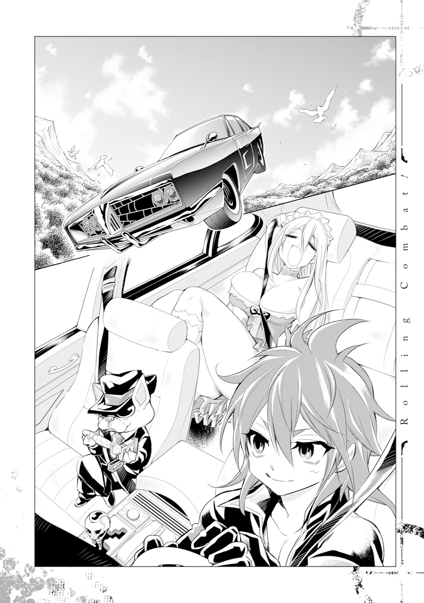
「風に吹かれるたびに、頭蓋骨は自分を殺した犯人の名前を言うって話、聞いたことねえか？ 殺した相手への恨みが深いと、実際そういうことが起きる。ここのスパルトイは恨みが深すぎて、相手の性癖をぶちまけると言われている」
「後半入ってこないんだけど。名前はまだわかるとして、なんで相手の性癖知ってるのさ」
「骨は卜占の道具に使われるだけあって、霊的な力を帯びてるからなあ」
ああ、なるほどね、って納得できるかバカ野郎だったけど、掘り下げても徒労になりそうだったのでやめた。幼女って叫ぶ大量の骸骨が復活しないことを祈ろう。
車はしばらく森の上を突き進み、長閑な田園風景へと抜ける。だいたい半日くらいで目的のダンジョンに着くみたいだ。
レグバの予告どおりフランは信じられない早さで寝た。おやすみ。そして、いただきます。
「何回見ても、フランの寝姿には興奮するよな」
バックミラーで太ももや胸の谷間をチラ見していることに気づいたのか、レグバがそんなことを言ってきた。
「そういえばレグバは、なんでいろいろフランの面倒を見てあげてるの？」
「なんだよその言い方。まるで俺が損得勘定だけで動いてる人間みたいじゃねえか」
いままでの行動だけ見ればそうだ。あと人間じゃなくて犬だろあんた。
「異世界から誰かを連れてくるなんて仕事してると、どうしてもこっちの世界でも頼れる仲間ってのが必要になってくるんだ。だから、それなりにつえーヤツらと友達になって、定期的に面倒見るなりなんかやるなりして、恩を売っとくんだよ。必要な時に手を貸してもらうためにな」
やっぱり損得勘定じゃねえか。
「そもそも、レグバってなんなの？ なんで異世界の人なんか連れてくるのさ？」
もう一度フランが寝ていることを確認してから訊ねる。本来ならもっと早く聞きたかった質問だけど、他に優先して考えることがありすぎて、順番が回ってこなかった。
「最初に言ったじゃねえか。俺は悪魔だよ」
「だからその悪魔ってのはなんなのさ？」
「うるせえなあ。それはそういうもんとして納得しとけよ」
なんて言いつつも、レグバが説明してくれた悪魔の実態とは、以下のようなものだった。
ダンジョンを支配するのがダンジョンマスター。そのダンジョンマスターが生み出し、任意の場所に配置するのがダンジョンボス。ダンジョンが攻略されるのと同時にマスターは消滅し、それと同時にボスも命を落とす。
普通は。
イレギュラーが発生しないシステムなんてこの世に存在しない。本当にごく稀にだけど、マスターが消滅しても死なないボスってのがいる。
そういう存在が悪魔って呼ばれている。レグバは賑やかしっていうダンジョンマスターに生みだされて、悪魔として生き残った元ダンジョンボスらしい。
生きながらえはしたものの、魔力生命体である彼らは、魔力が枯渇すると死んでしまう。だけど世の理から逸脱しているから、普通の方法で魔力を摂取するのは無理で、それぞれ固有の方法で魔力の調達に務めなければいけない。
レグバの場合、他人の人生を食べることで、魔力を収集できるんだとか。
「人間を食べるの？」
「そうじゃない。俺が関わることでそいつが死んだら、その後にそいつがその世界で生きるはずだった人生を、食う」
どの道殺すってことじゃないのよさ。
「最初は普通に殺してたが、これが思ったよりシンドい。生きるってことは他の何かを間接的に殺し続けるってことだが、俺の場合は直接だからな。ダンジョンにいる頃はお互い様だと思ってなんとも思わなかったが、なんの罪もねえヤツを食い続けるとか、けっこう精神的にくるもんがあったんだ。感情がないヤツとか、殺人に快楽を覚えるダンジョンボスもいるが、残念ながら俺はそうじゃなかった。そんで、殺し続ければ手配も回る。精神的にも身体的にもボロボロになるのに時間はかからなかったな」
なんていうか、思っていた悪魔と違う。こんなに人間臭いメンタルなんだ。
「そこで、お前らの世界に目をつけた。俺らは世の理から外れてっからな。どえれえ魔力は使うが、世界と世界の間を渡ることもできる。そうしてそっちに行ってから、今の方法を思いついたわけだ」
「......えーと、つまり」
「要はそいつがいる世界から、そいつの存在を消しちまえば、そいつがその世界で生きるはずだった人生を食えるからな。殺す必要はねえ。そっちの世界からこっちの世界に送れば事足りるんだ。まあ、世界を渡る交通費の魔力もバカになんねえから、『双方同意の契約をする』っていう形で、代償を払うことになっちまったけどな」
わあ、すごい。そうすれば、おってにおわれるしんぱいもないし、ひとをころすざいあくかんからものがれられるぞ。
「って、いまさらだけど、百パーレグバの都合だよね」
「死ぬよりはマシだろ。一応死ぬ直前のヤツとか、そっちの世界に見切りをつけてるヤツにターゲットを絞ってるしな。まあ、お前は死ななかったわけだから、なんとも言えんが」
気まずそうに咳払いをする彼。少し疑っていたのだけれど、こういう人間臭い仕草もポーズってわけじゃなさそうだ。
.........ん、でもちょっと待てよ。
「そしたらさ、僕を元の世界に戻すこともできるんじゃない？」
「だからそれは無理だって。ウルトラファッキンな存在の俺だからふたつの世界を行き来できるが、普通の人間は片道が限界だ。魂に負担がかかりすぎるからな」
また真偽の確かめようのないことを......。
「確認してみてもいいぜ。俺以外にも俺みたいなことをやってる悪魔は、すげー少数だけどいるからな。なんなら紹介してやってもいい」
「......いいよ」
口裏合わせてるかもしれないし、とかではなく、単純に徒労に終わる気がするからだ。
そんなことよりも、
「じゃあレグバって、普通の方法では魔力が回復しないんだよね？」
「そうだが」
「......イグジットの魔法陣を書くので、だいぶ魔力使ってなかった？」
「だからお前さん頼りだって言ってるだろ」
「............」
「ふわあ」
改めて自分の立ち位置とレグバの丸投げを自覚したところで、フランの欠伸が聞こえた。
「もう着いた？」
「まだ全然。もうちょい寝てな」
遊園地に向かう親子の会話に聞こえる。僕も毒されたもんだ。
「ふうん。ねえウィル、大丈夫？ 緊張してない？」
お姉ちゃんはそんなことを言いながら弟に飴をくれた。いよいよ家族旅行か。
「うん、ちょっとしてる」
「そう。でも大丈夫よ。フランちゃんがついてるから」
ダンジョンは危険な場所ではあるけれど、お姉ちゃんぶれる絶好の機会でもある。フランの認識はそんなところだろう。ドヤ顔でこんなことまで言ってきた。
「困ったことがあったらフランちゃんに言いなさい。なんとかしてあげるから」
ひどい腐臭を伴って曲がり角からやってきたのは、腐った臓腑を晒しながら歩く死体――タキシムと呼ばれるモンスターだ。
数は十数体。幅五メートル前後の洞穴の道を塞ぐみたいにして、僕らの前に立ちはだかった彼らに、既にコンバートしてある左手を向けた。
「セミオート」
まずは射線上にいた一体の頭に銃弾を撃ちこむ。頭は下顎を残して吹き飛んで、後ろにいたもう一体の顔面にも風穴が空いた。少しオーバーキル気味なので、威力を調節。
「フルオート」
扇状に手を振りながら撃つ。彼らは腐敗した肉をまき散らしながら次々に倒れて、あっという間にただの腐った肉塊になった。
「ゲェアア！」
奥のほうから奇声を発して現れたのは、矮軀とは不釣り合いに巨大な斧を持ったモンスター、レッドキャップだ。タキシムの死体を盾にして掃射をやり過ごしたらしい彼は、すさまじい速さで蛇行しながら僕に肉薄してきた。射撃が間に合わない。
フルスイングするみたいに横からやってきた斧を、右の前腕で受ける。ガッ、と鈍い音がして、刃の進行がそこで止まった。当たり前だけど、イコライザーは発動ずみだ。
大きく見開かれた赤い目に向けて、至近距離からヘッドショットをお見舞いする。ぶちまけられた脳漿の間から、数体のレッドキャップがこっちに向かってくるのが見えた。やっぱり速い。そんで数が多い。フルオートでもたぶん何匹か撃ち漏らす。多対一の接近戦に持ちこまれたら、片手を銃にしたままでは不利だ。
「レグバ、援護して」
「はいよ」
そう判断した僕は、コンバートを解除して徒手空拳の構えをとった。それと一緒に背後にいたレグバが、蛇行して動くレッドキャップに二丁拳銃での牽制射撃を加える。
余談だけどこの拳銃、レグバがカスタマイズしたマジックアイテムで、これを知っていたから、フランは僕の小銃を見てもあんまり驚かなかったんだとか。感謝しろよと言われたけど、言うほど驚いてなくもなかったから、べつになんの感情もなかった。
射撃を免れた一体が飛びついてきた。今度は斧が振るわれる前にその手をつかんで、右ストレートをぶちこんだ。鼻骨や頰骨を砕く生々しい感触。空中で絶命したそいつの斧を奪って、矢継ぎ早に飛びついてきた一体の斧を受ける。大きくたたらを踏んだその矮軀に、唐竹割りの一閃を加えた。
トレードマークの帽子もろとも真っぷたつに割れた彼の後ろにいるレッドキャップは、もう残り二体。攻めるか逃げるかで一瞬だけ硬直した一体に向けて斧を投擲。肉厚の刃が喉に食らいつくのと一緒に、逃げようとしていた一体の額にも風穴が空いた。
「今の判断は、どうだった？」
「悪くねえ。が、ここからの階層は種類の違うモンスター同士が徒党を組んで襲ってくることもある。前衛を倒したからって気を抜くな」
「わかった」
リスクマネジメント会議を行いながら、手早くドロップアイテムを回収。つっても、比較的状態のいい斧くらいしか使えそうなものがなかったけど。
「とはいえ、やっぱり俺の見立てどおりだ。レベル５クラスのモンスターが徒党を組んでも楽勝で対応できちまう。ファッキンとんでもねえよ、お前」
「そっちこそ、ほぼワンショットワンキルじゃん。どこが可愛いだけのマスコットなの」
そんなふうにお互いを労っていると、後ろから地獄みたいな気配を感じた。
「...............」
腕を組んで、ふてくされるみたいに顔をブスにして、つま先でエイトビートを刻んでいる、フラン。
ダンジョンに入って会敵したのは十三回。彼女は、一回も手を出していない。
「......フランちゃんも、見守ってくれて、ありがとう」
「.........ファッキン気にしなくていいわ」
フランの顔がブスになっていくこと以外、ダンジョン攻略は極めて順調だ。
僕とレグバの働きもあるけれど、やっぱり先遣したっていう冒険者ユニットが残した爪痕は大きいみたいだ。モンスターなんかは復活しているからそんなに恩恵にはあずかれていないけど、復活に時間がかかるダンジョンボスがいないってことが大きい。
悪い子のダンジョンは五十階層。ダンジョンボスは十階層ごとに一体ずつ、計五体が配置されていたらしいんだけど、前に入ったユニットは、四体ものボスを倒してくれたらしい。
ダンジョン攻略のネックはボスとマスターの撃破にある。ユニットごとに差はあるけれど、だいたい半日から一日くらいは身体を休めてから彼らに挑んでいくのが普通らしい。戦闘も一回で終わるとも限らない。消耗しすぎたら街まで引き返すこともある。
その手間をほとんど免除されている僕らは、先に進むことだけを意識して攻略に臨むことができた。っていうかまあ、早くしないとダンジョンボスが復活しちゃうから、そうするしかなかったってのもあるんだけどね。
その甲斐あってか、一日で五階層。多い時では十階層を踏破する日もあった。このレベル帯のダンジョンでいえば、一日に踏破する階層は二から三。多くて五、ってことを考えれば、どんだけ掟破りの速度かってことがわかる。
だけど強行軍ってわけじゃないから、要所要所で充分に休憩はとっている。ダンジョンで無理だけは絶対に禁物だからね。それがなければ一日二十はいける、ってレグバが笑っていた。僕はあんまり笑えなかった。いのちをだいじに、でいこうよ。
とはいえ、端から見ればガンガンいこうぜな攻略をすること八日目。
「よーし。気合い入れ直していけよ、お前ら」
たいしたトラブルが発生することもなく、僕らは四十九階層。五体目のダンジョンボスがいる部屋の前まで来ていた。
「いいか、ウィル。確かにここまでは順調だったが、絶対に調子に乗るな」
扉を背にしてちんまりと腕を組みながら、レグバはそんなことを言ってきた。
「モンスターとボスは別もんだ。一撃もらうだけで死ぬことだってある。気を抜くな」
「わかった」
というかこのダンジョンに入ってから、気を抜いたことも調子に乗ったこともない。トントン拍子に行きすぎて怖いと思っているくらいだ。言われなくてもそのつもりだ。
――なんてことをその時の僕は思っていたけれど、思い返してみれば、少し調子に乗っていたのかもしれない。
世界でもトップクラスの魔力を持っているなんて言われて、モンスターも余裕で倒せて、フランにもたくさん褒めてもらえて、少しだけ、気が大きくなっていたのかもしれない。
それさえなければ、あんなことにはならなかったかもしれない。
「じゃあ、開けるよ」
イコライザーとコンバートを発動。ふたりが頷くのを確認して、重厚な鉄の扉を開けた。
今まで踏破してきたダンジョンボスの部屋と同じように、中は何もなくてだだっ広い部屋だ。ただ、明らかに違う点がひとつ。
「............」
部屋の最奥。最上階に繫がる階段を守るようにして座っていた土の巨人――ゴーレムが、ゆっくりと立ち上がったことだ。
「セミオート」
中の中くらいの威力に設定した弾丸を様子見として放つ。けど、呆気なく弾かれた。モンスターだったら下の上でもいけたんだけどな。
射撃を合図にしたみたいに、ゴーレムはゆっくりと僕らに向けて歩きだした。ずしん、ずしん、と、動くたびに床が微振動する。うああ、思ったより迫力あるよ、この人。
今度は上の下に設定して、撃つ。最高出力で撃ちたいところだけど、連射性が著しく落ちる。実戦で使うのなら、実質このあたりが僕の持つ最大火力だ。
今度は頭に直撃した弾丸は、耳も髪もない頭部を少しだけ削った。
「ダメージを確認。でも、ちょっとだけ。どうする？」
「充分だ、とは言えねえけど、このまま予定どおり、距離をとりながら削れるところから削っていく」
そうして、レグバと僕の一斉掃射がゴーレムの顔面を強襲した。武骨な顔はあっという間に砂埃で見えなくなって、遅い進行がさらに遅くなった。
五番目のボスがゴーレムってことはわかっていたから、彼を想定した訓練を嫌というほど繰り返した。逃げながら同じ場所にひたすら弾丸を撃ちこむ。それだけ。
ただ、耐久度のほうは未知数だったから、もしも最大威力の攻撃でも無傷、あるいは微々たる受傷だったら、いったん引き返して作戦を練り直すことにしていた。僕はいったん逃げたほうがいいと思ったけれど、レグバはいけると踏んだみたいだ。
そしてどうやら、その判断は正しい。ゴーレムは大きな手で顔を覆って、鈍重な歩行を完全に止めたからだ。五メートル以上はある巨体を、苦しそうに微動させてすらいる。
いける。いけるぞこれ。しかもこれ、けっこうあっさりのやつ......。
「どいて！」
なんて思っていたら、フランがいきなり前線に躍り出てきた。
「エアストライク！」
突き出した両手から生まれ出た颶風が、ゴーレムの身体を直撃する。砂埃が完全に吹き飛んだ――。
直後。
ゴーレムの口から、とんでもない勢いで火炎が放射された。
本来、僕達に向けて放たれるはずだったそれは、フランの魔法で進行方向を逆に捻じ曲げられて、もろに自分の顔を火事にしていたけど。
でも、なにこの熱量。ここまで熱気が来るんだけど。
「どういうこと!? ゴーレムは魔法使うなんて、訓練では言ってなかったよね!?」
「普通のゴーレムは使えねえ。だが......ああ、クソ！ 他のダンジョンボスが復活してなかった時点で、可能性として考えとくんだった！」
中断していた射撃を再開しながら、レグバは苦々しく言った。
「たぶん、一、二匹くらいならボスを復活させるくらいの魔力も時間もあったんだ。だがその分を、このゴーレムをカスタマイズするのに使いやがった。魔法が使える仕様にな」
被弾してもたいして傷つかなくて、重火器を積んでいるでっかいもの。そういうのをなんていうか知っている。戦車っていうんだ。
「フラン、次の魔法攻撃まで、どれくらいあるかわかるか？」
「はっきりとはわからないけど、魔力の溜まり方からして、たぶん三十秒くらい」
顔を手で守りながら、ゴーレムは僕たちに向かって歩行を再開した。ぷすぷすと黒い煙をあげている頭部は、五分の一くらいは削れている。いつかはたぶん倒せると思う。
だけどそのいつかまでの間に、何回か火炎放射を受けることになる。一部は避けられるだろう。だけどその他はさっきみたいにフランに相殺させることになる。
現段階でフランが消費できる魔力は、レベル７クラスを五発分くらい。本人はもう少しいけると言っているけど、レグバストップでそこに落ち着いた。エアストライクはレベル７。つまり、相殺できるのはあと四回が限度。それまでにあの巨体を倒さなくちゃならない。
いや、落ち着け僕バカ野郎。そんなジリ貧な戦闘方法はダメだ。魔力が尽きたら引き返すしかなくなるじゃないか。だったらその分でゴーレムに強力な魔法を浴びせたほうがいい。
だけど、フランの持つ最大威力の魔法でも通用しなかったら？
............使うか、あれを。
小銃をカスタマイズしている頃からコツコツと作り続けていた、あれを。
いや、だけどあれは、できればマスター用の奥の手としてとっておきたい。数にだって限りがあるんだ。ここで無駄打ちするのは......。
「ウィル」
煩悶する僕の表情を横目にして、レグバは出し抜けにこんなことを言ってきた。
「あれを使え」
「.........わかった」
僕と同じ結論に至ったのか、あるいは数手先まで読んだうえでそう結論づけたのかはわからない。けれど、その言葉で葛藤は霧散して、頭がクリアになった。
......そうだ。本当に落ち着け、僕。何をやっているんだ。
ひとりで戦っていたあの頃と違って、今の僕には仲間がいるじゃないか。
悩んだら聞く。援護が欲しければ言う。そんな当たり前のことをしてくれる人たちがいるじゃないか。
確かにところどころで彼らの言行を疑ってきた。けど、今回のこの戦闘の目的は一緒だ。
だったら、頼らないとダメだ。
「準備にどれくらいかかる？」
「次の魔法攻撃が来るのより少し前、か、同じくらいには撃てる」
「よし、フラン、ウィルとポジションをスイッチ、間に合わなかったらカバーしろ」
「わかったわ！」
まるで手足を動かすみたいにするすると陣形が動く。入れ替わる瞬間フランと目が合った。任せなさい、と、頼りにしてるわ、の間くらいの視線がむず痒くて、心地よかった。
「コンバート」
後衛につくのと一緒に口を動かす。すると、左手の小銃が一瞬だけ紫電を帯び、銃身の背部に黒い突起――トップレバーが出現して、主砲の上には小さな副砲が設置される。いわゆる上下二連式の形になった。外見的な変化はこれだけだけど、内部構造はほぼ別物に変わっている。
出現したトップレバーを反時計周りに動かすと、銃身が機関部から逆Ｖ字型に折れ曲がる。そこに現れた上下の銃身後尾の薬室へと、ポケットから取り出した円錐型の弾丸を込める。がちゃん、と銃身を元に戻して、ゴーレムの頭部に狙いをつけた。
だけどその直後、再び彼の口から火炎が放出される。
「エアストライク！」
思ったより少し早い。けど、想定の範囲内。フランがもう一度同じ手順で相殺してくれた。
その隙にフランの横に並んで、火だるまになったゴーレムの頭に再び狙いをつける。
「ショットガン」
ゴゥンッ、という爆音に、フルスイングされたハンマーでぶっ叩かれたみたいな反動。
それらに押し出されて飛んでいった弾丸は、熱された空気を切り刻みながらゴーレムの顔面に食らいつくと、
バガァアアアアンッ！
「............え」
頭部、頸部を完全に爆砕。人間でいう鎖骨あたりまでを深く抉りとった。
............え？
............こんなに？
「やっっっったぁッ!!」
ゆっくりと膝をついてから、床に巨体を沈めるゴーレム。その大音響に負けないくらいの喝采を上げながら、フランは僕に抱きついてきた。
「すごいわ、ウィル、すごい！ ゴーレムを一撃でやっつけるなんて、フランちゃんでもできないわよ！ ファッキンすごいわよ！」
興奮気味に頭やら首やら肩やら背中やらを撫でられながら、僕は事態の把握に努めた。
コンバートの第二形態・ショットガンモード。その名のとおり、ショットガンの特性を反映させた形態だ。連射もバースト射撃も無理で、装弾も小銃の時とは違って、初矢と後矢の二発分だけしかできない。もっと言えば、本物のショットガンみたいに散弾を発射するわけでもない。
だけどその弾丸は、魔力を込められるだけ込めた魔力結晶を使っている。
弾丸を作るっていうのは当初から考えていたことだけど、魔力結晶を使うっていうのはフランのアイディアだ。最初は土の魔法で作った岩の弾丸を使っていた。それでも十分な威力だったけど、込められる魔力の量に限りがあったから、途中からこっちに切り替えた。
そうしてできた魔力結晶の弾丸。通称魔弾（命名フラン）を最初に試し撃ちした時には、焦った。木がマッチ棒みたいにへし折れて、着弾した地面にでっかいクレーターが開いたんだ。僕はエコとエロに重きを置くおじさんなのに。
とはいえ、魔力を帯びた生命体にはどの程度効くかっていうのはフランにもわからなかったみたいだけど、今の威力を見る限り、フランと同じ調子で勝鬨をあげるくらいのことはしてもいいのかもしれない。
.........もっとも、魔弾のストックがそんなにあるわけじゃないから、手放しで喜ぶわけにはいかないけど。
でもまあ......うん。せっかくだから、肘でおっぱいに触れるだけ触っとこう。
「いつまでもはしゃいでんじゃねえよ、ガキども。とっとと魔力結晶拾うぞ」
まだ５hitくらいしかしてないのに、なんて思いながら見てみると、瓦解したゴーレムの身体の一部が、たくさんの魔力結晶に変化していた。
「拾ったら陣営に戻って交替で休憩。そしたらいよいよマスターとケンカだ。それが終わるまで気ぃ抜くんじゃねえぞ」
クールに言いながらそこに歩み寄る彼だったけど、僕とフランは見た。
スーツから飛び出た尻尾は、二拍子の指揮をするみたいにぴょこぴょこと揺れていた。
顔を見合わせて悪戯っぽく笑い合ってから、僕達も小柄な後ろ姿を追った。
――気づけよ僕、バカ野郎。なんのためにオタクやってたんだ。
こんなリア充描写、フラグに決まってるじゃないか。
「それ以上ジャイアントキリングジャイアントさんに近づくな、変な犬」
舌ったらずの声が聞こえたと思ったら、小さな擦過音がして、レグバの身体が消えた。
代わりにそこに立っていたのは、片刃の黒い短刀――フルタングを両手に持った、幼女。
ロリ子だ。
数秒とおかずに、十メートル以上離れた壁でべちゃりとした音がした。胸から血を流したレグバが岩肌に叩きつけられる音だった。
「ショットガンッ!!」
五感を介して入ってきた情報を理解するよりも早く、僕はロリ子に向けて後矢となる弾丸を放っていた。崩れていたゴーレムの身体の一部はさらに粉々になって、そのあたり一帯を土煙で覆い尽くす。手ごたえは、ない。
コンバートを小銃モードに戻しつつ周りを見渡す。周囲に敵影らしきものもない。
.........うわあ。
............そういうことか。
「イグジット......発動しろっ」
ようやくといった感じで立ち上がったレグバは、それでも鋭く、吼えた。
「そいつ、その魔力、ヤベエ！ ダンジョンマスターだ！ 逃げるぞ！」
............そりゃあ、悪い子のダンジョンに行くって言った時、あんな顔にもなるよね。
だって、
「いかにも。わたしがこのダンジョンのマスターだ」
ロリ子が、あのロリ可愛い天使が、ロリ神様の使徒が、半年以上も夢の中で僕にアドバイスをくれていた心の支えが、その悪い子とかいうダンジョンマスターだったんだから。
......マジか。
............マジかあ。
「だが、生きて帰すわけがないだろう」
なんて、葛藤している時間はないらしい。次にロリ子の声がしたのはレグバの背後。フルタングが生み出す風切り音を伴っていた。
十字に振るわれた双剣を、レグバは拳銃のスライド部分で弾き返す。攻防が数回行われたところで、ふたりの身体が少しだけ離れる。そこにフルオートの援護射撃を叩き入れた。
「すさまじい威力だな。その変な銃。反則だと思うのだが」
それが届く直前、ロリ子の身体は再び搔き消えた。君のそれこそなんなんだよ！
「反則はテメエだろうが！ ダンジョンマスターはテメエのフロアから出られねえはずだろっ。なに平場に出てきてくれちゃってんだよ!?」
レグバの悪態のとおり、ダンジョンマスターは自分のフロアから動けないとされている。
......けど。『イレギュラーが発生しないシステムなんてこの世に存在しない』か。
どういうからくりが働いているのかは知らないけど、このダンジョンマスターの幼女は、ダンジョンボスの部屋に――消耗した僕らの前に現れて、殺そうとしているんだ。
「こちらの事情に関してとやかく言われる筋合いはない。それよりも、よくも最後のお友達のジャイアントキリングジャイアントさんまで倒したな、薄汚い冒険者風情が」
どこからともなくロリ子の声が聞こえた。っていうかネーミングセンスっ。
「復活の贄にしてやる」
物騒な一言を残して、再び沈黙する彼女。姿は見えないけど、部屋中で気配が消えたり現れたりする。不気味な雰囲気が室内に広がった。けど、
「そこ！ レグバのすぐ上！」
いきなりフランがそんなことを言いだす。半ば反射的に弾丸を撃ちこむ。すると、
「ちぃっ!!」
フルタングを振り上げたポーズのロリ子が現れた。頰のあたりに擦過傷を負わせたみたいだけど、すぐに消えたから詳しくはわからない。
「次、二時の方向に飛んだ。三時、五時、二時に戻った！」
言われるままの方向にしこたま弾丸を撃ち続けた。フランが何をしているのかはわかる。リバーブっていう、広範囲に渡って索敵をする時に使う魔法だ。魔力の軌跡を追うらしい。
だけど......そんなの長時間使い続けたら、一体どれくらいの消費量になるんだろう？
「なにしてんだウィル!? 早くイグジットを作動させろ！」
「さっきからやろうとしてる！ けどこれ、全然魔力溜まんないんだけど！」
さすがにイグジットを試してみるわけにはいかなかったので、それまで知らなかった。話には聞いていたけど、こんなに魔力を必要とするものだったなんて。
「そりゃ三人分やってるからだろうが！ 俺の分はいい！ お前らの分だけ......」
「レグバ、うしろっ!!」
――フランが言った時には既に、レグバの右腕が胴体から離れていた。
「レグバァっ!!」
錐もみ状態で飛んでいく短軀に、勢いの乗った踵が落ちる。死んだ、かどうかはわからない。だけどそんなコントみたいな死に方したら、いよいよ変なおじさんだぞ、あんたっ!!
「そうか」
僕の射撃が届くまでの刹那。ロリ子のとび色の瞳が酷薄な光を灯した。
......半年以上も仲良くしていた良き友人に向けるそれじゃなくて、ただただ自分を殺しに来たものに向ける、目だった。
「緊急脱出用の魔法陣を持っているのは、君か」
手加減とか葛藤とか、そんな生ぬるいことを言っている場面じゃないんだって自覚させてくれる、目だった。
「.........フルオートォォッ！」
怯懦を吐き出すみたいにして射撃を続けた。だけどわかっている。指示があるからとはいっても、姿が見えない敵に致命傷を与えるなんて無理だ。イグジットに魔力が溜まるまでの時間稼ぎとしても、接近戦に持ちこまれたら圧倒的に不利になる。だったらまだ、イコライザーでの徒手空拳に切り替えて、姿が見えた瞬間を狙ったほうがいい。
だけど、レグバの援護が期待できない状態で、果たしてそれは得策だろうか。
最悪僕は刺されたって、相手の動きを封じられればいい。だけどその隙をついて致命傷を与えるアタッカーが必要だ。
頼れるのはひとりしかいない。わかっている。
だけど......彼女が使っていい魔力は、いったいあとどれくらいあるんだろうか。
「.........大丈夫よ、ウィル」
渋くなっていく僕の表情から、彼女が何を汲みとったのかはわからない。あるいは何も汲んでなかったのかもしれない。ただ、弟が苦しそうにしているから、だったのかもしれない。
.........いや、きっとわかっている。
僕が思っていることも、それによって、自分がどうにかなるかもしれないことも。
わかったうえでフランは、こんなことを言ってくれた。
「命令して。フランちゃんはお姉ちゃんだから。ウィルを守るためだったら、なんだってするわ。だから、フランちゃんが何をすればいいのか、言って」
「...............」
――無事に帰れたら......なんて変なフラグを立てたから、前の世界では死んだ。だから無事に帰ったらとかではなく、今この瞬間、やりたいことはやっておこう。
今この瞬間から、この年下の姉を、本当のお姉ちゃんだって思うことにしよう。
ただ可愛いだけじゃなくて、人間として尊敬できる人物だって、そう思うことにしよう。
「フラン」
心の中だけで深呼吸をしてから、僕は言った。
「十秒後に徒手による近接格闘に移行する。接近したら指示をくれ。組みついて動きを止める。その隙に殺れ。僕を巻きこむ必要があったら迷わずそうしろ。だがイグジットの魔力が溜まり次第、レグバを回収して退却する」
「わかった」
真っ直ぐな視線を交錯させた後、お互いに少し笑った。帰ってからまた同じことができますように、なんて思ったら、やっぱりフラグになっちゃうのかな。
予告どおりの秒数でコンバートを解いて、右足を斜め前に出して半身で構える。
数秒と待たずにチャンスが巡ってきた。
「右の肩口っ！」
「ぐぅむ！」
いやまあ、僕の肩がフルタングに刺された、って言い方もあるわけだけど。
とはいえ動線はつかんだ。素早く刃を引き抜いて逃げようとするロリ子の足に、僕は気合いで抱きついた。
――それは、初めて彼女と出会った時と同じ構図だった。
なんて思っている場合じゃない。フルタングがふたたび振りかぶられている。
「グラムゼロ！」
それが僕の頭を捉える前にフランの声がして、すさまじい圧力が僕とロリ子を襲った。なるほど。これだったら僕ごとやってもダメージそのものは少ない。けどロリ子の動きは完全に止められる。
そのロリ子に少しだけ息を荒くしたフランが近づき、人さし指を頭に向けた。
「ヘリカルアイス」
らせん状の尖った氷柱を出現させる魔法、ヘリカルアイス。凶悪なことにフランの改良したそれは、生み出した氷柱を弾丸のように打ち出すことができた。
......そう。それだけの威力を持ったこの魔法なら、きっと、苦しまずに、一瞬で――。
「や......めろ......っ！」
必死に床を搔くロリ子に向けて、人差し指に出現させた氷柱を突きつけたフランは、
「かひゅ」
だけど、そこで限界だった。
彼女は短く息を吐いて、仰向けになるみたいにその場で倒れた。見ればその皮膚には、僕が魔力結晶を取り出された時みたいな亀裂が入っていた。
「フラン!!」
圧力から解放された僕が最初に何をすべきか。そんなの決まっている。ロリ子を攻撃するんだ。じゃなきゃフランの決死が無駄になってしまう。
だけど僕の身体は意に反して、崩れ落ちるフランの身体を支えるために動いていた。
がら空きになったその背中に二本のフルタングが突き入れられたのは、当たり前だ。
凶刃が引き抜かれるのと一緒に黒い血をたくさん吐いた。すかさずロリ子が二撃目のアクションに入るのが気配で伝わる。逃げなきゃ。くそ。足が動かない、ヤバい、死ぬ。怖い。フランは？ フランはどうなった？ 死んだ？ 僕と一緒に、死、
「うぉらあああああああああああああああ!!」
僕の混乱をぶん殴るみたいにして、レグバの張り上げた大音声が聞こえてきた。
続いて低いエンジン音と、巨大な質量の何かがすごい速さでこっちに向かってくる気配。それが何かにぶつかるようなとんでもない音がしたところで、やっと振り返ることができた。
魔法の絨毯こと黒塗りの高級車が、ロリ子を撥ねているところだった。
「調子こきやがって、こんクソガキャ」
悪態をつきながら運転席から出てきたレグバは、最初の時と同じ、人間の姿をしていた。
「こちとら三百年以上も他人の人生喰らって生き延びてんだ！ 簡単に殺れると思ってんじゃねえぞ、ゴラァ!!」
「......なん......なんだ。なんなんだよ、お前ら！ 超怖ぇよっ!!」
岩肌まで吹き飛んでいたロリ子は、涙目になりながら右手をパチンと鳴らした。
すると、岩塊と化していたゴーレムの身体が蠢きながら集結し、瞬く間に歪な四足獣の形を成して、とんでもない勢いでレグバに襲いかかった。
たぶんだけど、物を触らずに動かす魔法――パペットのすごいバージョンだ。これで、ボスとしてオートで動いていた時とは違って、術者（ロリ子）のマニュアル操作になるけど、代わりに粉々にするか、術者が制御をやめない限り動く。ダンジョンマスターは後発に備えて魔力を温存して戦うって聞いたことがあるから、いよいよ彼女も本気なんだろう。
だとしたら、いや、だとしなくても、まずい。三人がかりでやっと相手をしていた強敵が、より強力になって復活しているってところからしてそうだし、その気になればロリ子は、パペットを打ち切ってより直接的な魔法攻撃に打って出ることだって可能だろう。
パペットはこちらを消耗させるための初手。これからどんどん苛烈な攻撃を仕掛けてくるって考えたほうがいい。
三人のうちふたりは瀕死。残りひとりも、最終手段的なものを使っているこの状況で、だ。
絶望的、って言葉の何歩か先の言葉が頭に浮かんでいた。
詰んでいる。
「うおらあああッ！」
前哨目的で生み出された岩の猛獣を、レグバは長い手足で迎撃する。だいぶ押され気味ではあるけど、犬の時よりも数段強い。そういう魔法なんだろうか。
......って、それも大事だけど、それよりも、
「フラン、大丈夫!?」
這って彼女に近づいた。薄くではあるけど目は開いている。意識もあるみたいだ。
僕の姿を確認すると、彼女は力なく僕の身体に触れて、
「リカバリィ」
「!!」
途端、僕の身体の刀傷があっという間になくなって、倦怠感もウソみたいになくなった。
「......大丈夫。これ、くらいの怪我なら、寿命はたいして、縮まない」
......そうじゃない。そこじゃないよ！ そんなことしたら、君がどうなんのさ!?
そんなふうに怒鳴ることはできなかった。
フランの身体の亀裂は、とうとう顔にまで及ぶ。それが魔力の枯渇を意味しているかどうかは知らないけど、目に見えて顔から生気が失せていく。どう見たってヤバい状態だった、から。
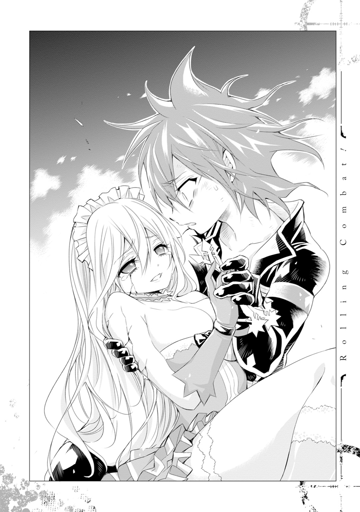
「......ごめんね、ごめんね、ウィル。こんなのに巻きこんじゃって。フランちゃん、お姉ちゃんなのに、ごめんね。お姉ちゃんなのに、ダメで、ごめんね」
濃緑の瞳から涙がボロボロこぼれだした。
.........ごめんねは。
ごめんねっていうのは、僕なんだよ、フラン。
君が守りたかったウィル・ブラウンなんてヤツ、いないんだ。
ロリコンで、キモオタで、童貞で、君の身体でソロプレイしちゃってるような最低野郎が、保身のために被っている化けの皮でしかない。
君はお姉ちゃんのつもりかもしれないけど、僕は弟なんかじゃない、君を騙している最低のクズ野郎なんだ。
.........なのに、なんで、こんな。
「イグジットに、魔力、い、入れといた。もうつ、使えると、思う」
懐に入れておいた魔法陣を取り出す。三枚のうち二枚は、薄い輝きを帯びていた。
「二枚しか、間に合わなかった。それで、レグバと逃げて。フランちゃんはもう、たぶん、ダメだから。ここまで、枯渇したら、魔力結晶を使っても、元に戻るかどうか、わ、わからない」
自分の身体を見つめながら悲しげに言う。だからこんな無茶したのか。
「だから、早く、逃げ」
最後に力を振り絞るみたいにして、フランは笑って、そこから動かなくなった。
息は、してる。意識を失っただけみたいだ。けどこのままだったらどうなるかわからない。早くなんとかしないと。
クズとしてでも最低としてでもロリコンとしてでも、なんでもいい。彼女を助けたい。
彼女が弟のウィル・ブラウンを助けたみたいに、僕も彼女を助けたい。
フランに向けてイグジットを発動。可愛らしい寝顔もろとも身体が吸いこまれていって、魔法陣の輝きが失せた。
続いてレグバとゴーレムの攻防を見る。大きくなった彼はやっぱり強い。なくなった右腕もなぜかくっついている。けど、もうボロボロだ。戦っていられる状態には程遠い。
それに僕は見た。スーツの襟元から覗く首には、大きな亀裂が走っている。
腕を生やす。あとよくわかんないけど、人間の姿になって強力な力を生み出す。やっぱり彼も相応に無茶をしているみたいだ。まあ、そうじゃなくても僕が戻るわけにはいかないよね。フランの処置とかわからないし。
「イコライザー」
解けていたそれを掛け直して、レグバまで移動。有無をいわさずイグジットを発動した。
「なっ.........おま！」
彼を魔法陣の中に入れてから、その目の前に迫っていたゴーレムに向き合った。
思いっきり右の拳を振りかぶる。すべての魔力を足に凝集させて勢いを溜める。
ゴーレムの鼻っ面目がけて、僕は跳んだ。
「るああああっ!!」
砲弾みたいな勢いで放たれた右ストレートは、ゴーレムの顔面を大きく穿ち、その巨体を吹き飛ばした。
その背が壁面に叩きつけられるより早く動く。土ぼこりの軌跡を追うようにして跳躍し、勢いの乗った回し蹴りを腹部に叩きこんだ。大きく亀裂の入ったそこに左のフック。拳を引き戻す反動を利用しての右ストレート。拳を翻して裏拳を放ち、一回転して肘。さらに膝蹴りをお見舞いしようとしたところで、いきなり巨体が回転した勢いで吹き飛ばされた。
地面を削りながら着地した時、既にゴーレムはこちらに向けて疾駆していた。
「フルオートォォッ!!」
小銃モードにした左手を向け、最大火力で撃ちまくる。集中豪雨みたいな勢いで前足に集弾しているけど、ゴーレムはかまわず僕に突っこんできた。
横に大きく跳んで突進を躱した僕は、今度は後ろ足に向けて一斉掃射を再開する。でも、すぐにこちらに方向転換されてしまった。
でもまあ、これだけダメージを蓄積させたから、たぶん大丈夫だろう。
再び突進してきた巨軀を、今度は上に跳んで躱す。同時にコンバートをショットガンモードに変えて、着地点を定めた。
降り立ったのは、ゴーレムの巨大な背中の上だ。
「ショットガン」
ゼロ距離から放たれた魔弾は、ひび割れていた胴体を粉々に砕き、余波でその四肢をもバラバラにした。後ろ足は少し残ったけど、それ単体で何かができる体積は残っていなかったみたいで、少しだけビクビクと動くと、他のパーツと同じで沈黙する。
さて......と。
爆風のあおりを受けて天井近くまで飛んでいた僕は、ゴーレムの各パーツが完全に動かなくなるのを確認してから、残すところひとつとなった攻撃対象の近くに着地した。
即ち。
「――強くなったね、ウィル。半泣きでわたしに抱きついてきたあの日がウソのようだ」
このダンジョンのマスター――ロリ子のすぐ近くへと。
「だが、このダンジョンはお勧めしないと言ったろう？」
鼻血を拭いながら、それでも王者の風格を以て問いを投げるのは、ダンジョンマスター故の矜持によるものか、それとも手負いの獣を前にしての余裕からか。なんちって。
「アドバイスを聞けなくて、ごめんね。でも、どうして正体を黙ってたのさ？」
「わたしが人を殺め続ける存在だと聞いたら、今までどおりの目で見てくれたか？」
......確かに、それもそうか。それに、妄想だと思っていた存在にそんなこと言われたって、当時の僕が信じていたとも思えない。
「それに夢の中にときどき出てくる、妄想なのか現実なのかもわからないような変なヤツがダンジョンマスターだと発覚したところで、そのダンジョンの攻略を見送ろうとは思わんだろ」
そんなことはない、って、即答することはできなかった。確かにあの場で正体を明かされても、他にフランを助ける手段がないって言われちゃえば、きっと僕は史上最悪の自己嫌悪に陥りながらも、やっぱりこの場所でこうしていただろう。
......でも......ああ、ふざけんなよ、ちくしょう。
やっぱり、こんなのってあんまりだよ。
こんなの嫌だ。つい最近まで妄想だと思っていたし、全体的にふわふわした関係ではあったけど、それでも彼女の助言で今の僕があるのだって確かだ。こんなの絶対に間違っている。
「さてウィル、君はどうする？」
僕と同じような心境なのかどうかはわからない。けど、ロリ子はこんなことを言ってきた。
「最後のアドバイスをやろう。わたしは、会って間もないような連中のために、君が命を落とす必要などないと思うのだが、君はどう思う？」
もしかしたらそれは最終勧告のようなもので、今だったらまだ命乞いをすれば助かるとか、配下になることを誓えば許してもらえるとか、そういうサービスがあるのかもしれない。
あったとしても、それを受ける気はないけどね。
確かにここに来たのはフランのせい。この世界に来たのはレグバのせい。前の世界のあの国の戦渦に巻きこまれたのは、僕に海外派遣を命じた上官殿のせい。陸士が海外派遣されるためにはレンジャーの資格が必要になってくるから、それをとらせた上官のせいでもある。
誰かのせいが細かく積み重なっていった結果が今の自分だ。だけど、手繰りだしたらキリがない。それこそ親とか社会が悪いってことになると思う。
実際そのとおりのこともあるけれど、誰かのせいだからしかたないって現状を諦めるか、それでもその位置でできることを探して頑張るかって決めるのは、自分だ。
今までは責任転嫁に甘えて流され続けてきた僕だけど、今回ばっかりは諦めるわけにはいかない。フランを助けたい。
あんまりだって思う。ふざけんなって思う。こんなの嫌だ。間違っている。
けど、ここが僕に与えられた今なのであれば――。
......それに、
――不甲斐ないお姉ちゃんだけど、これからもずっと一緒にいてね、ウィル。
......こんな得体の知れないヤツを。
出自がいまいち不明で、ちょくちょく言動がおかしくて、変にあざとくて、怪しいことこのうえない。そんなヤツを、本当の弟みたいに愛してくれたあの少女を、裏切れるわけないじゃないか。
だから。
だから、僕は――。
「......ごめん。そのアドバイスも聞けない」
「......だろうな」
小さな身体に殺傷性が戻る。だけどその目には、ちょっとだけ光るものが浮かんでいた。
「君には死んで欲しくないと言ったろう？ 信じてくれなくてかまわないが、あれは一応、本音だ。出会い方が違えば、是非ともお友達になりたかった」
「......ありがとう、僕もだよ」
※性的な意味でも。
「ありがとうついでに、ちょっとタバコ吸ってもいいかな？ 禁煙中だったんだけど、死ぬかもしれないから、その前に」
なんてのはもちろん建前で、戦略を整理する時間稼ぎだったけど、彼女は首を縦に振った。
「かまわん。わたしもお水を飲ませてもらおう」
ありがとうと言ってからタバコを取り出す。さて、どうやって彼女を攻略しよう。
紫煙を吐きながら彼女の身体を窺い見る。召喚したペットボトルの中身をもきゅもきゅと飲む彼女は、けっこうボロボロに見える。内側にどの程度ダメージが......。
.........え、ちょっと待って。今すごい引っかかるところあったぞ。
ペットボトルなんて、こっちの世界にあるの？
「それ......」
反射的に訊ねようとすると、ロリ子も僕と同じような表情で、僕のタバコを指差した。
「......それ、そのタバコ、メビ○スのエク○トラライトというやつ、だよな？ マイルド○ブンから改名したっていう......」
「...............」
「...............」
もはやどちらから切り出すか。それだけの問題だった。
口を開いたのはロリ子だった。
「あの、銃のあたりからうっすら思ってはいたんですけど......もしかして、あれですかね？ 異世界から、来ました？」
「............え、はい。異世界っていうかあの、イラ......いや、日本から」
どちらからともなく、お互いに日本人らしくお辞儀をした。
「おお、こ、これが、ね○どろいどというやつか！ すごいな、可愛いな！」
「あげるよそれ。それ一個しか持ってきてないけど、どっかに飾るわけにもいかないし」
「おお、ありがとう、ありがとう！ スマホは!? スマホは持ってきてないのか!?」
「あるけど、一年近く電源入れてないからつくかどうか......あ、ついた」
「うおお！ すげえ、ジョ○ズすげええ!! 貸して貸して！ アプリやらして！」
「いいよ。あ、でも画像フォルダ見ないで」
ぬいぐるみやらお菓子やらソファやらが散乱した部屋の中。僕のバックパックの中身を挟んで、僕とロリ子は向かい合わせに座っていた。
.........続・どうしてこうなった。
いや、どうしても何もない。理由は明確だ。
このダンジョンマスターの幼女が、国も含めて僕と同郷だったからだ。
聞けば彼女は、百年近くも前に、当時（たぶん、大正時代とか？）の日本からこの世界に連れてこられて、以来ずっとダンジョンマスターとして生き続けているんだとか。
もっとも、ダンジョンマスターになったのは、彼女を転生させた悪魔（レグバではない）の手違いだった。手違いじゃすまされないと思うけど、そのお詫びとして異世界特典をつけまくってもらった結果が、つまりこういうことらしい。
ダンジョンの一階層を丸々使った私室。元の世界のテレビ番組を見ることができる鏡、同じく元の世界のネットを閲覧できるパソコンのようなもの、魔力で駆動する家電用品のようなもの、etc, etc......。何不自由のない生活環境＋αで、チートな戦闘能力を授かったらしい。
不老の身体なのも、ゴーレムの階層に来られたのも、人の夢に入る能力を持っているのも、その人の目を借りて一時的に行動を観察できるのも、その特典の恩恵が働いていたみたいだ。もっとも行動の観察は、ファーストコンタクトの前に一回しかできないみたいだけど。
もちろん、それを差し引いたって豪華すぎる特典であることに変わりはない。なんて思ったけど、絶えず誰かから、命を狙われ続けるような存在に転生させられちゃったんだ。僕だったら、流鏑馬タンクで地の果てまで追っかけている。
ともかく、安全ではないにしろ充実はしている生活環境と、世界でもトップクラスの強さを手に入れた彼女だったけど、孤独だった。
人の夢に入る能力があるって言ったって、ダンジョンマスターたる彼女が一般の人間に過剰な干渉をするわけにもいかないし、深い関係になるわけにもいかないから、友達って呼べる存在なんて作れなかったらしい。そういう意味で、僕がロリ子のことを妄想だと思っていたのは都合が良かったみたいだけど、やっぱりそんな関係、どこかで虚しさは残るだろう。
ロリ子をこの世界に連れてきた悪魔がちょくちょく遊びにきて、彼女が喜びそうなものを置いていったらしいんだけど、それも二十年ほど前からぱたりと止まってしまった。バックレるようなヤツじゃないから、たぶん死んだんだと、彼女は言っていた。
だから彼女は、現実世界でまともに話ができる相手に出会えて、死ぬほど嬉しかったという。それが同郷の輩ともなれば、感動もひとしおだったことだろう。
「それで、さ。さっきの話なんだけど......」
だけどもちろん、同郷者っていうだけの理由でこの構図が成立しているわけじゃない。
「本当に、ユグドラシルの魔力結晶、もらってもいいの？」
そう。あの後、やはりお互いにお互いを失うのは惜しいという話になって、この戦いの落としどころを協議したところ、なんと彼女は、こちらの要求をあっさりと受け入れてくれたのだ。
曰く、
「うん。わたしはダンジョンマスターだからな。体内に無数の魔力結晶を持っているんだ」
とのことで、彼女はそれを証明するみたいにして、着物の襟を摑んで懐を晒した。発展途上の胸の谷間から、ユグドラシルの魔力結晶が浮かび上がる。
「はい」
「..................」
ひょいと渡されたそれと彼女の顔を交互に見比べながら、僕は変な顔をする。今までやってきたことが無駄でした感が半端ない。こんなことなら、もっとちゃんと話し合っておけばよかった。要はフランが魔力結晶を必要としていることを、どこかのタイミングでひとこと伝えられればすんでいたかもしれない話だったのだから。
......いや、でも無理か。ダンジョンマスターが同郷者だなんて思わないし、だとしてもこんなにサクサク目的のブツをくれるとは思わない。彼女は彼女で、ダンジョン攻略をしにきた冒険者が、自分を殺すことが目的じゃないなんて思わない。サクサクあげられるもので手を打ってくれるとも思わなかったろう。やっぱり戦闘にはなっていたと思う。むしろ最悪の展開になる前に、この解決策に気づけて幸運だったって思うことにしよう。
それに実は、まだあっさりサクサクで片づくかどうかはわからないんだよね。
「......で、これをもらう代わりに、僕は何かをしなくちゃいけないんだよね？」
「ああ。さっきも言ったとおり、ただでというわけにはいかん。わたし個人としてはそれでも一向にかまわないんだが、ダンジョンマスターが何かを譲渡したり力を貸す時には、それに見合う契約を結ぶことになっているんだ。だから、この魔力結晶に見合う条件を付した契約を、私と結んでもらいたい」
......また契約か。ろくなことになる気がしないんだけど。
「具体的には、何をすればいいのかな？」
「そんなに難しいことではない。わたしの配下となって、わたしの面倒を見たり、攻め入ってくる冒険者を撃退してほしい」
ダンジョンマスターの手先として生きることになるわけか。だけど、この世界ではそういうことも間々あるらしい。そういう人は飼われ人って呼ばれていて、その最中だったら人を襲ったり傷つけたりしてもしかたがないって扱いになるらしい。って、ギルドでそういう条約があるだけだから、個人的にはどうか知らないけど。
「どれくらいの期間、そうなるのかな？」
「ざっと二十年くらいかな」
マジか......。長いな。幼女と四半世紀近い同棲生活。字面だけ見れば前かがみになるけれど、その期間五体満足でいられる保証はないし、何より僕はフランと生きていきたい。
......だけど、彼女を救うためなら、しかたのないことなのかな。こんなに強い相手と戦うことでしか手に入らないアイテム・ユグドラシルの魔力結晶。その対価としてはこれぐらい当たり前なのかもしれない。
「......も、もしくは、こういう手段もある」
僕の沈黙をどう捉えたかは知らないけど、ロリ子は慌てた顔になった。そうしてトテトテと僕のそばまでやってきて、耳元でなにやらごにょごにょと言う。
提示された代替の案は、僕にとって都合の良いものに思われた。彼女の飼われ人となることに変わりはないけれど、その代案だったら最初に提示された条件よりもずっといい。
「......というものだ。拘束期間は倍になるが、君の欲しいものの中にこういう条件を加えることもできる。それでどうだろうか？」
「むしろ、ロリ子がいいの？ なんか、僕にとって都合のいい話に思うんだけど」
不安そうに上目遣いでこっちを見ていた彼女だったけど、僕がそう言うと破顔した。少し悲しそうな笑い方だった。
「どうしたの、急に？」
「いや、それを『都合のいいこと』と言えるところが、すごいと思ってな。拘束期間が倍になると言っているにもかかわらず、だ。君とフランチェスカ嬢がいかに厚い信頼で結ばれているか、わかった気がしたよ」
羨ましい、なんて小ぶりな唇が微動した気がした。なんでかわからないけど。
「なんにせよ、それで契約成立ということでいいか？」
「うん」
頷いた瞬間、首のあたりに熱を感じる。近くの鏡で確認してみると、そこには刺青のように、王冠をかぶった猫のイラストが刻まれていた。
「これで君は、正式に悪い子の配下・ウィル・ブラウンだ。よろしくな」
よし、悪い子に悪いことするヤツと名乗ろう。
「さて、引き止めてしまって悪かったね。双方向の瞬間移動ができる魔法陣をあげるから、早くフランチェスカ嬢の元へ行ってあげなさい」
とっ散らかっている部屋の中から魔法陣が書かれた羊皮紙を見つけ出して、それと一緒にユグドラシルの魔力結晶を渡してくれた。
「この魔力結晶は、わたしの中で一番強力なものだ。きっと彼女を助けられるだろう」
「うん。何から何までありがとう、行ってくるよ」
立ち上がって魔法陣を発動しようとしたところで、はたとあることに気づいた。
「これって、悪い子......様の中で、一番強力なやつなの？」
「様づけはやめてくれ。それと今までどおり、ロリ子と呼んでほしい。そう、そのとおりだ」
「じゃあロリ子ちゃんって今、けっこう力が落ちこんでる感じ？」
「ちゃんづけもいらん。いかにも。だが、変な気は起こすなよ。配下はマスターに危害は加えられないんだ」
「そんなつもりはないんだけどさ。これを取り出した時点で、僕がロリ子にゃんを撃ち殺して逃げるとかって、考えなかったの？」
「だったらだったでいいと思っていた」
「ロリ子にゃんって呼んでいいってこと？」
「ロリ子にゃんって呼んじゃダメだ。君に殺されてもいいと、あの時はそう思っていた」
小さくて幼い顔は、可愛らしさとは不釣り合いに、疲れきったみたいな笑い方をした。
「想像してみてほしい。誰からも好かれず、誰にも頼られることなく、誰にも好意を寄せることができない。顔を見る人間は、すべて自分を殺しにくる者たちだ。それが百年だぞ。そこらのスイーツ女子だったら、あっという間にメンヘラ化する孤独と恐怖だ」
.........いきなり重い。
でも、そりゃあそうなるよね。ゲームの中のラスボスじゃないんだ。来る人みんなが自分の命を狙ってきてるのに、自分はそこから一歩も動くことができない。
そんな恐怖を抱えながら、彼女は一世紀近くも過ごしてきたんだ。
「何度死にたいと思ったかわからない。しかし、やはり死ぬのは怖い。死にたくないから生きる。そんな惰性の生を享受し続けてきたが、いい加減疲れた。もういいんじゃないかって、思い始めていた」
老人のような死相が出ていた彼女の顔が、僕を見てパッと明るいそれに変わった。
「そんな時、君が現れてくれた。半年以上も嫌な顔ひとつせずに、夢の中で茶飲み友達になってくれた。君に救われていたのは、わたしのほうなのだ。わかりにくいかもしれないが、わたしは今、相当テンションが上がっている。君が出かけている最中、そのへんのクッションを抱きながらゴロゴロとかやってしまうだろう。それでも全然足りないくらい、わたしは今、嬉しい」
今度は容姿相応の笑顔が咲いた幼顔を見ながら、僕は妙に安心していた。
ダンジョンマスターだってわかって身構えたけど、そんな必要はなかった。目の前で笑っているこの幼女は、僕の知っているとおり、優しくて可愛いロリ子なのだ。
僕の妄想なんかじゃない。現実世界で一生懸命に生きている、寂しがり屋の女の子なのだ。
「今もそうだが、あの時は本当に舞い上がっていたんだ。こんな素晴らしい気持ちを授けてくれた人になら、命を奪われてもいいと思った。だが、えへへ、今考えると少し浅はかだな。そんなことをしたら、これから始まる夢のような生活が送れなくなってしまう」
......うーん。笑った顔は凄く可愛いんだけど。
微妙にヤンデレ臭がするのはなんでだろう。
「ウィル、無事だったか!?」
リビングに帰ってくるのと一緒に、犬の姿に戻ったレグバが出迎えてくれた。
「フランは？」
「部屋で寝てる。まだ生きては......って、お前、その首の紋様っ!?」
目ざとくそれに気づいたレグバは愕然として、脱力したみたいにソファにへたりこんだ。
「......そうか。そうなっちまったか............悪かったな」
「いいよ」
「......で、今日はどうした？ 新しいご主人様の命令で、俺たちを殺しに来たってか？」
半分くらいは冗談だろうけど、半分くらいは本気で言っているだろう。僕もだけど、このおっさんも大概に疑り深い。しかもネガティブなほうに。
「そんなわけないでしょ」
僕はロリ子とのやりとりをかいつまんで説明した。彼女が僕と同じ世界からの転生者だったこと、あっさりユグドラシルの魔力結晶をもらったこと。代償として配下になったこと。
「ってわけだから、早いとここれでフランを助けてあげてよ」
ごとり、と魔力結晶が入った革袋を机に置いたけど、レグバの顔はいまいち晴れない。
「飼われ人として何十年もただ働き、か。クソ、あのファッキンチビ。うまいこと戦力の補塡しやがって」
「ふっふっふ。それがだねえ」
代替えとして出された『あの条件』のことを言った。やっぱりレグバの表情は微妙だった。
「なにその微妙な反応。だいぶいい条件だと思うんだけど」
「......えぇ。だってお前、それ、お前もガチガチでやるんだろ？」
「うん、だけどうまくいけば、いっきに拘禁期間を短くできるよね？」
「うまくいけばな。っつか、俺たちが頑張ればな。頑張れるかな。頑張れない気がする」
「ね、ねえ、ちょっと、やめてよその後ろ向きな感じ！ あんたとフランを信用して、そういう条件にしたんだからね！」
さすがにちょっと焦った。うまくいかなければ、本当に僕は幼女の奴隷として何十年も働くことになる。あの小さな顎でこき使われて、小さな足に蹂躙される生活を、何十年も......。
...............そんなに悪くない、だと？
「ウソだよ。きっちり成功させてやるから、しばらくは安心してロリコンやってろ」
不安と期待が入り混じった心緒を、ハリウッド感たっぷりのウィンクで打ち抜いてくれた。身体にヒビが入っていてもハリウッドだ、この犬は。
「お前も早く戻りな。あんまりここに長居してると、フランのおっぱいが恋しくなっちゃうだろ」
「だね。許可が出そうだったら、ちょいちょい顔見に来るようにもするし」
あの小さい子が『行っちゃやだ』なんて言いながら抱きついてきたら、たぶん僕はあそこから一歩も動くことができない。
「そうか。じゃあその時にでもいいが、こいつを持っていけ」
ぞんざいに投げ渡されたのは、彼の使っていた拳銃のうちの一丁だ。撃鉄の上に羽みたいな部品が飛び出ている、ちょっと魔法世界風のデザインの逸品。
「俺たちはすぐに動くのは無理だ。俺もだし、フランもしばらくは静養とリハビリが必要になる。だからその間、なんとか生き延びろ。悪い子がバックについてるからって油断するんじゃねえぞ。中には化け物みてえな冒険者だっているんだ」
恐ろしいことを言う。まあ、飼われ人になるっていうのはそういうことだって、覚悟はしていたけど。
だけど、うん、まあ、
「大丈夫だよ。フランが待っててくれるんだから、死なない」
「......そうかよ」
満足そうに頷いてから、レグバは大きく伸びをした。ちょっと可愛い。
「さて、そうと決まれば、俺様も魔力の補塡のために、何人かあっちの世界に送ったり、あっちからこっちに連れてこないといけなくなるな。忙しくなりそうだ」
悪魔稼業復活ってわけね。
被害にあった僕だけど、被害者の会を立ち上げるつもりもなければ、止めるつもりもない。
異世界に召喚されることで、いい思いをするってこともあるしね。
ロリ子の配下としての生活は、死ぬほど快適だった。
ネットとテレビがあるだけで、たいていのオタクはそこを天国と呼ぶ。大好きなｄアニメス○アだって見られちゃう。You○ubeの『踊ってみた』で幼女の動画のザッピング（見つかると拗ねられるけど）だってできちゃう。これを快適と呼ばずしてなんと呼ぶのか。
一応家事も仕事のうちだけど、あんまり苦は感じなかった。だって家電......もとい、マジックアイテムが大部分を代行してくれるからね。料理なんかはさすがに作らないとだけど、ロリ子はもりもりご飯を食べてくれる子だから、こっちも作りがいがあって楽しい。
ロリ子はというと、やはり相当に私生活がだらしない女子だった。日がな一日寝ながらアニメとネット。放っておけば掃除もしない、ご飯も食べない。まあ、これだけ恵まれた環境だからしかたないけど、やはり自堕落な生活は良くない。
というわけで、訓練につき合ってもらうことにした。最初は小うるさいお母さんを見るような目で見られたけど、だんだんと身体を動かすことに楽しみを覚えてくれたみたいで、最近では自発的に組み手をやろうとか言ってくれる。保護者として嬉しい限りだけど、彼女を狩りに来る冒険者からしたら、迷惑以外何物でもないだろう。
だけどそのおかげで、彼女が使っていた技「プッシーフット」っていう、無音高速歩法とでもいうべき技術をマスターできた。それも冒険者からしたら迷惑だろうけど、僕にとっては大きな収穫になった。
懸念していた冒険者の襲撃のほうだけど、これは今のところ苦戦を強いられたことはない。ダンジョンボスが復活していない時には何回かシンドいこともあったけど、死線ってほどじゃない。かといって余裕でもなかったけれど、撃退はできた。
まあ、殺してないけどね。そこに抵抗を感じていることを伝えたら、あっさり免除してくれたんだ。魔力の絶対値は削るように、なるたけボコボコにするようには言われたけど。
そうそう、冒険者たちの間で僕は『ローリング・コンバット』って呼ばれているんだって。多対一の戦闘の時、敵陣の中をちょこまかと動き回ってかく乱するそのスタイルが、くるくる回りながら戦っているように見えて、そういうあだ名がついたんだとか。かっこいいあだ名だから嬉しいけど、『出たぞ、あいつだ、あいつがロリコンだ！』とか『ロリコンだ！ 前衛で捕まえろ！』みたいなことになってるからちょっと複雑。呼ぶならちゃんと呼んでよ。
不安なのはむしろ、これだけ諸兄たちをボコボコにしておいて、ロリ子との契約が切れた時に冒険者としてやっていけるかってことだ。一応顔は隠しているけど、戦闘スタイルを見られたらバレバレだ。飼われ人から冒険者に復帰したって人もいるみたいだけど、恨みとか買ってないか心配だ。
まあ、ロリ子を守るためだって思えば、そんな不安どうってことないんだけどね。
考えていたとおり、彼女との関係は良好だ。彼女は非常に可愛い。普段は毅然と振る舞っているけど、やっぱり疲れたり寂しくなったりするタイミングっていうのがあるみたいで、そういう時は添い寝を頼んでくる。あとは街に買い出しに行ったときなんかにお土産を買ってくると、ものがなんでも狂喜乱舞してくれる。最初は気を遣っているんだろうなって思ってたけど、どうやらそうでもないらしい。誰かに何かをもらうってことが、単純に嬉しいんだとか。僕も飛び跳ねて喜ぶ彼女のパンツとかを見てラッキーエロにあずかれる。いいことしかない。
ちなみにだけどダンジョンマスターっていうのは、在任の期間が定められているらしい。
というかそもそもダンジョンマスターがどういうものかっていうと、前世にすごく悪いことをした人が、そのままの記憶を引き継いで転生してそうなるってことが多いんだとか。だからマスターとして生きている時間は刑期みたいなもので、それが終われば釈放されるっていうことらしい。そして後任の悪いヤツがそこに入る、と。
ロリ子の場合は刑期（って、彼女は何も悪いことしてないけど）が何年かわからないらしいけど、ウィルと一緒だったらあと百年くらいへっちゃらだって、笑ってくれた。
人間として尊敬できて、可愛くて、面倒見のいいロリ子。支えてあげたいって思える女性だった。この世界に来て最初に会ったのが彼女だったら、制限付きといわず、一生をともにしてもいいって思えたかもしれない。
だけど、彼女じゃない。
僕が一生守りたいって思うのは、一生一緒にいたいって思うのは、彼女じゃなくて、違う人だ。
僕はロリコンだけど、シスコンでもあるんだ。
「四十階層のダンジョンボス『チョコレートファウンテンファンタジー卿』突破された」
僕とロリ子の甘い生活が始まってから、半年。
それはやってきた。
「だけど、止まらない。むしろスピード上げてこっち来てるよ」
「ふぅん」
使い魔を介して入ってきた現状をロリ子に伝える。けど彼女は、ｄアニメス○アを『すごくきれい』の画質で見ながら、どうでもよさげに足をプラプラさせているだけだ。
「まあ、早いだろうな。あの御仁たちだったら」
「うん、まあ、そうなんだけどさ」
まるでこの冒険者が既知のようなやりとりをする。
っていうか、まあ、僕も彼女も彼らが誰であるかを知っている。どころか、今日ここに来ることも知っていた。
今日は約束の日だ。
「......ホントに早い。もう四十一階層突破しようとしてる」
彼らがここに来たのは今日。つまり一日で四体のダンジョンボスを倒し、四十階まで踏破しているということだ。後先考えてないんか、こいつら。あるいは、単にテンションが上がってるってだけかもしれないけど。
「どうする、ジャイアントキリングジャイアントさん、スタンバっとく？」
「.........いいよ。どうせ負けるし」
視線はｄアニメス○アに繫いだまま、ロリポップも銜えたまま、やる気なさげに言う。
その口ぶりは、拗ねた子供みたいだった。
「ウィル、四十九階層に待機。君が相手をしろ」
「......わかった」
最低限の準備だけをすませると、僕は下のフロアに繫がっている階段の前まで行った。
この半年間で、何十回何百回と上り下りした階段。
.........ここを降りるのも、たぶんもう今日で最後になるんだよなあ。
「ウィル」
感傷に浸っているとロリ子に呼ばれた。振り返ってみる。彼女は相変わらずアニメを見ながら足をブラブラさせていたけど、
「たまには遊びに来てね」
とび色の大きな瞳から、大粒の涙をこぼしていた。
......昨日のうちにお別れはすませていたけど、そりゃまあそうなるよね。僕だってちょっと泣きそうだもん。
力いっぱい抱きしめたかったけど、そうすると本格的にここから出たくなくなっちゃいそうだ。だから僕はできるだけ大きく笑って、
「もちろん、月一でお土産持ってくるよ」
「............週一がいい」
「......うん、じゃあ、二週間に一回とか」
「............週一がいい」
「.........わかった。週一で来る」
「.........ぐすん」
締まらないなあ。
ゆっくりと階段を降りて、部屋の中央まで歩く。タバコを取り出して火をつけた。禁煙中とか言えないな、もう。
そうしているうちに、だんだんと扉の向こうからでっかい足音が聞こえ始めた。本当に超早い。魔力の温存とか考えてるのかな、これ。
――僕がロリ子と交わした、もうひとつの契約。
それは、
バンっ！
「待たせたわね、ウィル！ フランちゃんよ!!」
「よーう、囚われのお姫様。変なおじさんがキスしに来てやったぜ」
僕を倒すことができた場合に限り、倒した人は僕を持ち帰る権利を得ることができる。
そういうものだ。
僕を持ち帰りに来たブラコンの姉とハリウッドおじさんは、略奪部族の如き勢いで部屋へ押し入ってくると、一定の間合いを保って如才のない構えをとった。
「不安な思いをさせて悪かったわね、ウィル！ もう大丈夫よ。ぱぱっとお姉ちゃんに倒されて、早くお家に帰ってきなさい」
いつもの調子で、なんでもないことのように言う彼女だけど、僕は知っている。
自分のせいで僕が飼われ人になったって聞いた時、見ていて可哀想になるくらいとり乱したってことを。
僕をとり戻す手段がこれだって聞いた時から、死にもの狂いで魔トレに励み、あの時以上の力を手にしたことを。
結局、ロリ子から買い出し以外の外出許可は出ず――それが契約によるものなのか、彼女の個人的な意思によるものなのかは、ついぞわからなかった――フランたちのアジトに帰ることはできなかったんだけど、レグバが手紙で教えてくれたからね。フランとも文通はしていたけれど、裏でそういう情報のやりとりがあったってことは知らないみたいだ。
だけど、僕は知っているんだ。この半年間、フランがどれだけ頑張ってくれたのかを。
「......ちょっと、なにニヤニヤしてるのよ」
「ううん、なんでもない。久々に会えたから嬉しいなって」
だから僕は、気恥ずかしそうに咲く彼女の笑顔を見ながら、こんなことを思えるんだ。
やっぱり僕は、ロリコン寄りのシスコンになっちゃったんだって。
「おい、いつまでもいちゃこらしてんじゃねーよ。ここはマディソンスクウェアガーデンのトイレじゃないんだぜ」
マディソンスクウェアガーデンのトイレってこんなじゃないと思うけど。
「手紙でも書いたが、フランの元のユニットメンバーが飼われ人として生きてることが判明した。お前さんをぶっ倒したら、今度はヤツらの救出に向かわなくちゃいけねえ。とっととおっぱじめるぞ」
そんなことを言って、犬から人の形態に変身するレグバ。ちなみにだけど、やっぱり彼はウソをついていた。つまり、彼の本来の姿はこっちらしい。ダンジョンボスから悪魔に変わる時に制約をかけられて、犬の姿になっちゃったとか。どんな制約だよって思ったけど、ある程度高レベルなダンジョンマスターに仕えているダンジョンボスなんてみんなチートだから、そいつらをそのまま野に放つのは危険すぎるってことで、悪魔になるダンジョンボスはみんなそういう扱いになる、と。それは『世界』が決めていることで、自然の摂理に近い現象だからしかたがないらしい。それにしても犬て。自然の摂理で犬にされるて。
もっとも、その制約を一時的にぶっ壊して、今みたいに元の姿に戻ることもできるらしいんだけど、それには大量の魔力を使うし、少なからず身体に負担がかかるんだって。
つまり彼は今もあの時も、僕らのために身体を削ってくれたということだ。
「んだよ、俺まで気持ち悪い目で見やがって。あれか？ かっこいい俺を見てお前のマディソンがスクウェアガーデンしちゃってんのか、おい」
そしてさっき彼が言ったとおり、フランの元ユニットメンバーがダンジョンの中で見つかったという情報も、彼が手にしたものだ。信憑性に欠けるような目撃情報が糸口だったのにもかかわらず、ほうぼうを駆けずり回ってウラをとり、情報を固め、出版社とのコネもフルに使ったりして、ついには居場所を特定した。
なんだかんだ言って、このおっさんも面倒見がいいんだ。
頼りになるご意見番、とまでいくかどうかはわからないけど、少なくとも最初に思っていたような人じゃないってことはわかった。いや、まあ確かに、ロリ子とかいう暴虐ロリのチートと戦わされる羽目になって、飼われ人っていうスタンスに沈められたわけだけど、それでも結果的にこうして助けに来てくれた。
フランに届くかどうかわからないけど、充分に信用に足る人物だ。
こんなふたりの仲間として受け入れられている僕は、たぶん、幸せ者なんだって思う。
「なんでもないよ。そうだね、早く終わらせて、フランちゃんの仲間を助けに行こう」
問題なのは、いつまで僕が異世界人だってことを黙っているかなんだけど......。
これは正直、言わなくてもいいんじゃないかって思い始めている。
確かに僕はロリコンでキモオタだけど、それは前の世界での話で、この世界ではウィル・ブラウンとして頑張って生きているつもりだ。そしてフランは、そんなウィルを弟として受け入れているわけで、前の世界での僕の生い立ちなんかは関係ない。
だったらべつに、わざわざ彼女を失望させるようなことを言う必要はないんじゃないかな。
あとは、出生や成育歴を偽っているということに気おくれを感じていたけれど、そこも彼女には関係がない。彼女が知っているウィル・ブラウンは、あくまでも彼女と会ってからスタートしているんだ。そこからの僕を愛してくれているんなら、それでいいと思う。
ま、屁理屈かもしれないけどね。
だけど、さすがに初心なネンネを演じ続けているには無理があるし、彼女に失礼な気もするので、だんだんと素の自分を見せるようにはしている。
「何言ってるのよ、ウィル。フランちゃんの仲間だなんて、他人行儀な言い方はやめなさい。もうあなたの仲間でもあるんだから」
「いや、でも僕、まだ悪い子の配下だし」
「そ、それは、そうだけど、でも、今から助けてあげるって言ってるでしょ！」
「あ、はい。そうして頂けると恐縮です」
「なんで敬語なのよ!?」
「同じユニットでもない方に失礼かと思いまして、はい」
「......ねえ、レグバ！ 最近ウィルが意地悪言うようになったの！ ちょくちょくえっちなことも言ってくるし、あなたの影響でしょ！ どうしてくれんのよ!?」
こんなふうに。まだ定着しているとは言い難いけど、それでもだんだん受け入れられているのを感じる。素の自分で話せる日もそう遠くはないだろう。
とにかく、僕達の関係性はこんな感じ。
まとまりがなくて、知らない部分もまだまだあって、チームとしてのバランスも悪い、かっこいいだなんてとても言えない、デコボコな新生ユニット。
ここが僕の居場所――僕にとっての、異世界の中心だ。
ロリ子との半ニート生活も悪くなかったけど、やっぱり僕はこっちのほうがいい。
このユニットメンバーと一緒に、この世界を生きていきたい。
「さて、そろそろマジでおっぱじめるぞ。人間様の姿でいるのは疲れるからな」
サングラスを懐にしまったレグバが、そんなことを言って両手に拳銃を構えた。
「そうね。反抗期の弟は、お姉ちゃんがしっかり叱ってあげないと。ダンジョンで捕まってるふたりが帰って来た時、示しがつかないもの」
さっきまでの情けない顔をひっこめたフランも、存在感に殺傷性を含ませる。
「そういえば、どこのダンジョンに捕まってるの？」
訊ねながら、僕も左手をコンバートして身構えた。このふたり相手にどこまでやれるかわからない。油断したらすぐにやられるだろう。契約内容としてはそっちのほうがいいんだけど、手を抜く気はない。それはロリ子の好意を無下にするってことだから、本気でやる。
「あれ、言ってなかったっけ？」
一瞬だけ鋭気を沈めたフランが、天井に人差し指を向けた。
「『水晶の月』。よ。世界最難関って言われてるとこ」
............えぇ。
「ボサッとしてんじゃねえよ、ゴラッ!!」
半ニート生活に引き返そうか、なんて葛藤をしている隙に、いきなりトップスピードに乗ったレグバが肉薄して、ほとんどゼロ距離から発砲してきやがった。僕はなんとかそれを躱して彼に組みつく。けど、ヤバい。さっそく無音歩行も銃での攻撃も封じられてしまった。
「おい変態、いいこと教えてやる。今日フランが穿いてるパンツ、なんだと思う？」
集中を乱すためにそんなことを言ってくるけど、レグバの後方では、フランが強力な魔法を撃つための溜めに入っている。あんなものまともに食らったら一撃で戦闘不能に――いや、下手をすれば、死んじゃう。そんなヤバい状況で下着なんてチラつかされても......。
「ブルマだ」
.........死ねない――こんなところで死ぬわけには、絶対にいかない。
「イコライザァアアアアアッ！」
異世界の中心で。不純な愛のために叫びながら。
僕は彼らに立ち向かっていった。
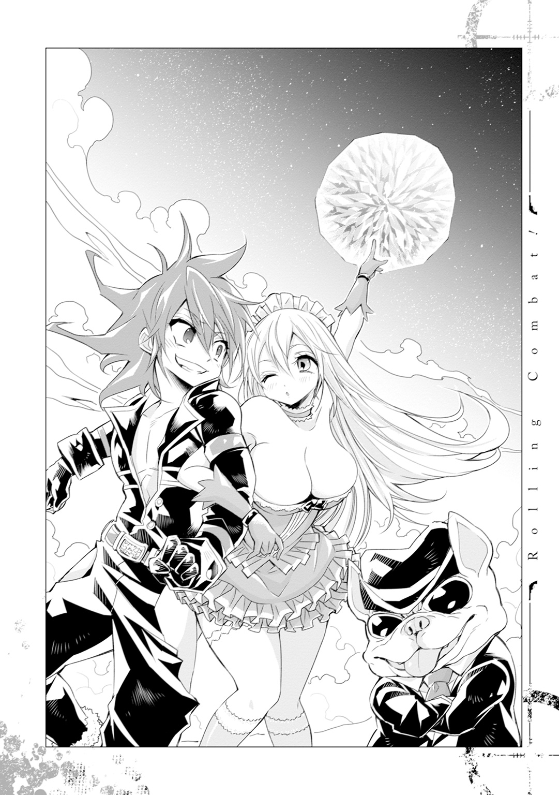
あとがき
初めまして、ジョニー音田というものです。
このたびは、ジャンプ小説新人賞'14Winterキャラクター小説部門にて銀賞という栄誉ある賞をいただき、作家としてデビューする運びとなりました。
受賞の報せを聞いた時、音田の年齢は二十代後半に差し掛かっていました。新人という肩書が少しだけ窮屈になり、また夢を追うということが、昔から比べて少しだけタフな作業に変わり始めていた年齢です。今回の受賞がなければ、あるいはモチベーションを失い、あるいは力尽き、もしかしたら志半ばで書から離れるという道を選んでいたかもしれません。
そういった意味でも、担当編集の渡辺様をはじめ、受賞を後押しして下さった皆様、本当にありがとうございました。身に余る賞だということは重々承知の上ですが、謹んで拝受させていただきます。
と、いうようなスピーチをガチガチに固めていきましたが、授賞式では特にコメントを求められることはありませんでした。ガチガチの緊張だけが残ったため、この場を借りて発散させていただきました。ありがとうございました。
改めましてこんにちは、ジョニー音田と申します。
まずは本書を手に取っていただき、まことにありがとうございます。数多ある異世界転生モノの小説の中から拙作を選んでいただけたことを、大変嬉しく思います。少しでもあなたの琴線に触れる何かがあったなら幸甚です。
本作の主人公であるウィル・ブラウンは、比較的、個性的なキャラなのですが、実はキャラが固まったのは大分後半の、なんなら一番最後でした。
というのも音田自身が、テーマイラストを描き下ろしてくださった岩本先生の著書である『magico』の大ファンであるため、憧れとしている世界観に自分のそれを持ち込むことに抵抗を感じていたからです。
当初は、かっこいい、可愛い、勇気のある、義に熱い、など、シオンやエマと同じように見守っていたいと思える主人公像を心掛けました。しかしどうにもうまくいかず「やっぱり最初から書き直そう」が何度も発生し、パソコンの前で悶々とする日々を過ごしていました。期限だけが迫ってくる中、どこかのタイミングで、自分が持っているものしか出せないのだと気付きました。
憧れを目標や標榜としておくことは大事だけれど、急に同じようなことをしたいと思っても、当然、できるわけがない。だって中身が伴っていないのだから。その時の自分が持っているものでしか積み上げられないのだから、目標と同じ高さになんてできるわけがない。
そんな当たり前のことを、実践して初めて理解できたのです。
そうして生まれたのが、ショタの皮をかぶったド変態のクズ野郎です。
説明が何段階か飛んでしまいました。要は、憧れと現実は別物なのだから、完全に切り離して考えて、自分の中にあるものだけでやりくりしようと開き直った結果、得意分野（？）である徳の低い主人公で書き始める気になれたのです。
同時受賞をした望月充っ先生に「え、その主人公、ロリコンなんだよね？ で、自分の中にあるものしか出せないって言ってたよね？ え？」と、ゾッとしたような顔をされましたが、強めに否定しました。音田の中にあるのは、キャラクターとしてのロリコン（本物は駄目）をいじるのが面白いのではないか、という考え方であって、作品に乗せて性癖を叫んだわけじゃないです。僕はロリコンじゃない。
と、いうような二次災害が後にあったものの、その開き直りがどうにかうまいこといったようで、不恰好ながらも本作を書き上げることができました。もちろん「完成した」と「完成度」は別の話なわけで、今でもその時の選択が正解だったかは分かりません。本書を手に取ってくださった皆様が、判断していただけたら幸いに思います。
結びとなりましたが、ウィルとレグバのネーミングについて相談をさせて貰った、株式会社Regal Guitar Instrumentsの皆様、銃器の仕様についてアドバイスをいただいた石井様、その他、作家活動を応援していただいた友人や家族の皆様、あなた方のご支援がなければ、今の音田はあり得ませんでした。本当にありがとうございます。
担当編集の渡辺様をはじめ、ＪＵＭＰ ｊ ＢＯＯＫＳ編集部の皆様、何かと理解の悪い音田に粘り強くご指導・ご鞭撻をいただき、まことにありがとうございました。またご迷惑をかけてしまうとは思いますが、面白い話を書いていけるように頑張りますので、今後ともよろしくお願いいたします。
岩本直輝先生、素敵なイラストの数々をありがとうございました。イラストが上がってきたときには失神するほど感激でした。また何かでご一緒させていただく機会があれば、その時までには未熟さを抜いておきたいと思います。
そして本書を手に取ってくださったあなた、重ね重ねになりますが、本当にありがとうございます。今後ともあなたの何かに繫がるお話を書けるように邁進していきたいと思いますので、何卒、よろしくお願いいたします。
それでは、また。
二〇一五年 夏 ジョニー音田
本書は、ジャンプ小説新人賞'14Winterキャラクター小説部門《銀賞》受賞作『Rolling Combat!』を加筆修正のうえ、改題したものです。
著者プロフィール
ジョニー音田［ジョニー・おんだ］
群馬県出身。
ジャンプ小説新人賞'14Winterにおいて『Rolling Combat!』でキャラクター小説部門《銀賞》を受賞。
同作を改題した『ローリング・コンバット！～落ちこぼれ自衛官、異世界の中心で不純な愛を叫ぶ～』（本書）でデビュー。
岩本直輝［いわもと・なおき］
秋田県出身。
２００３年、「黄金の暁 -GOLDEN DAWN-」でデビュー。
２０１１年、『週刊少年ジャンプ』において『magico』で連載デビュー。
ジャンプジェイブックスDIGITAL
ローリング・コンバット！
落ちこぼれ自衛官、異世界の中心で不純な愛を叫ぶ
小説 ジョニー音田
イラスト 岩本直輝
© 2015 J.Onda/Naoki Iwamoto
２０１５年11月30日発行
この電子書籍は、ジャンプジェイブックス「ローリング・コンバット！ 落ちこぼれ自衛官、異世界の中心で不純な愛を叫ぶ」
２０１５年10月７日発行の第１刷を底本としています。
装丁 岩井美沙・櫛田圭子（バナナグローブスタジオ）
編集協力 北奈桜子
担当編集 渡辺周平
編集人 浅田貴典
発行者 鈴木晴彦
発行所 株式会社 集英社
〒１０１－８０５０
東京都千代田区一ツ橋２丁目５番10号
０３－３２３０－６０８０（読者係）
制作所 株式会社ＩＣＥ
本作品の全部また一部を無断で複製、転載、改竄、インターネット上に掲載すること、および有償無償に関わらず、本データを第三者に譲渡することを禁じます。なお個人利用の目的であっても、コピーガードを解除しての複製は、法律で禁じられています。